<!DOCTYPE html PUBLIC "-//W3C//DTD XHTML 1.0 Strict//EN" "http://www.w3.org/TR/xhtml1/DTD/xhtml1-strict.dtd">
<html lang="en" xmlns="http://www.w3.org/1999/xhtml">
<head>
<meta http-equiv="content-type" content="text/html; charset=utf-8" />
<meta name="viewport" content="width=device-width, initial-scale=1" />
<title>Meta-Analysis of Field Studies on Beauty and Professional Success (full text)</title>
<meta name="description" content="The full text of Zuzana Irsova, Tomas Havranek, Kseniya Bortnikova, Frantisek Bartos (2025), &quot;Meta-Analysis of Field Studies on Beauty and Professional Success.&quot; Charles University, Prague. Available at meta-analysis.cz/beauty" />
<link href="/style.css" rel="stylesheet" type="text/css" />
<link href="/paper.css" rel="stylesheet" type="text/css" />
<link rel="canonical" href="https://meta-analysis.cz/beauty/paper/" />
<meta name="citation_title" content="Meta-Analysis of Field Studies on Beauty and Professional Success" />
<meta name="citation_author" content="Zuzana Irsova" />
<meta name="citation_author" content="Tomas Havranek" />
<meta name="citation_author" content="Kseniya Bortnikova" />
<meta name="citation_author" content="Frantisek Bartos" />
<meta name="citation_publication_date" content="2025" />
<meta name="citation_pdf_url" content="https://meta-analysis.cz/beauty/beauty.pdf" />
<meta property="og:site_name" content="meta-analysis.cz" />
<meta property="og:type" content="article" />
<meta property="og:title" content="Meta-Analysis of Field Studies on Beauty and Professional Success (full text)" />
<meta property="og:description" content="The full text of Zuzana Irsova, Tomas Havranek, Kseniya Bortnikova, Frantisek Bartos (2025), &quot;Meta-Analysis of Field Studies on Beauty and Professional Success.&quot; Charles University, Prague. Available at meta-analysis.cz/beauty" />
<meta property="og:url" content="https://meta-analysis.cz/beauty/paper/" />
<script type="application/ld+json">
{
 "@context": "https://schema.org",
 "@graph": [
  {
   "@type": "ScholarlyArticle",
   "@id": "https://meta-analysis.cz/beauty/paper/#article",
   "mainEntityOfPage": "https://meta-analysis.cz/beauty/paper/",
   "url": "https://meta-analysis.cz/beauty/paper/",
   "headline": "Meta-Analysis of Field Studies on Beauty and Professional Success",
   "name": "Meta-Analysis of Field Studies on Beauty and Professional Success",
   "inLanguage": "en",
   "license": "https://creativecommons.org/licenses/by/4.0/",
   "isAccessibleForFree": true,
   "author": [
    {
     "@type": "Person",
     "name": "Zuzana Irsova"
    },
    {
     "@type": "Person",
     "name": "Tomas Havranek"
    },
    {
     "@type": "Person",
     "name": "Kseniya Bortnikova"
    },
    {
     "@type": "Person",
     "name": "Frantisek Bartos"
    }
   ],
   "isPartOf": {
    "@id": "https://meta-analysis.cz/#website"
   },
   "abstract": "Common wisdom suggests that beauty helps in the labor market. We show that two factors combine to explain away most of the mean beauty premium reported in the literature. First, correcting for publication bias reduces the premium by at least a third. Second, controlling for cognitive ability renders the premium small (mean = 1.1%; 95% CrI = −0.8%, 3.0%) for all occupations except sex workers, where appearance is a direct input. The beauty premium is similar for earnings and productivity, a fact inconsistent with discrimination based on employer tastes for beauty. We find little evidence of attenuation bias that could offset publication and omitted-variable biases. To obtain these results we collect 1,159 estimates of the beauty premium in 67 studies and codify 35 aspects that reflect estimation context. We employ recently developed techniques to account for publication bias and model uncertainty.",
   "datePublished": "2025"
  }
 ]
}
</script>
</head>
<body>
<div id="wrapper">
<!-- start header -->
<div id="logo">
	<a class="masthead-home" href="/">meta-analysis.cz</a>
	<p class="site-name"><a href="/beauty/">Beauty and Professional Success: A Meta-Analysis</a></p>
	<h2> <span class="mk">&raquo;</span>&nbsp;&nbsp;&nbsp; the full text</h2>
</div>
<div id="header">
	<div id="menu">
		<ul>
			<li class="current_page_item"><a href="/beauty/paper/">Full text</a></li>
			<li><a href="/beauty/beauty.pdf">Paper (PDF)</a></li>
			<li><a href="/beauty/">Data and code</a></li>
			<li><a href="/papers/">Papers in full</a></li>
			<li><a href="/">All meta-analyses</a></li>
		</ul>
	</div>
</div>
<!-- end header -->
<!-- start page -->
<div id="page">
	<div id="content">
		<div class="post">
			<div class="entry">

<h1 class="paper-title">Meta-Analysis of Field Studies on Beauty and Professional Success</h1>
<p class="byline">Zuzana Irsova, Tomas Havranek, Kseniya Bortnikova and Frantisek Bartos</p>

<div class="attribution">
<p>Zuzana Irsova, Tomas Havranek, Kseniya Bortnikova, Frantisek Bartos (2025), "Meta-Analysis of Field Studies on Beauty and Professional Success." Charles University, Prague. Available at meta-analysis.cz/beauty.</p>
<p class="attr-links"><a href="/beauty/beauty.pdf">Paper (PDF)</a> &nbsp;&middot;&nbsp; <a href="/beauty/">Data and code</a></p>
</div>

<nav class="toc" aria-label="Contents"><h2>Contents</h2><ol><li><a href="#sec-1">1. Introduction</a></li><li><a href="#sec-2">2. Results</a><ol><li><a href="#sec-2-1">2.1. Conceptual Background</a></li><li><a href="#sec-2-2">2.2. Publication Bias</a></li><li><a href="#sec-2-3">2.3. Heterogeneity</a></li></ol></li><li><a href="#sec-3">3. Discussion</a></li><li><a href="#sec-data-availability">Data Availability</a></li><li><a href="#sec-code-availability">Code Availability</a></li><li><a href="#sec-acknowledgments">Acknowledgments</a></li><li><a href="#sec-author-contributions-statement">Author Contributions Statement</a></li><li><a href="#sec-competing-interests-statement">Competing Interests Statement</a></li><li><a href="#sec-4">4. Methods</a><ol><li><a href="#sec-4-1">4.1. Data</a></li><li><a href="#sec-4-2">4.2. Publication Bias</a></li><li><a href="#sec-4-3">4.3. Heterogeneity</a></li></ol></li><li><a href="#sec-5">5. Tables and Figures</a></li><li><a href="#sec-references">REFERENCES</a></li><li><a href="#sec-supplementary-information-for-online-publication">Supplementary Information (for Online Publication)</a></li></ol></nav>

<div class="frontmatter">
<p>Zuzana Irsovaa,b,† , Tomas Havraneka,b,c,† , Kseniya Bortnikovaa , and František Bartošd</p>
<p>a Charles University, Prague b Meta-Research Innovation Center, Stanford c Centre for Economic Policy Research, London d University of Amsterdam</p>
<p>December 1, 2025</p>
<p>* Corresponding author: Zuzana Irsova, irsova.com. Contact email: zuzana.irsova@fsv.cuni.cz. † These authors contributed equally to this work. Data, code, and additional materials are available in an online appendix at meta-analysis.cz/beauty.</p>
</div>
<div class="abstract">
<h2>Abstract</h2>
<p>Common wisdom suggests that beauty helps in the labor market. We show that two factors combine to explain away most of the mean beauty premium reported in the literature. First, correcting for publication bias reduces the premium by at least a third. Second, controlling for cognitive ability renders the premium small (mean = 1.1%; 95% CrI = −0.8%, 3.0%) for all occupations except sex workers, where appearance is a direct input. The beauty premium is similar for earnings and productivity, a fact inconsistent with discrimination based on employer tastes for beauty. We find little evidence of attenuation bias that could offset publication and omitted-variable biases. To obtain these results we collect 1,159 estimates of the beauty premium in 67 studies and codify 35 aspects that reflect estimation context. We employ recently developed techniques to account for publication bias and model uncertainty.</p>
</div>
<p class="keywords"><b>Keywords:</b> Beauty premium, productivity, meta-analysis, model uncertainty, publication bias</p>
<h2 id="sec-1">1. Introduction</h2>
<p>According to the authoritative 2011 survey by Hamermesh (1) , people in the top third of looks earn about 5% more compared with average-looking people. We find a remarkably similar mean figure across 1,159 estimates reported in 67 studies published by 2024: moving up along the distribution of beauty by one standard deviation, from the 50th to the 84th percentile, is on average associated with an increase in earnings by 4.3% (5.2% if we give each study, not each estimate, the same weight). But as Figure 1 shows, individual studies have yielded increasingly divergent results, from −5% to 30%. What explains the dispersion in results? Does the robust mean association imply that employers discriminate based on their taste for employees’ beauty? The answers have consequences for anti-discriminatory legislation and compensations after accidents damaging looks. In his superb narrative survey Hamermesh (1) could not make strong conclusions on these questions. After more than a decade, enough studies have been published to allow us to examine both questions formally using meta-analysis, the quantitative method of research synthesis.</p>
<p>— Figure 1 around here — Our main finding is that the observed association between beauty and earnings does not imply that beauty itself affects outcomes in the labor market. The mean premium reported in the literature is exaggerated by publication bias. Conservative corrections for publication bias reduce the mean premium from about 5% to about 3%, while other techniques suggest a more aggressive reduction. Controlling for cognitive ability in the primary study or using difference-in-differences makes the remaining premium small (mean = 1.1%; 95% CrI = −0.8%, 3.0%), with the exception of sex workers. These findings suggest that beauty is not important in the labor market per se but via its correlation with other characteristics. We corroborate this conclusion by showing that the effect of beauty is similar for earnings and (imperfect) measures of productivity, such as sales, research output, and study outcomes. If the beauty premium reported in the literature was due to taste-based discrimination by employers, we would expect a larger correlation of beauty with earnings than with productivity. Finally, we control for several characteristics reflecting the potential extent of measurement error. We fail to find evidence of substantial attenuation bias (measurement error bias in the downward direction). Two existing studies are especially relevant for our analysis. First, Nault et al. (2) provide an excellent summary of previous meta-analyses related to the effect of beauty on various outcomes and personal characteristics. The meta-analyses, in line with our results and those of Hamermesh (1) , suggest a robust positive correlation between beauty and success. Nevertheless, the previous meta-analyses mostly focus on laboratory experiments with indirect external validity for the labor market and do not report economic effects (such as the percent increase in earnings following a one-standard-deviation increase in beauty) but standardized coefficients (such as correlation or Cohen’s d), which complicates interpretation. Moreover, the meta-analyses neither correct the literature for publication bias nor try to systematically tackle model uncertainty. Nault et al. (2) conclude their survey of meta-analyses by observing that, aside from earnings, beauty is also correlated with other characteristics of employees, indicating that the literature is more consistent with statistical than taste-based discrimination.</p>
<p>A second study intimately related to ours is Stinebrickner et al. (3) . Using unique data with detailed information on job tasks, the authors show that the beauty premium exists only in occupations where interpersonal interaction is important. Taken together, the results of Stinebrickner et al. (3) , Nault et al. (2) , and our study present independent evidence against employer taste-based discrimination in relation to beauty. Our main contribution on top of these and other studies is threefold. First, we present the meta-analysis of the economics literature on the beauty premium. Second, we use recently developed techniques to correct the literature for publication bias. Third, using methods that address model uncertainty we trace the differences in results to differences in estimation context. Doing so allows us to gauge the effect of omitted variables, measurement error, and other identification issues.</p>
<p>Publication bias describes a situation when reported results represent a systematically different subset of all results obtained by researchers. Ioannidis et al. (4) and Bartoš et al. (5) show that the problem is ubiquitous in economics and that the typical estimate is exaggerated twofold due to the bias. Other high-quality recent papers document the extent of the problem (6–15) . The baseline bias-correction method that we use is Robust Bayesian Meta-Analysis (RoBMA), which is a weighted average of various existing bias-correction methods with weights proportional to model fit and parsimony (16–19) .</p>
<p>Most meta-analysis techniques correct for publication bias by exploiting the property of standard regression analysis: estimates should be independent of their standard errors. If a correlation exists, it is attributable to publication bias: large standard errors, given by noise in data or methods, must be compensated by large point estimates to produce statistical significance. It follows that more precise estimates are less likely to be biased. This is, however, a strong assumption, and a variety of mechanisms can produce a correlation between estimates and standard errors even in the absence of publication bias. For example, Keane and Neal (20) show that, with instrumental variables, the correlation arises naturally. Method choices may affect both estimates and standard errors systematically. Precision can be p-hacked (changed by changing specification in order to achieve statistical significance), which introduces reverse causality. To address these problems we use the novel Meta-Analysis Instrumental Variable Estimator (MAIVE) (21) , which accounts for potential spurious precision and various forms of p-hacking. We also employ the p-hacking correction by Mathur (22) .</p>
<p>Our other major contribution is a detailed examination of the link between estimation context and the beauty premiums reported in the literature. Because randomized controlled trials on the effect of beauty on earnings are infeasible, and convincing instruments are hard to come by (23) , the bulk of the literature relies on ordinary least squares and tries to control for observable characteristics that might be correlated with earnings or beauty. A few studies, such as Mehic et al. (24) , exploit the shift to online learning during the Covid-19 pandemic and employ the difference-in-differences method. We collect 35 variables that reflect the context in which the premiums are obtained: measurement of beauty (e.g. photo-rated vs. interviewer-rated), measurement of success (earnings or different proxies for productivity), occupation characteristics (e.g. interpersonal intensity, output measurability), method choice (e.g. control for cognitive skills or social skills), and publication characteristics (e.g. publication status and journal impact factor).</p>
<p>Due to the large number of factors plausibly capturing estimation context and leading to different results, we face substantial model uncertainty: it is unclear ex ante which variables should be included in the final model. The natural response to model uncertainty is Bayesian model averaging (BMA). (25–28) BMA runs many regressions with different combinations of controls and then makes a weighted average over them with weights proportional to data fit and parsimony. To account for potential collinearity we use the dilution prior (29) . Our results suggest that only three variables robustly and systematically explain the differences in the reported beauty premiums: 1) the standard error (a proxy for publication bias), 2) a dummy for sex workers, and 3) control for cognitive skills. Conditional on correcting for publication bias, controlling for cognitive skills (or using difference-in-differences), and focusing on other occupations than sex workers, the mean beauty premium is only about 1% and not statistically different from zero. This contrasts the frequently cited conclusion by Hamermesh’s careful narrative survey that “beauty pays” in the labor market (1) .</p>
<p>An important issue in the literature on the beauty premium is attenuation bias (23,30,31) . While Hamermesh (1) shows that, across cultures, there is surprising agreement on what it means to be beautiful, some measurement error is inevitable. If the measurement error is classical, techniques such as ordinary least squares will yield beauty premiums that are biased towards zero. Two general strategies to combat the problem have been suggested in the literature. First, instrumental variables: for example, Hamermesh et al. (32) instrument children’s looks by their mother’s, and Gu and Ji (33) use the looks of other blood relatives. While these instruments can also help with other endogeneity issues, we believe that they are most likely to be useful in attenuating attenuation bias. Second, some studies try to limit measurement error by employing a large number of raters or by using software rating. We find no evidence consistent with substantial attenuation bias: IV estimates tend to be similar to OLS estimates and it does not seem to matter systematically how many raters the study uses or whether it employs software rating.</p>
<h2 id="sec-2">2. Results</h2>
<h3 id="sec-2-1">2.1. Conceptual Background</h3>
<p>Physical attractiveness has long been reported to shape how individuals are perceived and rewarded, from education to criminal justice to labor markets. In employment settings, those judged to be more attractive tend to earn higher wages, receive better evaluations, and have more favorable hiring prospects than others (34,35) . But even putting aside potential omitted variables and publication bias, the reported size and nature of this “beauty premium” vary, sometimes substantially, across jobs, industries, and social groups, as Figure 2 illustrates for our metaanalysis data. An emerging interdisciplinary literature points to a wide range of mechanisms linking appearance to labor market outcomes, from early-life reinforcement to institutional bias to cultural valuation.</p>
<p>— Figure 2 around here — Economic models typically distinguish between taste-based discrimination, in which decisionmakers simply prefer attractive individuals, and statistical discrimination, where appearance is treated as a signal of unobserved productivity (34) . Both frameworks help explain empirical patterns reported in the literature, but they bracket important psychological and sociological dimensions that shape how attractiveness is perceived and rewarded.</p>
<p>Psychological research emphasizes perceptual bias, especially the halo effect: the tendency to attribute intelligence, competence, and warmth to attractive individuals (36–39) . These assumptions can influence treatment in school, hiring, and evaluation, even in the absence of actual performance differences. For example, Zebrowitz et al. (40) report that facial cues linked to attractiveness systematically affect perceived intelligence, independent of measured ability. Such effects are especially pronounced when evaluations are subjective or involve limited information. From a sociological perspective, attractiveness may function as a form of capital. Bourdieu’s (41) concept of social capital captures how beauty can facilitate access to influential networks or resources. Hakim (42,43) introduces erotic capital as a distinct asset, comprising physical appearance, charisma, and self-presentation, that is convertible into social or economic advantage, particularly in settings where personal impression matters. These frameworks suggest that beauty is not merely a source of bias but a structured advantage that interacts with institutional norms.</p>
<p>Attractiveness could also shape outcomes through developmental feedback over the life course. Attractive children achieve slightly higher test scores and attain more schooling. These early advantages may reflect social feedback mechanisms, although the precise channels remain debated (32) . The differences could accumulate over time, influencing both cognitive and noncognitive development. In longitudinal data, more attractive adolescents tend to complete more education and earn higher wages as adults (31) . These effects may reflect subtle but persistent differences in how individuals are treated, rather than differences in underlying ability. Some evolutionary psychologists have proposed a biological correlation between beauty and intelligence, potentially driven by assortative mating or shared heritable factors (44–46) . This relationship is theoretically attributed to assortative mating or shared heritable factors, mechanisms well-documented in other domains (47,48) . The idea is that intelligent individuals are more likely to partner with attractive ones, producing offspring with both traits. While logically possible, the evidence is limited. A large genetically informed study by Mitchem et al. (49) finds no meaningful phenotypic or genetic correlation between attractiveness and general intelligence. These theories remain conceptually relevant but empirically as yet unsubstantiated.</p>
<p>The beauty premium also seems to vary systematically across job characteristics. It tends to be reported the strongest in interpersonal or client-facing roles, such as sales, education, or hospitality, where physical appearance might plausibly influence persuasion, rapport, or customer satisfaction (3,50) . In contrast, it is often reported negligible in solitary or technical roles where output is measurable and appearance plays no obvious role. Two features appear particularly important: the degree of interpersonal interaction required, and the subjectivity of performance evaluation. In contexts where judgments are discretionary or socially mediated, attractiveness tends to matter more.</p>
<p>Finally, the rewards to beauty can be shaped by culture and identity. In societies that devote more economic resources to appearance (for example, higher per-capita spending on grooming and cosmetics) beauty may carry greater economic value. But standards of attractiveness are not universally applied. Romi (51) argues that the beauty premium is conditioned by gender, race, and age, with norms often enforced unevenly across social groups. In some contexts, attractiveness may buffer against stigma; in others, it may reinforce exclusion.</p>
<p>Despite extensive theorizing, empirical estimates of the beauty premium remain inconsistent, with reported effects ranging from negligible to large even within individual contexts and for individual countries, as Figure 1 and Figure 2 demonstrate. We conduct a comprehensive meta-analysis to reconcile these discrepancies by identifying systematic patterns in the evidence and correcting for publication bias. This approach allows us to assess when beauty appears to matter, to what extent the premium reflects differences in measured ability, and how far contextual factors account for the wide dispersion of findings.</p>
<h3 id="sec-2-2">2.2. Publication Bias</h3>
<p>Publication bias, broadly defined, is the difference between the mean reported result and the mean result originally obtained by researchers. The meta-analysis literature sometimes distinguishes between narrowly defined publication bias and p-hacking (52) . When the distinction is made, publication bias denotes the decision to report an estimate or hide it in a file drawer. P-hacking then denotes the process by which researchers adjust their model to make their estimates more publishable—for example, more statistically significant. Given that under extreme p-hacking no limits exist for the resulting estimates, no model can convincingly account for p-hacking. Most meta-analysis techniques were developed with narrowly defined publication bias in mind. Some of them, though, also address many plausible forms of p-hacking. We use the term publication bias in its more general meaning, separating it from p-hacking only when necessary.</p>
<p>— Figure 3 around here —</p>
<figure>
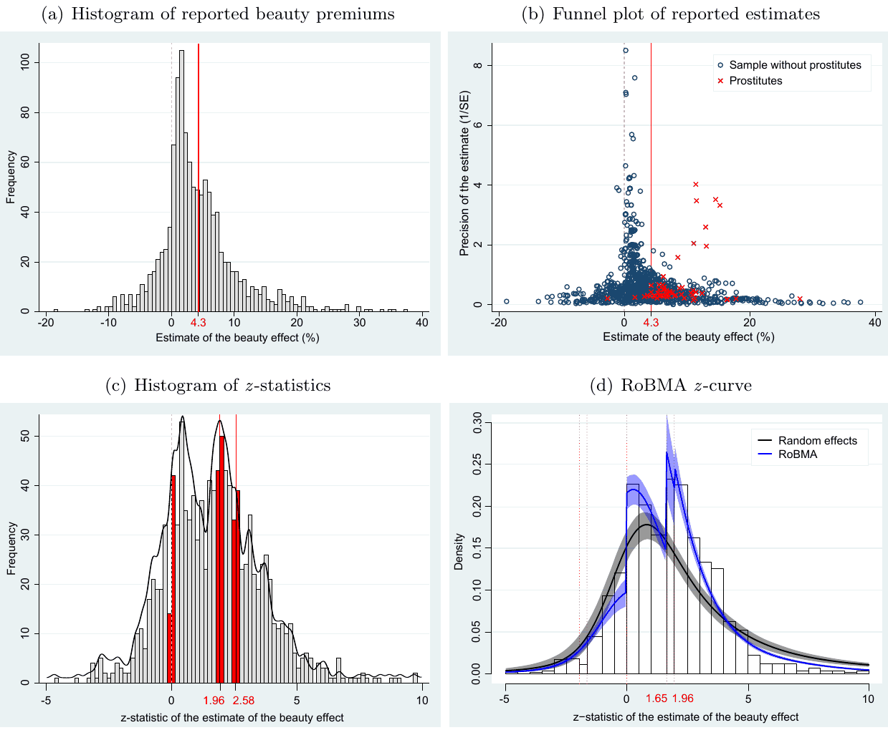
<figcaption><b>Figure 3.</b> shows visual diagnostics of publication bias. In panel (a) we report the distribution</figcaption>
</figure>
<p>of the estimates. An asymmetrical histogram may signal publication bias, perhaps against negative estimates of the beauty premium, but can also be consistent with heterogeneity and no bias. We observe asymmetry towards large positive estimates. A more informative diagnostic of publication bias is the so-called funnel plot (53,54) , shown here in panel (b). It is a scatter plot of estimated beauty effects on the horizontal axis against their precision (1/SE) on the vertical axis. The most precise estimates at the top of the figure are close to each other, while less precise estimates at the bottom are more widely dispersed.</p>
<p>Crucially, imprecise estimates larger than the mean should be just as common as imprecise estimates smaller than the mean. A symmetrical inverted funnel shape should follow, and symmetry in the absence of publication bias is the key feature of the funnel plot. Panel (b) in Large imprecise estimates are much more common than small, and especially negative, imprecise estimates. (It is also apparent that the funnel for sex workers is completely different from the rest of the data, which is why in the Supplementary Information we conduct the analysis separately for the subsample of sex workers and other occupations.) In other words, estimates are positively correlated with their standard errors. Because the correlation arises if researchers prefer positive or statistically significant estimates, it is synonymous with publication bias in most of the meta-analysis literature.</p>
<p>Panel (c) in Figure 3 illustrates the importance of the psychologically important thresholds for the z-statistic. Estimates that are just negative and much less likely to be reported than estimates that are just positive, a finding corroborated by Table S5 in the Supplementary Information. Panel (d) shows how our baseline model, Robust Bayesian Meta-Analysis (RoBMA), is able to fit the distribution of reported z-statistics. The fit is not perfect, but unlike random effects it correctly captures the jumps at zero and significance thresholds.</p>
<p>RoBMA is a weighted average of several bias-correction techniques (both selection models and techniques based on the funnel plot), with weights proportional to data fit and model parsimony (16–19) . Details are available in the Methods section. We use two versions of RoBMA: the simple one that treats each estimate as the unit of analysis, and the three-level one that treats each study as the unit and accounts for within-study correlation among estimates. RoBMA has two main advantages. First, it reduces possible p-hacking at the meta-analysis level, because meta-analysts do not choose the individual correction model (out of the great number available) but use a well-established mechanism that assigns weights to each individual model. Second, it is computationally feasible even for small samples, which is especially important in our case because for many contexts we have limited sample sizes. This is also the reason why we report simple RoBMA along with three-level RoBMA: the former is stable even with a small number of studies.</p>
<p>— Table 1 around here — The main results for the overall sample are reported in Table 1. After correcting for publication bias, simple RoBMA suggests a mean beauty premium of 0.2, while three-level RoBMA yields 3.1. Because some databases are used repeatedly in different studies and some studies use several databases, additionally we report three-level RoBMA where database, not study, is the main unit of analysis. Doing so yields a mean beauty premium of 2.9. Running separately a selection model (55) and a funnel-based model (PET-PEESE) (56) , which are constituent models of simple RoBMA, yields results close to those of simple RoBMA. Nevertheless, all these models share a common assumption: estimates in the literature are not actively p-hacked. For this reason we also report the results of two models that explicitly allow for p-hacking: MAIVE (Meta-Analysis Instrumental Variable Estimator) (21) and RTMA (Right-Truncated Meta-Analysis) (22) . These models yield mean corrected estimates of 3.1 and 2.3, respectively. We conclude that the mean beauty premium conservatively corrected for publication bias is around 3, down from about 5 prior to the correction.</p>
<p>Part 2 of Table 1 shows that excluding sex workers further reduces the corrected premium, and that focusing on standardized effects (instead of percent increase in earnings or productivity) yields very small premiums. Table 2 shows the corrected mean premiums for individual contexts. Due to small samples in some subgroups, three-level RoBMA often fails to track heterogeneity and yields results close to the overall mean. Simple RoBMA shows more variation in results, but reports small beauty premiums for all contexts except scientific research and sex industry. An important result concerns cognitive and non-cognitive skill controls. When only non-cognitive skill control is used, the beauty premium remains substantial. When cognitive control is used individually or jointly with non-cognitive, the mean beauty premium is small. This suggests that control for cognitive skills reduces the beauty premium independently of control for noncognitive skills. Finally, we observe that the bias-corrected beauty premium is similar for earnings and productivity measures.</p>
<p>— Table 2 around here —</p>
<h3 id="sec-2-3">2.3. Heterogeneity</h3>
<p>This section has two goals. First, we examine whether our findings regarding publication bias are robust to the inclusion of controls reflecting study design. The approach is complementary to that of the MAIVE method employed in the previous section: MAIVE accounts for unobserved heterogeneity that may bias meta-analysis models; now we explicitly control for observable data and method choices, including those traditionally linked to “risk of bias” in meta-analysis. The approach of the current section will dominate MAIVE if sample size is correlated with method choices that influence both the reported estimates and their standard errors. Second, we examine why, on top of differences in the propensity for publication bias, the estimates reported in the literature vary so much, extending the subgroup analysis of the previous section. The variables reflecting study context, as well as the Bayesian model averaging approach (BMA) used to link this context to reported beauty premiums, are described in the Methods section. &#8212; Figure 4 around here &#8212; Figure 4 presents a graphical summary of Bayesian model averaging results. On the vertical axis the explanatory variables are ranked according to their posterior inclusion probabilities from the highest at the top to the lowest at the bottom. In other words, the variables shown at the top are the ones most useful in explaining differences in the reported beauty effects. The horizontal axis shows the values of the cumulative posterior model probability, the model weight used in BMA. The models on the left display the best combination of data fit and parsimony. Blue color (darker in grayscale) means that the estimated parameter of the corresponding explanatory variable is positive. Red color (lighter in grayscale) means the estimated parameter is negative. No color means the corresponding explanatory variable is excluded. The figure shows that only 4 variables out of the 35 that we consider are robustly associated with the reported beauty effects: standard error (proxy for publication bias), cognitive skill control, a dummy variable for sex workers, and the impact factor of the journal in which the study was published. &#8212; Table 3 around here &#8212; Table 3 shows the numerical results of Bayesian model averaging and a simple stepwise regression provided as a frequentist robustness check. The posterior mean in BMA denotes the partial derivative of the reported beauty premium with respect to the corresponding study characteristic. For example, including a control for cognitive skills typically reduces the beauty premium by 2.3 percentage points compared to the case in which cognitive skills are ignored in primary studies. The corresponding variable also has a high posterior inclusion probability, almost 100%. The same is true for the standard error: even when we explicitly control for heterogeneity we obtain strong evidence for publication bias. We also find that, unsurprisingly, sex workers enjoy substantially larger beauty premiums (by about 5 percentage points) than other occupations. The BMA results also suggest that studies published in more prestigious journals (as measured by the impact factor) tend to publish larger beauty premiums. Nevertheless, the latter finding does not survive the frequentist check reported in the right-hand part of Table 3. In contrast, the stepwise regression shows statistical significance for the variable related to difference-in-differences, for which BMA finds a large coefficient estimate (−2.5) but an inclusion probability slightly below 50%. The analysis of heterogeneity yields three key takeaways. First, the finding of publication bias is robust to explicit control for observables. Second, most aspects related to estimation context are not systematically associated with the reported beauty effects. We find no consistent evidence that variables potentially associated with the extent of attenuation bias (algorithmic beauty rating, number of raters, IV estimation) affect the results systematically. Similarly, it does not seem to matter systematically whether researchers consider the effect of beauty on earnings or on proxies for productivity, whether interpersonal intensity and output measurability in the given context is high or low, and whether the researchers is conducted in different countries (proxied by beauty spending and culture). Third, much of the remaining beauty premium beyond publication bias for occupations other than sex workers is due to a correlation between beauty and cognitive ability. The third point is best illustrated by computing the mean beauty premium conditional on correcting for publication bias and controlling for cognitive ability either via an explicit inclusion of the control or via difference-in-differences (Table 4). When we plug in the corresponding variables to the results of BMA, we obtain an implied beauty premium of 0.6% (95% CrI = −1.5, 2.6). For sex workers, the implied premium is 5.4% (95% CrI = 2.3, 10.5); for all other contexts the implied premium is close to zero (Part 2 of the table). Implied beauty premiums can also be computed using the RoBMA approach (Part 3 and 4), though this technique delivers more uncertain results for individual occupations including sex workers. Doing so for the three-level RoBMA yields a premium of 0.4% (95% CrI = 0.0, 2.2). All individual contexts examined in Part 4 are consistent with small beauty premiums. Because the occupations examined in the beauty literature are not representative of the entire economy, we use sampling weights to better approximate the US workforce. Doing so yields a mean beauty premium of 1.1% (95% CrI = −0.8, 3.0). &#8212; Table 4 around here &#8212;</p>
<h2 id="sec-3">3. Discussion</h2>
<p>Across the literature, we find a sizable reported beauty premium (around 5%) that falls by one-third or more on average (to about 3%) after correcting for publication bias and becomes small (about 1% and not statistically different from zero) once cognitive ability is controlled. A natural interpretation is that attractiveness correlates with accumulated human capital, not with an independent market value of appearance. Developmental evidence provides results consistent with this view: attractive children could receive more encouragement from teachers and peers, attain slightly higher test scores, and complete more education<sup class="cite"><a href="#ref-32">32</a></sup>. If beauty maps into schooling and measured ability through such early reinforcement, conditioning on those factors should largely absorb the premium, as we find. This pattern does not align fully with standard models of statistical discrimination in settings where ability is observed. Under those models, appearance is a proxy for unobserved productivity, and a residual premium should persist even after ability is controlled. Instead, our results suggest that appearance proxies measured skill differences reported in primary studies, with little evidence of an additional payoff once information about ability is available. In other words, the beauty-wage correlation largely reflects differential skill accumulation rather than continuing reliance on appearance as a signal. Under this developmental framework, cognitive ability could act as a mediator rather than a confounder; thus, while we do not find strong evidence of substantial direct discrimination, beauty could remain economically significant as a driver of human capital acquisition that the labor market later rewards. The aggregate evidence in our meta-analysis also limits the explanatory power of non-cognitive or purely perceptual channels. Control for soft-skill measures does not attenuate the premium. Laboratory and field studies both suggest that attractiveness can influence judgments in information-poor or subjective settings, especially in customer-facing or interpersonal tasks<sup class="cite"><a href="#ref-3">3</a>,<a href="#ref-35">35</a>,<a href="#ref-37">37</a>,<a href="#ref-38">38</a></sup>. In our meta-analysis, however, extensive subgroup and moderator exploration fails to uncover sizable systematic differences across occupations or industries (with the exception of sex work), likely reflecting both genuine concentration of returns in interpersonal contexts and the limited occupational granularity available in primary studies. Taken together with the collapse of the premium after conditioning on ability, this pattern is not what we would expect if non-cognitive traits or evaluator bias were the dominant drivers in typical wage settings, though minor effects may persist where performance is hard to measure. Focusing on measured ability instead of perceived ability does not change the results qualitatively. Our results cannot be interpreted as supporting a strong genetic or biological link between beauty and intelligence. Twin-based evidence reports little to no phenotypic or genetic association between facial attractiveness and general intelligence in the available data<sup class="cite"><a href="#ref-49">49</a></sup>. Earlier claims of a genetic relationship<sup class="cite"><a href="#ref-45">45</a>,<a href="#ref-46">46</a></sup> have so far not been corroborated by subsequent large-sample research. Overall, the weight of evidence points to educational and developmental mechanisms, with task-specific social returns in interpersonal jobs, and at most a small residual payoff to appearance per se once information about ability is available. Our analysis has two main limitations. First, random errors in beauty measurement can bias the reported estimates, and meta-analysis, downwards. While we cannot fully correct for what almost certainly is an attenuation bias in the literature, we use three strategies to gauge the extent of the problem: comparison of OLS and IV estimates, comparison of human and software rating, and comparison based on the number of raters. More raters or software rating should plausibly diminish measurement error. Because the IV estimates in the literature are unlikely to help with omitted variables or reverse causality, under the assumption of a classical measurement error the difference between OLS and IV serves as a proxy for attenuation bias<sup class="cite"><a href="#ref-57">57</a></sup>. We find no evidence that IV estimates differ systematically from OLS estimates, and it does not seem to matter how many raters are employed or whether software rating is used. Second, for most primary studies we do not have crisp data on job tasks that would allow us to cleanly separate occupations where beauty is likely to be a genuinely productive factor. Stinebrickner et al.<sup class="cite"><a href="#ref-3">3</a></sup> have such data and find no beauty effects for jobs where employees do not come into personal contact with customers. In a meta-analysis setting we can separate beauty premium estimates for occupations where looks are likely to be especially important (lawyers, politicians, etc.) from those where looks are unlikely to matter much (analysts, researchers, etc.). We put sex workers aside as a special category where beauty is a key productive characteristic. Our results show that sex workers enjoy beauty premiums clearly much larger than other occupations, but we fail to find systematic differences among the remaining categories.</p>
<h2 id="sec-data-availability">Data Availability</h2>
<p>All data have been deposited in the meta-analysis.cz repository (meta-analysis.cz/beauty).</p>
<h2 id="sec-code-availability">Code Availability</h2>
<p>All codes have been deposited in the meta-analysis.cz repository (meta-analysis.cz/beauty).</p>
<h2 id="sec-acknowledgments">Acknowledgments</h2>
<p>We are grateful to Henrik Jordahl, Andrew Leigh, and Panu Poutvaara for kindly sharing additional statistics on top of their published datasets. We thank seminar and conference participants at Charles University, University of Canterbury, University of Augsburg, Victoria University of Wellington, and University of Piraeus for useful comments that helped us improve the paper. Z.I. and F.B. acknowledge support from the Czech Science Foundation (grant no. 23-05227M). T.H. and K.B. acknowledge support from the Czech Science Foundation (grant no. 24-11583S).</p>
<h2 id="sec-author-contributions-statement">Author Contributions Statement</h2>
<p>Z.I. and T.H. proposed the research idea; Z.I. and K.B. collected data; Z.I. and F.B. coded the study; T.H. interpreted the results, with assistance from Z.I. and K.B.; T.H. wrote the main text, with assistance from Z.I. and F.B. Finally, T.H. wrote the Supplementary Information, with assistance from F.B.</p>
<h2 id="sec-competing-interests-statement">Competing Interests Statement</h2>
<p>The authors declare no competing interests.</p>
<h2 id="sec-4">4. Methods</h2>
<h3 id="sec-4-1">4.1. Data</h3>
<p>We focus on studies conducted in field settings. Laboratory studies on the subject exist, most prominently the maze experiment by Mobius and Rosenblat<sup class="cite"><a href="#ref-35">35</a></sup>, especially in the field of psychology, and have been covered by previous meta-analyses<sup class="cite"><a href="#ref-2">2</a></sup>. We believe these two parts of the literature are best analyzed separately. While laboratory studies on this topic are very useful and informative, it is not always clear how their findings translate to real-world behavior in the labor market. Aside from external validity issues, a practical consideration is that most laboratory experiments do not report enough information that would allow us to convert their results to the percent increase in earnings or productivity associated with a one-standard-deviation increase in beauty. Figure S1 in the Supplementary Information provides details on how we include individual empirical studies in the meta-analysis. We start with a Google Scholar search. We prefer Google Scholar to other databases because it goes through the full text of studies, not just the title, abstract, and keywords, as is the case for many other sources. After identifying potentially usable studies we also do “snowballing” by inspecting the studies frequently cited among the potentially usable ones. Snowballing reduces our dependence on Google Scholar. We use the following inclusion criteria: i) the study must report the effect of beauty on a continuous variable reflecting earnings or productivity; ii) the beauty measurement used in the study must focus on physiognomy (just the face); iii) the study must focus on the subject’s own earnings or productivity (e.g. not the income of the spouse, firm valuation, or college rank); iv) the study must report statistics that allow us to convert the reported estimate to the percent increase in earnings or productivity following a one-standard-deviation increase in beauty (e.g. studies reporting zero-order correlations or lacking the standard deviation of the beauty measure cannot be converted); v) the study must report standard errors or other statistics from which standard errors can be computed; and vi) the study must report primary results and focus on field (real-world) outcomes; we exclude laboratory experiments and surveys. Based on these criteria, we excluded 69 studies that reported related empirical estimates: 8 for lacking a continuous earnings or productivity variable, 7 for using a beauty measure not based on physiognomy, 12 for not focusing on the subject’s own earnings or productivity, 19 for not reporting convertible statistics (often just correlation coefficients), 9 for missing standard errors, and 14 because they were laboratory experiments or surveys. The literature search was terminated on February 16, 2024. The dataset, together with R and Stata codes and reasons for exclusion of the 69 above-mentioned individual studies, is available at meta-analysis.cz/beauty. The inclusion criteria leave 67 studies listed in Table S1 in the Supplementary Information; we call them primary studies, and together they provide 1,159 estimates of the beauty effect. Each study typically reports many estimates: for example using OLS vs. IV, men vs. women, results for different occupations, etc. In the analysis, and most prominently in subsection 2.3, we control for 35 characteristics that reflect the context in which the estimate was produced in the primary study. Figure S2 shows a box plot of the reported estimates. The studies in the figure are ranked by the age of the data they use from oldest to newest. There is no apparent trend in the findings. Most studies report at least some estimates that are close to the overall mean beauty premium, 4.3% (5.2% when each study, not each estimate, is treated as the unit of analysis). Many studies report much higher estimates, in several cases above 20%. In the analysis we winsorize these data at the 1% level to limit the influence of extreme outliers. Overall we observe substantial variance in results both within and across studies. Figure 1 shows that the estimated coefficients are typically positive but not huge across countries, with the notable exception of Finland (though these are results from a single study on politicians). The figure does not suggest any systematic difference in the beauty premium across cultures or income levels. Panel (a) of Figure 3 shows the histogram of the reported beauty effects. Two facts stand out in the figure. First, the distribution is asymmetrical: while many large positive outliers appear in the literature, few estimates are substantially negative. Second, the mode of the distribution is dominated by estimates that are just positive. Both observations are consistent with publication bias, but they could also be consistent with systematic heterogeneity. Table S2 and Figure 2 give a general overview of the heterogeneity in the literature, more fully explored in subsection 2.3. It does not seem to matter much how beauty is measured. Self-rated measures of beauty tend to be associated with smaller beauty effects, but only a few studies use self-rating. Beauty penalties (comparisons of below-average and average looks) seem to be slightly smaller than beauty premiums (above-average vs. average looks). While in the main analysis we pool both types of estimates together, as a robustness check we also conduct the analysis separately for premiums and penalties. For comparability, we always recompute all estimates to represent the percent increase in earnings or productivity associated with a one-standard-deviation increase in beauty. Regarding the measure of success, the response variable in primary studies, the literature can be divided into two groups: studies focusing on earnings and studies focusing on (imperfect) measures of productivity. Productivity in this context can be measured as sales, research outcomes, study outcomes, electoral success, etc. On average, the mean beauty premium for earnings is identical to the mean premium for productivity: 4.3%, which is consistent with no or little taste-based discrimination by employers. Athletes and politicians seem to enjoy relatively large beauty premiums. Not surprisingly, the beauty premium is the largest for sex workers. Other data characteristics, such as gender and culture, interpersonal intensity, and output measurability, do not seem to be associated with substantial systematic differences in the results. Studies of sex workers form a small and well-identified subset of our database: four studies (6% of the 67 field studies) contributing 55 effect-size estimates (about 5% of the 1,159 observations). These papers rely on four distinct datasets&#8212;U.S. and Canadian anonymous online escort reviews, the 2003 Ecuador HIV Survey, the 2001 Mexico Sex Worker Survey, and the Bangladesh BIDS/UNDP Survey&#8212;and all analyze transactional earnings in settings where client- or interviewer-rated attractiveness directly enters price determination. Given their small number and distinctive institutional context, we treat these papers as a separate subsample (a fact that is also apparent from the funnel plot) and report their associations in dedicated robustness analyses, ensuring that the implied estimates for the general labor market are not influenced by this unique sector. Within this subsample, most reported associations fall in the range of 5–15% per one-standard-deviation increase in attractiveness. Following Hamermesh<sup class="cite"><a href="#ref-1">1</a></sup>, who highlighted sex work as an informative boundary case of the beauty-earnings relationship, we view these studies as theoretically valuable for understanding contexts in which beauty mechanically enters prices, while not interpreting them as representative of typical labor-market processes. Regarding estimation characteristics, two subsets of the literature stand out: estimates obtained using difference-in-differences and estimates obtained using OLS while controlling for cognitive ability. These two subsets tend to report beauty premiums much smaller than the rest of the literature. The finding, which as we will see will survive correction for publication bias and model uncertainty, suggests that the raw correlation between beauty and earnings is driven by a correlation between beauty and other productive characteristics. Nevertheless, Table S2 and Figure 2 also suggest that studies published in top journals typically report relatively large estimates. Next, we examine how these preliminary results are affected by an explicit treatment of publication bias and model uncertainty.</p>
<h3 id="sec-4-2">4.2. Publication Bias</h3>
<p>We estimate the total and subgroup mean beauty premiums corrected for publication bias using robust Bayesian meta-analysis (RoBMA)<sup class="cite"><a href="#ref-16">16</a>&#8211;<a href="#ref-19">19</a></sup>. RoBMA applies Bayesian model averaging to account for model uncertainty (i.e., the presence vs. absence of the effect, heterogeneity, publication bias, and moderation) and incorporates multiple publication bias adjustment techniques. It combines a set of six selection models (accounting for different forms of selection on statistical significance and direction of the effect) and PET-PEESE (to account for “small-study effects”). Bayesian model averaging allows RoBMA to place more weight on models that predict the data well, making it more robust to model misspecification and directly evaluate the evidence for the presence vs. absence of the effect, heterogeneity, and publication bias via Bayes factors. As such, we can distinguish the absence of evidence from the evidence of absence, even though both correspond to non-significant <math class="inl" xmlns="http://www.w3.org/1998/Math/MathML" display="inline"><mrow><mi>p</mi></mrow></math>-values in a classical analysis. Since the meta-analysis is performed on regression coefficients (that is, non-standardized effect-size estimates), we matched the scale of the default prior distributions specified in Bartoš et al.<sup class="cite"><a href="#ref-17">17</a>,<a href="#ref-18">18</a></sup> to the unit-information prior scale described in Mulder and van Aert<sup class="cite"><a href="#ref-58">58</a></sup>. This required rescaling the prior distribution by 25.8 for the beauty premium (i.e., <math class="inl" xmlns="http://www.w3.org/1998/Math/MathML" display="inline"><mrow><mi>&#x003BC;</mi><mi>&#x0007E;</mi></mrow></math> Normal(0, 25.8), <math class="inl" xmlns="http://www.w3.org/1998/Math/MathML" display="inline"><mrow><mi>&#x003C4;</mi><mi>&#x0007E;</mi></mrow></math> Inverse-Gamma(1, 3.87)) and by 0.095 for the standard error (i.e., <math class="inl" xmlns="http://www.w3.org/1998/Math/MathML" display="inline"><mrow><mi>&#x003BC;</mi><mi>&#x0007E;</mi></mrow></math> Normal(0, 0.095), <math class="inl" xmlns="http://www.w3.org/1998/Math/MathML" display="inline"><mrow><mi>&#x003C4;</mi><mi>&#x0007E;</mi></mrow></math> Inverse-Gamma(1, 0.014)). All subgroup estimates were specified via a meta-regression with standardized mean contrast and a correspondingly scaled prior distribution (i.e., MVN(0, 6.45) and MVN(0, 0.024), respectively) and computed via estimated marginal means. The subgroup estimates adjusted for sex workers and for non-quasi-experimental studies or studies not controlling for cognitive skill were obtained by extending the models with the appropriate terms specified via dummy contrasts, again using a correspondingly scaled prior distribution (as in the subgroup analyses). The prostitutes adjustment was not used in the non-prostitutes subgroup analysis, and the quasi-experimental or cognitive-skill-control adjustment was not used in the cognitive-control sub-analyses. The three-level version of the specified models followed the description in Bartoš et al.<sup class="cite"><a href="#ref-19">19</a></sup>. Occupations that fully overlap with industries (e.g., all estimates in the subgroup “Legal services” correspond to lawyers) are omitted from the Occupation group reported in Table 2. Each <i>subgroup model</i> uses only estimates for that dimension (e.g., industry-specific effects) and includes dummies for the <i>categories</i>. If RoBMA detects little systematic heterogeneity, category means may look similar. These subgroup means need not average to the overall mean, which is based on all effects, including non-subgrouped estimates. RoBMA averages over models with and without a true association. When some probability is assigned to the null, the posterior is pulled toward zero and the 95% credible interval may start or end exactly at zero. This is expected behavior of spike-and-slab model averaging. Definitions of the subgroups are provided in Table S18 in the Supplementary Information. More details on the RoBMA exercise are available in Table S16. The models included in RoBMA correct for publication bias, but not for p-hacking. For p-hacking correction, we use the Right-Truncated Meta-Analysis (RTMA) approach<sup class="cite"><a href="#ref-22">22</a></sup>. RTMA corrects for p-hacking by explicitly modeling the selective reporting of only the most extreme or statistically significant estimates. RTMA assumes that the observed effect sizes arise from an underlying normal (or random-effects) distribution that has been <i>right-truncated</i> at an unknown threshold induced by researcher behavior (e.g., repeated testing, flexible specifications, or selective reporting of large <math class="inl" xmlns="http://www.w3.org/1998/Math/MathML" display="inline"><mrow><mi>t</mi></mrow></math>-statistics). In a Bayesian framework, the truncation point, the mean effect, and the between-study heterogeneity are estimated jointly via the truncated likelihood, allowing the posterior to adjust for the fact that small or non-significant estimates are systematically underrepresented. This yields bias-corrected posterior summaries that account for the distributional distortions characteristic of p-hacking. To ensure our results are not driven by the functional form of the dependent variable, particularly given the heterogeneity of productivity measures (e.g., citations, votes, tips) which may not always offer an intuitive percentage interpretation, we implement a robustness check using standardized effect sizes. In this specification, we convert all estimates to represent the standard deviation change in earnings or productivity associated with a one-standard-deviation increase in beauty. This normalization renders all outcomes strictly comparable on a dimensionless scale. We find that using standardized effects yields a negligible beauty premium after correction for publication bias (last two specifications of Part 2 in Table 1). More details on related robustness checks (standardized outcome and objectively measured ability) are available in Table S7. Specifications in Panel A of Table S6 in the Supplementary Information present statistical tests of funnel plot asymmetry<sup class="cite"><a href="#ref-59">59</a>,<a href="#ref-60">60</a></sup>. In the first column we show a simple OLS regression and find a substantial correlation between estimates and standard errors. The intercept in the regression can be interpreted as the estimated beauty premium conditional on maximum precision (and therefore no publication bias), the top of the funnel, and thus the mean estimate corrected for publication bias<sup class="cite"><a href="#ref-61">61</a></sup>. We obtain a value of 2.9, which is 1/3 smaller than the uncorrected mean of 4.3. The corrected mean increases when we include study-level fixed effects (3.5). The fixed-effects estimator only captures decisions within studies, and can be thus interpreted as capturing p-hacking rather than strictly publication bias<sup class="cite"><a href="#ref-22">22</a></sup>. Publication bias, narrowly defined, is captured by the between-effects estimator, which corresponds to selection across studies. The between-effects estimate for the corrected beauty premium is 2.2. Therefore it seems that in this literature publication bias can be more important than p-hacking. Note that techniques based on the funnel plot, unlike most other methods reported later in Panel B, are robust to p-hacking on the reported point estimates: even if estimates are artificially large to offset large standard errors, funnel-based techniques are virtually unaffected because they focus on the most precise estimates. But, in contrast to the common meta-analysis assumption employed in the above-mentioned funnel asymmetry tests, in the literature on the beauty effect some of the correlation between estimates and standard errors can plausibly be unrelated to publication bias. First, Keane and Neal<sup class="cite"><a href="#ref-20">20</a></sup> show that for IV estimates the correlation arises by construction. Second, some method choices can influence both estimates and standard errors. For example, compared to OLS, IV estimates can bring larger point estimates (because they address attenuation bias) but also larger standard errors (because IV estimation tends to be generally less precise). Third, if researchers p-hack standard errors (e.g. by changes in clustering), the correlation resulting from this form of p-hacking is not associated with any bias in the mean reported estimate, and funnel asymmetry tests introduce a downward bias that did not exist before. In other words, we face a classical endogeneity problem in our meta-analysis specifications. Irsova et al.<sup class="cite"><a href="#ref-21">21</a></sup> present a simple solution: the meta-analysis instrumental variable estimator (MAIVE). MAIVE uses inverse sample size used in the primary study as an instrument for the reported squared standard error. Sample size is a strong instrument by virtue of the definition of the standard error, which is a function of the sample size. While it does not completely eliminate the endogeneity problem, it alleviates it substantially: researchers find it more difficult to artificially increase sample size than to artificially decrease the standard error; the problem identified by Keane and Neal<sup class="cite"><a href="#ref-20">20</a></sup> does not apply to sample size; and the choice of methods (such as IV vs. OLS) is often unrelated to sample size. The fourth column in Table S6 reports the results of MAIVE. The Anderson-Rubin confidence intervals recommended by Andrews and Kasy<sup class="cite"><a href="#ref-62">62</a></sup> and Keane and Neal<sup class="cite"><a href="#ref-20">20</a></sup> suggest marginal statistical insignificance of publication bias at the 5% level. This leads to a correction in the mean beauty premium to 3.1. The last column of Panel A shows a specification weighted by the inverse of the number of estimates reported per study: in other words, each study now has the same weight. The corrected mean beauty premium is similar to the one previously reported for study-level fixed effects. In Panel B we show models weighted by reported inverse variance, which is common in meta-analysis but which we avoided in Panel A due to the apparent endogeneity of the standard error in this literature. The first specification is the funnel-asymmetry test similar to those in Panel A but weighted by inverse variance. The remaining models present recently developed nonlinear techniques for publication bias correction. While they relax the assumption that publication bias is a linear function of the standard error, they do not allow for any p-hacking (with the exception of RTMA): put differently, these techniques assume that each reported estimate is individually unbiased. All techniques in Panel B except for RTMA yield very small, indeed almost zero corrected beauty premiums, and by comparing the first column in Panel A with the first column in Panel B it seems that the reason for the difference is inverse variance weighting, an inherent part of the nonlinear models in Panel B. Robustness checks reported in Table S8 and Table S9 show that excluding estimates for sex workers or beauty penalties does not change the results qualitatively. Another piece of evidence indicates that inverse variance weights can be problematic in the beauty premium literature. Table S4, reported in the Supplementary Information, shows that, based on the Andrews and Kasy<sup class="cite"><a href="#ref-55">55</a></sup> model, estimates and standard errors are correlated even after correction for publication bias. While the result may indicate that any of the assumptions of the Andrews and Kasy<sup class="cite"><a href="#ref-55">55</a></sup> model are not met, the assumption of no relation between estimates and standard errors in the absence of publication bias is by far the most important assumption<sup class="cite"><a href="#ref-63">63</a></sup>. For this reason we prefer the results reported in Panel A of Table S8 to the precision-weighted specifications reported in Panel B. To be on the safe side, for the representative estimate we choose the median value reported in Panel A: 2.9 corresponding to the simple OLS (which is also very close to the baseline three-level RoBMA estimate interpreted in the main text). This correction for publication bias is conservative given all the estimates in Panel B. The advantage of the simple OLS correction is that it can be easily incorporated into the analysis of heterogeneity and model uncertainty in the heterogeneity section. Figure 3 gives intuition on the sources of publication bias. In Panel (a), the figure depicts a histogram of the estimated beauty premiums. All estimates are recomputed to represent the percent increase in earnings or productivity associated with a one-standard-deviation increase in beauty. The mean reported effect, denoted by a solid horizontal line, indicates a 4.3% increase in earnings or productivity associated with an increase in beauty from the 50th to the 84th percentile. In Panel (b), the figure shows the corresponding funnel plot. In the absence of publication bias, the most precise estimates should cluster around the mean estimate, denoted by the solid vertical line, while less precise estimates should be symmetrically dispersed around the mean. The figure indicates that small or negative imprecise estimates are less likely to be reported than similarly imprecise but large and positive ones. In Panel (c), the figure displays the histogram of <math class="inl" xmlns="http://www.w3.org/1998/Math/MathML" display="inline"><mrow><mi>z</mi></mrow></math>-statistics for the reported beauty effects. The vertical lines represent the value of 0 (sign change), the critical value of 1.96 (5% significance), and the critical value of 2.58 (1% significance). Bins just below and above these thresholds are highlighted, with the zero threshold being most relevant. The black line shows the estimated kernel density. In all three cases, estimates just above the threshold are more common in the literature, which is again consistent with publication bias. But the jumps at 1.96 and 2.58 are relatively small compared to the jump at zero: estimates that are just positive are much more likely to be reported than estimates that are just negative. Caliper tests presented in Table S5 in the Supplementary Information corroborate these observations and suggest that publication bias is mainly driven by the preference for positive estimates, while the preference for statistically significant estimates plays a relatively less important part. In Panel (d), the figure compares the model fit of an unadjusted random-effects meta-analysis model (black) with a publication-bias-adjusted robust Bayesian meta-analysis (RoBMA, blue) using a meta-analytic <math class="inl" xmlns="http://www.w3.org/1998/Math/MathML" display="inline"><mrow><mi>z</mi></mrow></math>-curve plot<sup class="cite"><a href="#ref-64">64</a></sup>. The histogram of observed <math class="inl" xmlns="http://www.w3.org/1998/Math/MathML" display="inline"><mrow><mi>z</mi></mrow></math>-statistics shows two discontinuities: one at <math class="inl" xmlns="http://www.w3.org/1998/Math/MathML" display="inline"><mrow><mi>z</mi><mo>&#x0003D;</mo><mn>0</mn></mrow></math> (reflecting suppression of negative results) and another at <math class="inl" xmlns="http://www.w3.org/1998/Math/MathML" display="inline"><mrow><mi>z</mi><mo>&#x0003D;</mo><mn>1.65</mn></mrow></math> (reflecting suppression of non-significant results, <math class="inl" xmlns="http://www.w3.org/1998/Math/MathML" display="inline"><mrow><mi>&#x003B1;</mi><mo>&#x0003D;</mo><mn>0.10</mn></mrow></math>), highlighted by red dashed lines. The posterior predictive distribution from the conventional random-effects model underestimates significant positive estimates and overestimates non-significant ones, indicating poor fit. In contrast, the robust Bayesian model closely tracks the observed discontinuities, providing a substantially better, though not perfect, description of the data. This visualization is consistent with strong evidence of publication bias and demonstrates the importance of correcting for it. The expected discovery rate (EDR) is estimated at 0.31, 95% CI [0.29, 0.33], compared with the observed discovery rate (ODR) of 0.47, 95% CI [0.44, 0.50], quantifying the degree of publication bias. The estimated number of missing estimates is N<sub>missing</sub> = 1,242, 95% CI [821, 1,751], and the false discovery risk is inflated to 0.12, 95% CI [0.11, 0.13], further underscoring the consequences of publication bias in this literature.</p>
<h3 id="sec-4-3">4.3. Heterogeneity</h3>
<p>The variables reflecting estimation context and used in Bayesian model averaging are defined and summarized in Table S10 in the Supplementary Information. For ease of exposition we divide them into five groups: measurement of beauty, measurement of success, data characteristics, estimation technique, and publication characteristics. The table shows stylized facts regarding the literature. For example, only a few studies use self-rating or computer algorithms to generate beauty ratings; most studies rely on interviewers (45% of the estimates) or humans evaluating photos (42%). Only about 18% of the studies focus explicitly on beauty penalty as opposed to beauty premium. Most studies (59%) focus on earnings, while the rest rely on various, though often imperfect, proxies for productivity. Quasi-experimental estimation techniques are quite rare in the literature because of the paucity of convincing instruments and natural experiments&#8212;with the exception of the switch to online learning during the Covid-19 pandemic, which allows for difference-in-differences estimation. A substantial number of studies (38%) find a way to control for a proxy for cognitive ability, such as IQ. Almost all studies in our sample are published in peer-reviewed journals (89%). To capture cross-national cultural variation in the valuation of appearance, we employ the share of household consumption allocated to personal care (OECD/Eurostat) rather than subjective survey indices. This “revealed preference” measure avoids the cultural response biases inherent in self-reported values (e.g., World Values Survey) and provides an objective economic proxy for the societal salience of beauty. To rigorously test mechanism-based heterogeneity, we replaced subjective proxies for appearance requirements with objective, task-based metrics derived from O*NET data. By explicitly modeling Interpersonal Intensity and Output Measurability, we can distinguish whether the beauty premium is driven by customer interaction demands (taste-based discrimination) or by information asymmetry in roles where individual output is harder to verify. After excluding baseline categories, we are left with 35 explanatory variables. All of them can potentially affect the reported estimates of beauty effects, but probably only few will prove systematically important in practice. We thus face substantial model uncertainty: including all the variables into one regression would result in exceedingly imprecise estimates even for the most important variables. As Steel<sup class="cite"><a href="#ref-28">28</a></sup> notes, the natural response to model uncertainty is Bayesian model averaging (BMA). BMA exploits the Markov chain Monte Carlo algorithm<sup class="cite"><a href="#ref-65">65</a></sup> which allows us to avoid estimating all the <math class="inl" xmlns="http://www.w3.org/1998/Math/MathML" display="inline"><mrow><msup><mn>2</mn><mrow><mn>35</mn></mrow></msup></mrow></math> potential models and to concentrate on the most important portion of the model mass. For our baseline estimation we choose the unit information prior recommended by Eicher et al.<sup class="cite"><a href="#ref-27">27</a></sup>, which gives the prior that each coefficient is zero the same weight as one data point. Additionally we use the dilution model prior developed by George<sup class="cite"><a href="#ref-29">29</a></sup>, which discounts models with substantial collinearity. In effect, BMA weights individual models by measures related to model fit and parsimony. For each variable the sum of the weights of the models in which the variable is included is denoted by posterior inclusion probability (PIP). Variables with a high PIP are effective in explaining the differences in the beauty effects reported in the literature. Table 4 reports implied beauty premiums for the full sample and key subgroups, conditional on three main adjustments: (i) correction for publication bias, (ii) inclusion of cognitive-ability controls or use of difference-in-differences estimation, and (iii) exclusion of occupations involving sex work. The last adjustment is not applied to the prostitutes subgroup. In addition, implied beauty premiums based on Bayesian model averaging (BMA; Parts 1-2) are calculated as fitted values in which beauty is either software-rated or assessed by the maximum number of raters. Other study characteristics (output measurability, data year, and number of citations) are set to their maximum observed values in the sample to represent a relevant and recent research context. These additional adjustments do not qualitatively affect the implied point estimate but widen the credible intervals, as they incorporate the uncertainty associated with multiple model and variable choices used to compute the fitted values. Due to collinearity issues, not all subgroups can be included in BMA. Results in Parts 3-4 are fitted values from Robust Bayesian meta-analysis (RoBMA). Further details on RoBMA specifications are provided in Table S3 in the Supplmentary Information. RoBMA (3lvl) accounts for within-study dependence, and RoBMA (3lvl, database) accounts for within-database dependence. The overall RoBMA estimate is based on all reported beauty premiums, including those not tied to any specific occupation. In contrast, the subgroup RoBMA models use only the subset of estimates that identify particular occupations. Because many studies report general (non-occupation-specific) effects, the subgroup analyses rely on different data and models, so their results do not average to the overall mean. The occupation-weighted estimate combines RoBMA-based subgroup results using employment shares from the U.S. Bureau of Labor Statistics’ May 2023 Occupational Employment and Wage Statistics, approximating a representative beauty premium for the U.S. labor market. We estimated the economy-wide distribution using a mixture of split-normal distributions weighted by occupational shares. To ensure internal consistency, the location parameters of the split-normal distributions were adjusted such that the expected value of each subgroup’s simulation matched the reported meta-analytic mean exactly, while preserving the reported asymmetry of the credible intervals. The BMA intervals are approximated using uncertainty estimated in the frequentist model to allow for study-level clustering; three-level RoBMA accounts for within-study correlation automatically. RoBMA averages over models with and without a true association. When some probability is assigned to the null, the posterior is pulled toward zero and the 95% credible interval may start or end exactly at zero. This is expected behavior of spike-and-slab model averaging. Definitions of subgroups are available in Table S18. In the Supplementary Information we report robustness checks that employ different priors for BMA (Table S12) and that use a subsample of reported estimates without beauty penalties (Table S14). We also present another version of the frequentist check: instead of the stepwise regression, in Table S12 we run OLS that only includes variables with a posterior inclusion probability above 0.5. Our main results are not affected by these changes. The only plausible scenario that could produce a non-negligible beauty premium beyond publication bias and after controlling for cognitive ability is one in which we put great weight on results published in journals with a high impact factor&#8212;perhaps as a proxy for unobserved aspects of study quality. The impact factor variable, however, is statistically insignificant at the 5% level in all the frequentist models we run (and which are clustered at the study level), implying a lack of robust evidence for a strong association with the reported beauty premiums.</p>
<h2 id="sec-5">5. Tables and Figures</h2>
<figure>
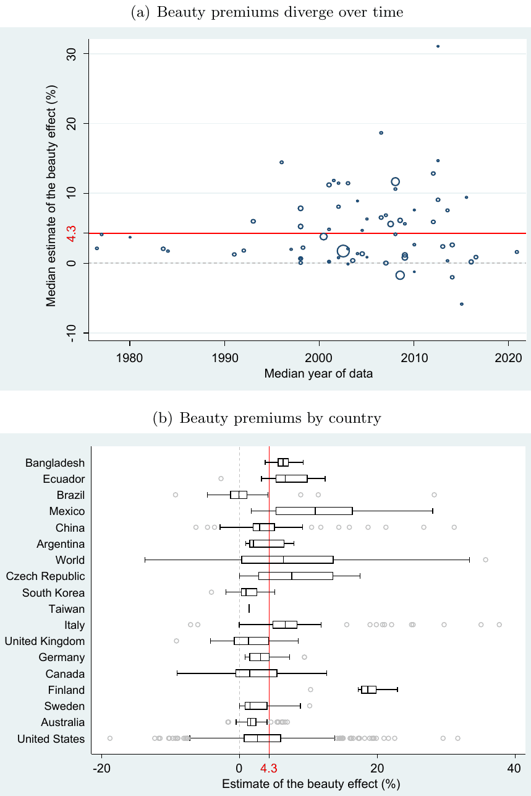
<figcaption><b>Figure 1.</b> Reported beauty premiums across studies and countries</figcaption>
</figure>
<p>Notes: In Panel (a), the horizontal axis shows the median year of data used in each study, and the vertical axis shows the median estimate of the beauty premium reported in that study. All estimates are recalculated to represent the percent increase in earnings or productivity associated with a one-standard-deviation increase in beauty. The mean reported effect, denoted by a solid horizontal line, indicates a 4.3% increase in earnings or productivity associated with an increase in beauty from the 50th to the 84th percentile. The size of each circle reflects the square root of the median number of observations in the corresponding study. In Panel (b), the figure presents a box plot of the estimated beauty premiums for different countries. Countries are ordered from top to bottom by GDP per capita, in ascending order. The length of each box represents the interquartile range (P25–P75), and the dividing line inside the box indicates the median. The whiskers represent the highest and lowest data points within 1.5 times the interquartile range. The mean reported effect is denoted by a solid vertical line. For ease of exposition, extreme outliers are excluded from the figure but included in all statistical tests.</p>
<figure>
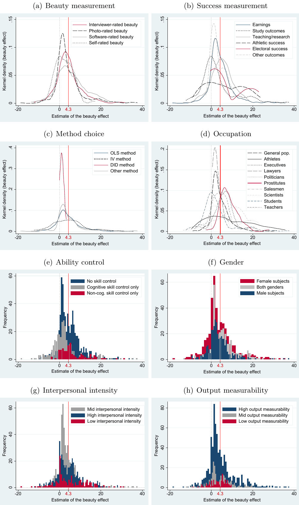
<figcaption><b>Figure 2.</b> Selected patterns in the literature</figcaption>
</figure>
<p>Notes: Estimates of beauty premiums are recomputed to represent the percent increase in earnings or productivity associated with a one-standard-deviation increase in beauty. The mean estimate is denoted by a solid vertical line. Numerical summary statistics are available in Table S2. Notes: In Panel (a), the figure depicts a histogram of the estimated beauty premiums. All estimates are recomputed to represent the percent increase in earnings or productivity associated with a one-standard-deviation increase in beauty. The mean reported effect, denoted by a solid horizontal line, indicates a 4.3% increase in earnings or productivity associated with an increase in beauty from the 50th to the 84th percentile. In Panel (b), the figure shows the corresponding funnel plot. In the absence of publication bias, the most precise estimates should cluster around the mean estimate, denoted by the solid vertical line, while less precise estimates should be symmetrically dispersed around the mean. The figure indicates that small or negative imprecise estimates are less likely to be reported than similarly imprecise but large and positive ones. In Panel (c), the figure displays the histogram of <math class="inl" xmlns="http://www.w3.org/1998/Math/MathML" display="inline"><mrow><mi>z</mi></mrow></math>-statistics for the reported beauty effects. The vertical lines represent the value of 0 (sign change), the critical value of 1.96 (5% significance), and the critical value of 2.58 (1% significance). Bins just below and above these thresholds are highlighted, with the zero threshold being most relevant. The corresponding caliper tests are reported in Table S5. The black line shows the estimated kernel density. In Panel (d), the figure compares the model fit of an unadjusted random-effects meta-analysis model (black) with a publication-bias-adjusted robust Bayesian meta-analysis (RoBMA, blue) using a meta-analytic <math class="inl" xmlns="http://www.w3.org/1998/Math/MathML" display="inline"><mrow><mi>z</mi></mrow></math>-curve plot<sup class="cite"><a href="#ref-64">64</a></sup>. The histogram of observed <math class="inl" xmlns="http://www.w3.org/1998/Math/MathML" display="inline"><mrow><mi>z</mi></mrow></math>-statistics shows two discontinuities: one at <math class="inl" xmlns="http://www.w3.org/1998/Math/MathML" display="inline"><mrow><mi>z</mi><mo>&#x0003D;</mo><mn>0</mn></mrow></math> (reflecting suppression of negative results) and another at <math class="inl" xmlns="http://www.w3.org/1998/Math/MathML" display="inline"><mrow><mi>z</mi><mo>&#x0003D;</mo><mn>1.65</mn></mrow></math> (reflecting suppression of non-significant results, <math class="inl" xmlns="http://www.w3.org/1998/Math/MathML" display="inline"><mrow><mi>&#x003B1;</mi><mo>&#x0003D;</mo><mn>0.10</mn></mrow></math>), highlighted by red dashed lines. The posterior predictive distribution from the conventional random-effects model underestimates significant positive estimates and overestimates non-significant ones, indicating poor fit. In contrast, the robust Bayesian model closely tracks the observed discontinuities, providing a substantially better, though not perfect, description of the data. This visualization is consistent with strong evidence of publication bias and demonstrates the importance of correcting for it. The expected discovery rate (EDR) is estimated at 0.31, 95% CI [0.29, 0.33], compared with the observed discovery rate (ODR) of 0.47, 95% CI [0.44, 0.50], quantifying the degree of publication bias. The estimated number of missing estimates is N<sub>missing</sub> = 1,242, 95% CI [821, 1,751], and the false discovery risk is inflated to 0.12, 95% CI [0.11, 0.13], further underscoring the consequences of publication bias in this literature. Extreme outliers are excluded from the figure for clarity but are included in all statistical tests.</p>
<div class="table-scroll">
<table>
<caption><b>Table 1.</b> Mean beauty premium after correction for publication bias</caption>
<thead><tr><th scope="col"><b>Part 1. Full sample</b></th><th scope="col"></th><th scope="col">RoBMA</th><th scope="col">RoBMA (3lvl)</th><th scope="col">RoBMA (3lvl, database)</th></tr></thead>
<tbody>
<tr><th scope="row">Bias-corrected mean (%)</th><td></td><td class="num">0.21</td><td class="num">3.13</td><td class="num">2.88</td></tr>
<tr><th scope="row">95% interval</th><td></td><td>[0.00, 1.27]</td><td>[2.05, 4.25]</td><td>[1.70, 4.03]</td></tr>
<tr><th scope="row">Clusters</th><td></td><td>–</td><td class="num">67</td><td class="num">63</td></tr>
<tr><th scope="row">Estimates</th><td></td><td class="num">1,159</td><td class="num">1,159</td><td class="num">1,159</td></tr>
<tr><th scope="row"></th><td>Selection model</td><td>PET–PEESE</td><td>MAIVE</td><td>RTMA</td></tr>
<tr><th scope="row">Bias-corrected mean (%)</th><td class="num">0.49</td><td class="num">0.34</td><td class="num">3.05</td><td class="num">2.27</td></tr>
<tr><th scope="row">95% interval</th><td>[-0.31, 1.30]</td><td>[-0.20, 0.89]</td><td>[0.73, 5.00]</td><td>[1.69, 2.99]</td></tr>
<tr><th scope="row">Clusters</th><td class="num">67</td><td class="num">67</td><td class="num">67</td><td>–</td></tr>
<tr><th scope="row">Estimates</th><td class="num">1,159</td><td class="num">1,159</td><td class="num">1,159</td><td class="num">1,159</td></tr>
<tr><th scope="row"><b>Part 2. Robustness</b></th><td>Excluding prostitutes</td><td></td><td>Standardized outcome</td><td></td></tr>
<tr><th scope="row"></th><td>RoBMA</td><td>RoBMA (3lvl)</td><td>RoBMA</td><td>RoBMA (3lvl)</td></tr>
<tr><th scope="row">Bias-corrected mean (% or std.)</th><td class="num">0.06</td><td class="num">2.73</td><td class="num">0.02</td><td class="num">0.05</td></tr>
<tr><th scope="row">95% interval</th><td>[0.00, 0.85]</td><td>[1.69, 3.77]</td><td>[0.00, 0.04]</td><td>[0.03, 0.07]</td></tr>
<tr><th scope="row">Clusters</th><td>–</td><td class="num">63</td><td>–</td><td class="num">62</td></tr>
<tr><th scope="row">Estimates</th><td class="num">1,104</td><td class="num">1,104</td><td class="num">1,000</td><td class="num">1,000</td></tr>
</tbody></table></div>
<p>Notes: Part 1 reports the results of bias-correction estimators applied to the full sample. RoBMA refers to the standard Robust Bayesian Meta-Analysis framework, while RoBMA (3lvl) denotes its three-level extension that explicitly accounts for dependence among multiple estimates reported within the same study or database<sup class="cite"><a href="#ref-16">16</a>&#8211;<a href="#ref-19">19</a></sup>. MAIVE = Meta-Analysis Instrumental Variable Estimator<sup class="cite"><a href="#ref-21">21</a></sup>; RTMA = Right-Truncated Meta-Analysis<sup class="cite"><a href="#ref-22">22</a></sup>; selection model<sup class="cite"><a href="#ref-55">55</a></sup>; and PET–PEESE = Precision-Effect Test and Precision-Effect Estimate with Standard Error<sup class="cite"><a href="#ref-56">56</a></sup>. Note that PET–PEESE and selection-model approaches are included within RoBMA, whereas MAIVE and RTMA are not. Unlike the methods incorporated in RoBMA, MAIVE and RTMA are designed to accommodate various forms of <i>p</i>-hacking in the literature. Our preferred specifications are the three-level RoBMA, which accounts for dependence within databases as a robust weighted average of bias-correction models, and MAIVE together with RTMA, which are intended to address potential <i>p</i>-hacking. Part 2 reports RoBMA and RoBMA (3lvl) results for two robustness checks: one excluding prostitutes and the other using, instead of the percent increase in earnings or productivity associated with a one-standard-deviation increase in beauty, standardized effect sizes (a one-standard-deviation increase in earnings or productivity associated with a one-standard-deviation increase in beauty). The number of clusters denotes the number of studies or databases used when estimating multilevel models. The table reports the posterior model-averaged mean effect size for RoBMA, the mode for RTMA, and the mean for all other estimators. Brackets report 95% credible intervals for Bayesian estimators, 95% Anderson–Rubin confidence intervals for MAIVE, and 95% cluster-robust confidence intervals for all other estimators. RoBMA averages over models with and without a true association. When some probability is assigned to the null, the posterior is pulled toward zero and the 95% credible interval may start or end exactly at zero. This is expected behavior of spike-and-slab model averaging. More details on the RoBMA exercise are available in Table S16. More details on robustness checks (standardized outcome and objectively measured ability) are available in Table S7. More details on other approaches are available in Table S6.</p>
<div class="table-scroll">
<table>
<caption><b>Table 2.</b> Bias-corrected beauty premiums by subgroup</caption>
<thead><tr><th scope="col"></th><th scope="col">Est.</th><th scope="col">Stud.</th><th scope="col">RoBMA Mean</th><th scope="col">RoBMA 95% cred. int.</th><th scope="col"></th><th scope="col">RoBMA 3lvl Mean</th><th scope="col">RoBMA 3lvl 95% cred. int.</th><th scope="col"></th></tr></thead>
<tbody>
<tr><th scope="row"><i>Industry</i></th><td></td><td></td><td></td><td></td><td></td><td></td><td></td><td></td></tr>
<tr><th scope="row">Customer services</th><td class="num">57</td><td class="num">7</td><td class="num">0.38</td><td class="num">-0.59</td><td class="num">1.34</td><td class="num">4.05</td><td class="num">0.00</td><td class="num">6.91</td></tr>
<tr><th scope="row">Financial services</th><td class="num">34</td><td class="num">6</td><td class="num">1.00</td><td class="num">-0.31</td><td class="num">2.32</td><td class="num">4.40</td><td class="num">0.00</td><td class="num">7.08</td></tr>
<tr><th scope="row">Legal services</th><td class="num">31</td><td class="num">1</td><td class="num">1.32</td><td class="num">0.16</td><td class="num">2.48</td><td class="num">4.21</td><td class="num">0.00</td><td class="num">7.28</td></tr>
<tr><th scope="row">Political office</th><td class="num">37</td><td class="num">4</td><td class="num">2.52</td><td class="num">1.47</td><td class="num">3.64</td><td class="num">4.36</td><td class="num">0.00</td><td class="num">7.17</td></tr>
<tr><th scope="row">Professional sports</th><td class="num">56</td><td class="num">5</td><td class="num">1.78</td><td class="num">0.45</td><td class="num">3.19</td><td class="num">4.77</td><td class="num">0.00</td><td class="num">9.89</td></tr>
<tr><th scope="row">Scientific research</th><td class="num">42</td><td class="num">3</td><td class="num">8.12</td><td class="num">6.45</td><td class="num">9.74</td><td class="num">4.15</td><td class="num">0.00</td><td class="num">6.97</td></tr>
<tr><th scope="row">Sex industry</th><td class="num">55</td><td class="num">4</td><td class="num">7.00</td><td class="num">5.90</td><td class="num">8.06</td><td class="num">4.75</td><td class="num">0.00</td><td class="num">9.92</td></tr>
<tr><th scope="row"><i>Occupation</i></th><td></td><td></td><td></td><td></td><td></td><td></td><td></td><td></td></tr>
<tr><th scope="row">General population</th><td class="num">435</td><td class="num">23</td><td class="num">1.54</td><td class="num">0.92</td><td class="num">2.13</td><td class="num">3.64</td><td class="num">2.33</td><td class="num">5.23</td></tr>
<tr><th scope="row">Executives</th><td class="num">56</td><td class="num">10</td><td class="num">3.61</td><td class="num">2.06</td><td class="num">5.14</td><td class="num">3.52</td><td class="num">2.10</td><td class="num">5.32</td></tr>
<tr><th scope="row">Salespeople</th><td class="num">32</td><td class="num">5</td><td class="num">-1.27</td><td class="num">-2.77</td><td class="num">0.26</td><td class="num">3.15</td><td class="num">0.75</td><td class="num">4.72</td></tr>
<tr><th scope="row">Students</th><td class="num">233</td><td class="num">9</td><td class="num">-1.52</td><td class="num">-2.30</td><td class="num">-0.75</td><td class="num">2.32</td><td class="num">-1.60</td><td class="num">4.46</td></tr>
<tr><th scope="row">Teachers</th><td class="num">109</td><td class="num">8</td><td class="num">1.50</td><td class="num">0.54</td><td class="num">2.42</td><td class="num">2.56</td><td class="num">-1.06</td><td class="num">4.46</td></tr>
<tr><th scope="row"><i>Gender</i></th><td></td><td></td><td></td><td></td><td></td><td></td><td></td><td></td></tr>
<tr><th scope="row">Female</th><td class="num">447</td><td class="num">48</td><td class="num">0.79</td><td class="num">0.00</td><td class="num">1.79</td><td class="num">3.33</td><td class="num">2.08</td><td class="num">4.60</td></tr>
<tr><th scope="row">Male</th><td class="num">375</td><td class="num">44</td><td class="num">0.79</td><td class="num">0.00</td><td class="num">1.79</td><td class="num">3.61</td><td class="num">2.35</td><td class="num">4.88</td></tr>
<tr><th scope="row"><i>Degree of customer contact</i></th><td></td><td></td><td></td><td></td><td></td><td></td><td></td><td></td></tr>
<tr><th scope="row">No customer contact</th><td class="num">318</td><td class="num">23</td><td class="num">-1.13</td><td class="num">-1.68</td><td class="num">-0.23</td><td class="num">0.89</td><td class="num">-0.62</td><td class="num">2.70</td></tr>
<tr><th scope="row">Some customer contact</th><td class="num">401</td><td class="num">19</td><td class="num">0.17</td><td class="num">-0.33</td><td class="num">0.86</td><td class="num">3.95</td><td class="num">2.46</td><td class="num">5.51</td></tr>
<tr><th scope="row">Direct customer contact</th><td class="num">440</td><td class="num">32</td><td class="num">1.09</td><td class="num">0.59</td><td class="num">1.76</td><td class="num">4.19</td><td class="num">2.85</td><td class="num">5.49</td></tr>
<tr><th scope="row"><i>Measurability of output</i></th><td></td><td></td><td></td><td></td><td></td><td></td><td></td><td></td></tr>
<tr><th scope="row">Low output measurability</th><td class="num">135</td><td class="num">6</td><td class="num">0.19</td><td class="num">0.00</td><td class="num">1.27</td><td class="num">3.15</td><td class="num">2.06</td><td class="num">4.27</td></tr>
<tr><th scope="row">Mid output measurability</th><td class="num">274</td><td class="num">16</td><td class="num">0.19</td><td class="num">0.00</td><td class="num">1.27</td><td class="num">3.15</td><td class="num">2.07</td><td class="num">4.26</td></tr>
<tr><th scope="row">High output measurability</th><td class="num">750</td><td class="num">51</td><td class="num">0.19</td><td class="num">0.00</td><td class="num">1.27</td><td class="num">3.15</td><td class="num">2.07</td><td class="num">4.25</td></tr>
<tr><th scope="row"><i>Intensity of interpersonal interaction</i></th><td></td><td></td><td></td><td></td><td></td><td></td><td></td><td></td></tr>
<tr><th scope="row">Low interpersonal intensity</th><td class="num">180</td><td class="num">17</td><td class="num">1.59</td><td class="num">0.00</td><td class="num">3.27</td><td class="num">3.14</td><td class="num">2.03</td><td class="num">4.23</td></tr>
<tr><th scope="row">Mid interpersonal intensity</th><td class="num">519</td><td class="num">30</td><td class="num">0.17</td><td class="num">-0.95</td><td class="num">1.07</td><td class="num">3.16</td><td class="num">2.08</td><td class="num">4.24</td></tr>
<tr><th scope="row">High interpersonal intensity</th><td class="num">460</td><td class="num">33</td><td class="num">0.83</td><td class="num">0.00</td><td class="num">1.91</td><td class="num">3.16</td><td class="num">2.08</td><td class="num">4.24</td></tr>
<tr><th scope="row"><i>Cognitive and non-cognitive skill controls</i></th><td></td><td></td><td></td><td></td><td></td><td></td><td></td><td></td></tr>
<tr><th scope="row">No skill control</th><td class="num">617</td><td class="num">48</td><td class="num">1.64</td><td class="num">0.75</td><td class="num">2.45</td><td class="num">3.53</td><td class="num">2.37</td><td class="num">4.67</td></tr>
<tr><th scope="row">Cognitive skill control only</th><td class="num">298</td><td class="num">16</td><td class="num">-1.66</td><td class="num">-2.77</td><td class="num">-0.62</td><td class="num">2.03</td><td class="num">0.42</td><td class="num">3.82</td></tr>
<tr><th scope="row">Non-cognitive skill control only</th><td class="num">97</td><td class="num">10</td><td class="num">3.26</td><td class="num">1.66</td><td class="num">4.74</td><td class="num">4.11</td><td class="num">2.42</td><td class="num">5.87</td></tr>
<tr><th scope="row">Both skill controls</th><td class="num">147</td><td class="num">15</td><td class="num">-0.26</td><td class="num">-1.60</td><td class="num">1.00</td><td class="num">2.03</td><td class="num">0.36</td><td class="num">3.85</td></tr>
<tr><th scope="row"><i>Objectively measured cognitive skill control</i></th><td></td><td></td><td></td><td></td><td></td><td></td><td></td><td></td></tr>
<tr><th scope="row">Objective cognitive skill control only</th><td class="num">256</td><td class="num">12</td><td class="num">-0.05</td><td class="num">-0.78</td><td class="num">1.02</td><td class="num">0.73</td><td class="num">0.00</td><td class="num">2.45</td></tr>
<tr><th scope="row">Objective cog. and non-cog. control</th><td class="num">127</td><td class="num">10</td><td class="num">0.62</td><td class="num">0.00</td><td class="num">2.02</td><td class="num">0.73</td><td class="num">0.00</td><td class="num">2.48</td></tr>
<tr><th scope="row">Objective cog. control or DID</th><td class="num">395</td><td class="num">21</td><td class="num">0.05</td><td class="num">0.00</td><td class="num">0.86</td><td class="num">0.49</td><td class="num">0.00</td><td class="num">2.10</td></tr>
<tr><th scope="row"><i>Output type</i></th><td></td><td></td><td></td><td></td><td></td><td></td><td></td><td></td></tr>
<tr><th scope="row">Earnings</th><td class="num">688</td><td class="num">43</td><td class="num">0.24</td><td class="num">0.00</td><td class="num">1.30</td><td class="num">3.29</td><td class="num">2.11</td><td class="num">4.50</td></tr>
<tr><th scope="row">Productivity</th><td class="num">471</td><td class="num">29</td><td class="num">0.14</td><td class="num">-0.49</td><td class="num">1.24</td><td class="num">2.92</td><td class="num">1.53</td><td class="num">4.14</td></tr>
</tbody></table></div>
<p>Notes: The table reports mean beauty premiums across subgroups after correcting for publication bias. All estimates are recalculated to represent the percent increase in earnings or productivity associated with a one-standard-deviation increase in beauty. Occupations that fully overlap with industries (e.g., all estimates in the subgroup "Legal services" correspond to lawyers) are omitted from the Occupation group. RoBMA denotes the Robust Bayesian Meta-Analysis model (a weighted average of bias-correction approaches), while the specification on the right-hand side applies the three-level RoBMA (RoBMA 3lvl), which explicitly accounts for the dependence among multiple effect-size estimates reported within the same study<sup class="cite"><a href="#ref-16">16</a>&#8211;<a href="#ref-19">19</a></sup>. Each <i>subgroup model</i> uses only estimates for that dimension (e.g., industry-specific effects) and includes dummies for the <i>categories</i>. If RoBMA detects little systematic heterogeneity, category means may look similar. These subgroup means need not average to the overall mean, which is based on all effects, including non-subgrouped estimates. DID = difference-in-differences. <i>Est.</i> indicates the number of estimates included in the analysis, and <i>Stud.</i> denotes the number of studies used in the multilevel specification. <i>Mean</i> reports the posterior model-averaged mean estimate for each subgroup, and the associated 95% credible interval reflects the posterior uncertainty surrounding this estimate. RoBMA averages over models with and without a true association. When some probability is assigned to the null, the posterior is pulled toward zero and the 95% credible interval may start or end exactly at zero. This is expected behavior of spike-and-slab model averaging. Definitions of the subgroups are provided in Table S18. More details on the RoBMA exercise are available in Table S16.</p>
<figure>
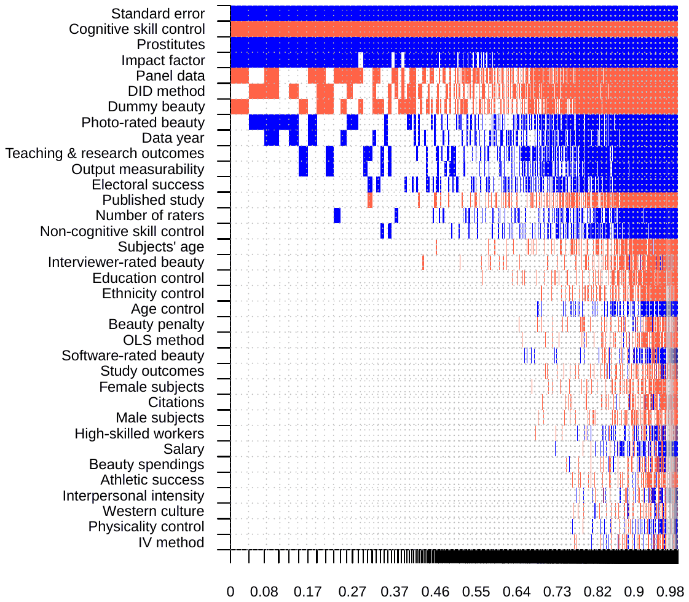
<figcaption><b>Figure 4.</b> Model inclusion across the posterior model space in Bayesian model averaging</figcaption>
</figure>
<p>Notes: On the vertical axis, covariates are ranked by their posterior inclusion probabilities, from the highest at the top to the lowest at the bottom. Variables near the top are therefore most strongly associated with variation in the reported beauty premiums. The horizontal axis shows the cumulative posterior model probability, with models on the left having the highest posterior probability. Blue (darker in grayscale) indicates a positive estimated association for the corresponding covariate; red (lighter in grayscale) indicates a negative association; white indicates that the covariate is not included in the model. Numerical results are reported in Table 3. DID = difference-in-differences. OLS = ordinary least squares. IV = instrumental variables. All variables are described in Table S10. Technical details and diagnostics of the BMA exercise are provided in Table S11 and Figure S3.</p>
<div class="table-scroll">
<table>
<caption><b>Table 3.</b> Contextual characteristics associated with variation in reported beauty premiums</caption>
<thead><tr><th scope="col">Response variable: Beauty premium (%)</th><th scope="col">Bayesian model averaging (baseline model)</th><th scope="col"></th><th scope="col"></th><th scope="col">Stepwise regression (frequentist check)</th><th scope="col"></th><th scope="col"></th></tr></thead>
<tbody>
<tr><th scope="row"></th><td>P. mean</td><td>P. SD</td><td>PIP</td><td>Mean</td><td>SE</td><td>p-value</td></tr>
<tr><th scope="row">Constant</th><td class="num">2.140</td><td>NA</td><td class="num">1.000</td><td class="num">3.582</td><td class="num">0.562</td><td class="num">0.001</td></tr>
<tr><th scope="row">Standard error</th><td class="num">0.430</td><td class="num">0.043</td><td class="num">1.000</td><td class="num">0.426</td><td class="num">0.112</td><td class="num">0.001</td></tr>
<tr><th scope="row"><i>Measurement of beauty</i></th><td></td><td></td><td></td><td></td><td></td><td></td></tr>
<tr><th scope="row">Interviewer-rated beauty</th><td class="num">-0.035</td><td class="num">0.206</td><td class="num">0.037</td><td></td><td></td><td></td></tr>
<tr><th scope="row">Photo-rated beauty</th><td class="num">0.490</td><td class="num">0.714</td><td class="num">0.352</td><td></td><td></td><td></td></tr>
<tr><th scope="row">Software-rated beauty</th><td class="num">0.006</td><td class="num">0.121</td><td class="num">0.011</td><td></td><td></td><td></td></tr>
<tr><th scope="row">Dummy beauty</th><td class="num">-0.569</td><td class="num">0.692</td><td class="num">0.444</td><td></td><td></td><td></td></tr>
<tr><th scope="row">Beauty penalty</th><td class="num">-0.007</td><td class="num">0.091</td><td class="num">0.012</td><td></td><td></td><td></td></tr>
<tr><th scope="row">Number of raters</th><td class="num">0.043</td><td class="num">0.129</td><td class="num">0.114</td><td></td><td></td><td></td></tr>
<tr><th scope="row"><i>Measurement of success</i></th><td></td><td></td><td></td><td></td><td></td><td></td></tr>
<tr><th scope="row">Earnings</th><td class="num">0.003</td><td class="num">0.064</td><td class="num">0.008</td><td></td><td></td><td></td></tr>
<tr><th scope="row">Study outcomes</th><td class="num">-0.006</td><td class="num">0.095</td><td class="num">0.010</td><td></td><td></td><td></td></tr>
<tr><th scope="row">Teaching &amp; research outcomes</th><td class="num">0.564</td><td class="num">1.007</td><td class="num">0.269</td><td></td><td></td><td></td></tr>
<tr><th scope="row">Athletic success</th><td class="num">-0.004</td><td class="num">0.105</td><td class="num">0.006</td><td></td><td></td><td></td></tr>
<tr><th scope="row">Electoral success</th><td class="num">0.584</td><td class="num">1.272</td><td class="num">0.201</td><td></td><td></td><td></td></tr>
<tr><th scope="row"><i>Data characteristics</i></th><td></td><td></td><td></td><td></td><td></td><td></td></tr>
<tr><th scope="row">Male subjects</th><td class="num">-0.004</td><td class="num">0.058</td><td class="num">0.009</td><td></td><td></td><td></td></tr>
<tr><th scope="row">Female subjects</th><td class="num">-0.005</td><td class="num">0.062</td><td class="num">0.010</td><td></td><td></td><td></td></tr>
<tr><th scope="row">Subjects' age</th><td class="num">-0.048</td><td class="num">0.262</td><td class="num">0.042</td><td></td><td></td><td></td></tr>
<tr><th scope="row">High-skilled workers</th><td class="num">-0.001</td><td class="num">0.077</td><td class="num">0.009</td><td></td><td></td><td></td></tr>
<tr><th scope="row">Prostitutes</th><td class="num">4.918</td><td class="num">1.071</td><td class="num">0.999</td><td class="num">4.386</td><td class="num">1.199</td><td class="num">0.001</td></tr>
<tr><th scope="row">Interpersonal intensity</th><td class="num">0.000</td><td class="num">0.070</td><td class="num">0.006</td><td></td><td></td><td></td></tr>
<tr><th scope="row">Output measurability</th><td class="num">0.880</td><td class="num">1.876</td><td class="num">0.204</td><td></td><td></td><td></td></tr>
<tr><th scope="row">Beauty spending</th><td class="num">0.000</td><td class="num">0.010</td><td class="num">0.007</td><td></td><td></td><td></td></tr>
<tr><th scope="row">Western culture</th><td class="num">0.000</td><td class="num">0.036</td><td class="num">0.005</td><td></td><td></td><td></td></tr>
<tr><th scope="row">Panel data</th><td class="num">-0.938</td><td class="num">1.014</td><td class="num">0.507</td><td></td><td></td><td></td></tr>
<tr><th scope="row">Data year</th><td class="num">0.262</td><td class="num">0.461</td><td class="num">0.274</td><td></td><td></td><td></td></tr>
<tr><th scope="row"><i>Estimation technique</i></th><td></td><td></td><td></td><td></td><td></td><td></td></tr>
<tr><th scope="row">OLS method</th><td class="num">-0.006</td><td class="num">0.082</td><td class="num">0.011</td><td></td><td></td><td></td></tr>
<tr><th scope="row">IV method</th><td class="num">-0.001</td><td class="num">0.056</td><td class="num">0.005</td><td></td><td></td><td></td></tr>
<tr><th scope="row">DID method</th><td class="num">-2.406</td><td class="num">2.875</td><td class="num">0.456</td><td class="num">-5.078</td><td class="num">2.061</td><td class="num">0.016</td></tr>
<tr><th scope="row">Age control</th><td class="num">0.011</td><td class="num">0.119</td><td class="num">0.014</td><td></td><td></td><td></td></tr>
<tr><th scope="row">Education control</th><td class="num">-0.017</td><td class="num">0.123</td><td class="num">0.025</td><td></td><td></td><td></td></tr>
<tr><th scope="row">Ethnicity control</th><td class="num">-0.010</td><td class="num">0.092</td><td class="num">0.016</td><td></td><td></td><td></td></tr>
<tr><th scope="row">Cognitive skill control</th><td class="num">-2.265</td><td class="num">0.444</td><td class="num">1.000</td><td class="num">-2.750</td><td class="num">0.691</td><td class="num">0.001</td></tr>
<tr><th scope="row">Non-cognitive skill control</th><td class="num">0.116</td><td class="num">0.378</td><td class="num">0.103</td><td></td><td></td><td></td></tr>
<tr><th scope="row">Physicality control</th><td class="num">0.000</td><td class="num">0.032</td><td class="num">0.005</td><td></td><td></td><td></td></tr>
<tr><th scope="row"><i>Publication characteristics</i></th><td></td><td></td><td></td><td></td><td></td><td></td></tr>
<tr><th scope="row">Published study</th><td class="num">-0.234</td><td class="num">0.653</td><td class="num">0.133</td><td></td><td></td><td></td></tr>
<tr><th scope="row">Impact factor</th><td class="num">0.262</td><td class="num">0.116</td><td class="num">0.914</td><td></td><td></td><td></td></tr>
<tr><th scope="row">Citations</th><td class="num">-0.002</td><td class="num">0.031</td><td class="num">0.009</td><td></td><td></td><td></td></tr>
<tr><th scope="row">Studies</th><td class="num">67</td><td></td><td></td><td class="num">67</td><td></td><td></td></tr>
<tr><th scope="row">Estimates</th><td class="num">1,159</td><td></td><td></td><td class="num">1,159</td><td></td><td></td></tr>
</tbody></table></div>
<p>Notes: The posterior mean in BMA represents the partial derivative of the reported beauty premium with respect to the corresponding study characteristic. P. mean = posterior mean, P. SD = posterior standard deviation, PIP = posterior inclusion probability, SE = standard error. BMA employs the unit-information prior recommended by Eicher et al.<sup class="cite"><a href="#ref-27">27</a></sup> and the dilution prior proposed by George<sup class="cite"><a href="#ref-29">29</a></sup>, which reduces the influence of collinearity among covariates. The frequentist check uses a 5% significance threshold and standard errors clustered at the study level. Covariate definitions are provided in Table S10. Technical details and diagnostics of the BMA exercise are reported in Table S11 and Figure S3.</p>
<div class="table-scroll">
<table>
<caption><b>Table 4.</b> Implied beauty premiums after bias correction and full adjustment</caption>
<thead><tr><th scope="col"><b>Part 1. Bayesian model averaging, overall</b></th><th scope="col">Mean (%)</th><th scope="col">95% cred. int.</th><th scope="col"></th></tr></thead>
<tbody>
<tr><th scope="row">Full sample</th><td class="num">0.56</td><td class="num">-1.48</td><td class="num">2.60</td></tr>
<tr><th scope="row">Full sample (stepwise)</th><td class="num">-0.33</td><td class="num">-2.37</td><td class="num">1.71</td></tr>
<tr><th scope="row"><b>Part 2. Bayesian model averaging, subgroups</b></th><td>Mean (%)</td><td>95% cred. int.</td><td></td></tr>
<tr><th scope="row">Athletes</th><td class="num">0.47</td><td class="num">-3.23</td><td class="num">4.17</td></tr>
<tr><th scope="row">Politicians</th><td class="num">1.06</td><td class="num">-8.41</td><td class="num">10.52</td></tr>
<tr><th scope="row">Prostitutes</th><td class="num">5.39</td><td class="num">2.28</td><td class="num">8.50</td></tr>
<tr><th scope="row">Students</th><td class="num">0.47</td><td class="num">-1.78</td><td class="num">2.71</td></tr>
<tr><th scope="row">Teachers &amp; Scientists</th><td class="num">1.03</td><td class="num">-2.13</td><td class="num">4.20</td></tr>
<tr><th scope="row">Male subjects</th><td class="num">0.56</td><td class="num">-1.58</td><td class="num">2.69</td></tr>
<tr><th scope="row">Female subjects</th><td class="num">0.56</td><td class="num">-1.80</td><td class="num">2.91</td></tr>
<tr><th scope="row">Earnings</th><td class="num">0.47</td><td class="num">-1.67</td><td class="num">2.62</td></tr>
<tr><th scope="row">Low interpersonal intensity</th><td class="num">0.56</td><td class="num">-2.67</td><td class="num">3.78</td></tr>
<tr><th scope="row">Mid interpersonal intensity</th><td class="num">0.56</td><td class="num">-1.77</td><td class="num">2.89</td></tr>
<tr><th scope="row">High interpersonal intensity</th><td class="num">0.56</td><td class="num">-1.57</td><td class="num">2.68</td></tr>
<tr><th scope="row">Low output measurability</th><td class="num">0.00</td><td class="num">-2.52</td><td class="num">2.53</td></tr>
<tr><th scope="row">Mid output measurability</th><td class="num">0.20</td><td class="num">-1.85</td><td class="num">2.26</td></tr>
<tr><th scope="row">High output measurability</th><td class="num">0.37</td><td class="num">-1.67</td><td class="num">2.40</td></tr>
<tr><th scope="row"><b>Part 3. Robust Bayesian meta-analysis, overall</b></th><td>Mean</td><td>95% cred. int.</td><td></td></tr>
<tr><th scope="row">Full sample (% units)</th><td class="num">-0.19</td><td class="num">-1.28</td><td class="num">0.00</td></tr>
<tr><th scope="row">Full sample (3lvl, % units)</th><td class="num">0.39</td><td class="num">0.00</td><td class="num">2.16</td></tr>
<tr><th scope="row">Full sample (3lvl, database, % units)</th><td class="num">0.01</td><td class="num">0.00</td><td class="num">0.02</td></tr>
<tr><th scope="row">Excluding prostitutes (% units)</th><td class="num">-0.17</td><td class="num">-1.26</td><td class="num">0.00</td></tr>
<tr><th scope="row">Excluding prostitutes (3lvl, % units)</th><td class="num">0.44</td><td class="num">0.00</td><td class="num">2.33</td></tr>
<tr><th scope="row">Standardized effect (SD units)</th><td class="num">0.00</td><td class="num">-0.01</td><td class="num">0.00</td></tr>
<tr><th scope="row">Standardized effect (3lvl, SD units)</th><td class="num">0.02</td><td class="num">0.00</td><td class="num">0.05</td></tr>
<tr><th scope="row"><b>Part 4. Robust Bayesian meta-analysis (3lvl), subgroups</b></th><td>Mean (%)</td><td>95% cred. int.</td><td></td></tr>
<tr><th scope="row">Athletes</th><td class="num">1.53</td><td class="num">0.00</td><td class="num">5.80</td></tr>
<tr><th scope="row">Executives</th><td class="num">1.29</td><td class="num">0.00</td><td class="num">3.77</td></tr>
<tr><th scope="row">Lawyers</th><td class="num">0.73</td><td class="num">-4.86</td><td class="num">3.47</td></tr>
<tr><th scope="row">Politicians</th><td class="num">1.30</td><td class="num">0.00</td><td class="num">4.75</td></tr>
<tr><th scope="row">Salespeople</th><td class="num">0.97</td><td class="num">-0.62</td><td class="num">2.83</td></tr>
<tr><th scope="row">Scientists</th><td class="num">1.58</td><td class="num">-0.35</td><td class="num">7.29</td></tr>
<tr><th scope="row">Prostitutes</th><td class="num">1.42</td><td class="num">-4.05</td><td class="num">10.20</td></tr>
<tr><th scope="row">Students</th><td class="num">0.81</td><td class="num">-1.05</td><td class="num">2.69</td></tr>
<tr><th scope="row">Teachers</th><td class="num">0.58</td><td class="num">-2.78</td><td class="num">2.69</td></tr>
<tr><th scope="row">Male subjects</th><td class="num">1.58</td><td class="num">0.00</td><td class="num">3.36</td></tr>
<tr><th scope="row">Female subjects</th><td class="num">1.25</td><td class="num">-0.44</td><td class="num">2.98</td></tr>
<tr><th scope="row">Earnings</th><td class="num">0.43</td><td class="num">0.00</td><td class="num">2.19</td></tr>
<tr><th scope="row">Low interpersonal intensity</th><td class="num">0.31</td><td class="num">0.00</td><td class="num">2.10</td></tr>
<tr><th scope="row">Mid interpersonal intensity</th><td class="num">0.32</td><td class="num">0.00</td><td class="num">2.11</td></tr>
<tr><th scope="row">High interpersonal intensity</th><td class="num">0.33</td><td class="num">0.00</td><td class="num">2.12</td></tr>
<tr><th scope="row">Low output measurability</th><td class="num">0.53</td><td class="num">0.00</td><td class="num">2.28</td></tr>
<tr><th scope="row">Mid output measurability</th><td class="num">0.53</td><td class="num">0.00</td><td class="num">2.29</td></tr>
<tr><th scope="row">High output measurability</th><td class="num">0.53</td><td class="num">0.00</td><td class="num">2.28</td></tr>
<tr><th scope="row">Occupation-weighted estimate</th><td class="num">1.11</td><td class="num">-0.75</td><td class="num">3.00</td></tr>
</tbody></table></div>
<p>Notes: The table reports implied beauty premiums for the full sample and key subgroups, conditional on three main adjustments: (i) correction for publication bias, (ii) inclusion of cognitive-ability controls or use of difference-in-differences estimation, and (iii) exclusion of occupations involving sex work. The last adjustment is not applied to the prostitutes subgroup. In addition, implied beauty premiums based on Bayesian model averaging (BMA; Parts 1-2) are calculated as fitted values in which beauty is either software-rated or assessed by the maximum number of raters. Other study characteristics (output measurability, data year, journal impact factor, and number of citations) are set to their maximum observed values in the sample to represent a relevant and recent research context. Due to collinearity issues, not all subgroups can be included in BMA. Results in Parts 3-4 are fitted values from Robust Bayesian meta-analysis (RoBMA). Further details on RoBMA specifications are provided in Table S3. RoBMA (3lvl) accounts for within-study dependence, and RoBMA (3lvl, database) additionally accounts for within-database dependence. The overall RoBMA estimate is based on all reported beauty premiums, including those not tied to any specific occupation. In contrast, the subgroup RoBMA models use only the subset of estimates that identify particular occupations. Because many studies report general (non-occupation-specific) effects, the subgroup analyses rely on different data and models, so their results do not average to the overall mean. The occupation-weighted estimate combines RoBMA-based subgroup results using employment shares from the U.S. Bureau of Labor Statistics' May 2023 Occupational Employment and Wage Statistics, approximating a representative beauty premium for the U.S. labor market. The BMA intervals are approximated using uncertainty estimated in the frequentist model to allow for study-level clustering; three-level RoBMA accounts for within-study correlation automatically. RoBMA averages over models with and without a true association. When some probability is assigned to the null, the posterior is pulled toward zero and the 95% credible interval may start or end exactly at zero. This is expected behavior of spike-and-slab model averaging. Definitions of subgroups are available in Table S18.</p>
<h2 id="sec-references">REFERENCES</h2>
<p class="ref-note">Some entries below were printed without a link. Where a Crossref record matches one and no other record plausibly could, its DOI is shown; ambiguous references are left as they were printed.</p>
<ol class="references">
<li id="ref-1">Hamermesh, D. S. <i>Beauty Pays: Why Attractive People Are More Successful</i> (Princeton University Press, 2011).</li>
<li id="ref-2">Nault, K. A., Pitesa, M. &amp; Thau, S. The Attractiveness Advantage At Work: A Cross-Disciplinary Integrative Review. <i>Academy of Management Annals</i> <b>14</b>, 1103–1139 (2020). <a class="ref-doi" href="https://doi.org/10.5465/annals.2018.0134">10.5465/annals.2018.0134</a></li>
<li id="ref-3">Stinebrickner, R., Stinebrickner, T. &amp; Sullivan, P. Beauty, Job Tasks, and Wages: A New Conclusion about Employer Taste-Based Discrimination. <i>The Review of Economics and Statistics</i> <b>101</b>, 602–615 (2019). <a class="ref-doi" href="https://doi.org/10.1162/rest_a_00792">10.1162/rest_a_00792</a></li>
<li id="ref-4">Ioannidis, J. P., Stanley, T. D. &amp; Doucouliagos, H. The Power of Bias in Economics Research. <i>Economic Journal</i> <b>127</b>, F236–F265 (2017). <a class="ref-doi" href="https://doi.org/10.1111/ecoj.12461">10.1111/ecoj.12461</a></li>
<li id="ref-5">Bartos, F. <i>et al.</i> Footprint of publication selection bias on meta-analyses in medicine, environmental sciences, psychology, and economics. <i>Research Synthesis Methods</i> <b>15</b>, 500–511 (2024).</li>
<li id="ref-6">Blanco-Perez, C. &amp; Brodeur, A. Publication Bias and Editorial Statement on Negative Findings. <i>Economic Journal</i> <b>130</b>, 1226–1247 (2020). <a class="ref-doi" href="https://doi.org/10.1093/ej/ueaa011">10.1093/ej/ueaa011</a></li>
<li id="ref-7">Brown, A. L., Imai, T., Vieider, F. &amp; Camerer, C. Meta-Analysis of Empirical Estimates of Loss-Aversion. <i>Journal of Economic Literature</i> <b>62</b>, 485–516 (2024). <a class="ref-doi" href="https://doi.org/10.1257/jel.20221698">10.1257/jel.20221698</a></li>
<li id="ref-8">Card, D., Kluve, J. &amp; Weber, A. What Works? A Meta Analysis of Recent Active Labor Market Program Evaluations. <i>Journal of the European Economic Association</i> <b>16</b>, 894–931 (2018). <a class="ref-doi" href="https://doi.org/10.1093/jeea/jvx028">10.1093/jeea/jvx028</a></li>
<li id="ref-9">DellaVigna, S. &amp; Linos, E. RCTs to Scale: Comprehensive Evidence From Two Nudge Units. <i>Econometrica</i> <b>90</b>, 81–116 (2022). <a class="ref-doi" href="https://doi.org/10.3982/ecta18709">10.3982/ecta18709</a></li>
<li id="ref-10">Elliott, G., Kudrin, N. &amp; Wuthrich, K. Detecting p-hacking. <i>Econometrica</i> <b>90</b>, 887–906 (2022). <a class="ref-doi" href="https://doi.org/10.3982/ecta18583">10.3982/ecta18583</a></li>
<li id="ref-11">Imai, T., Rutter, T. A. &amp; Camerer, C. F. Meta-Analysis of Present-Bias Estimation Using Convex Time Budgets. <i>Economic Journal</i> <b>131</b>, 1788–1814 (2021). <a class="ref-doi" href="https://doi.org/10.1093/ej/ueaa115">10.1093/ej/ueaa115</a></li>
<li id="ref-12">Neisser, C. The Elasticity of Taxable Income: A Meta-Regression Analysis. <i>Economic Journal</i> <b>131</b>, 3365–3391 (2021). <a class="ref-doi" href="https://doi.org/10.1093/ej/ueab038">10.1093/ej/ueab038</a></li>
<li id="ref-13">Stanley, T. D., Doucouliagos, H., Ioannidis, J. P. A. &amp; Carter, E. C. Detecting publication selection bias through excess statistical significance. <i>Research Synthesis Methods</i> <b>12</b>, 776–795 (2021). <a class="ref-doi" href="https://doi.org/10.1002/jrsm.1512">10.1002/jrsm.1512</a></li>
<li id="ref-14">Vivalt, E. Specification Searching and Significance Inflation Across Time, Methods and Disciplines. <i>Oxford Bulletin of Economics and Statistics</i> <b>81</b>, 797–816 (2019). <a class="ref-doi" href="https://doi.org/10.1111/obes.12289">10.1111/obes.12289</a></li>
<li id="ref-15">Xue, X., Reed, W. R. &amp; Menclova, A. Social capital and health: a meta-analysis. <i>Journal of Health Economics</i> <b>72</b>, 102317 (2020). <a class="ref-doi" href="https://doi.org/10.1016/j.jhealeco.2020.102317">10.1016/j.jhealeco.2020.102317</a></li>
<li id="ref-16">Maier, M., Bartos, F. &amp; Wagenmakers, E.-J. Robust Bayesian meta-analysis: Addressing publication bias with model-averaging. <i>Psychological Methods</i> <b>28</b>, 107–122 (2023). <a class="ref-doi" href="https://doi.org/10.1037/met0000405">10.1037/met0000405</a></li>
<li id="ref-17">Bartos, F., Maier, M., Wagenmakers, E.-J., Doucouliagos, H. &amp; Stanley, T. D. Robust Bayesian meta-analysis: Model-averaging across complementary publication bias adjustment methods. <i>Research Synthesis Methods</i> <b>14</b>, 99–116 (2023). <a class="ref-doi" href="https://doi.org/10.1002/jrsm.1594">10.1002/jrsm.1594</a></li>
<li id="ref-18">Bartos, F., Maier, M., Stanley, T. D. &amp; Wagenmakers, E.-J. Robust Bayesian meta-regression: Model-averaged moderation analysis in the presence of publication bias. <i>Psychological Methods</i> <b>forthcoming</b> (2025).</li>
<li id="ref-19">Bartos, F., Maier, M. &amp; Wagenmakers, E.-J. Robust Bayesian multilevel meta-analysis: Adjusting for publication bias in the presence of dependent effect sizes. Preprint, PsyArXiv, PsyArXiv.org (2025).</li>
<li id="ref-20">Keane, M. &amp; Neal, T. Instrument strength in IV estimation and inference: A guide to theory and practice. <i>Journal of Econometrics</i> <b>235</b>, 1625–1653 (2023). <a class="ref-doi" href="https://doi.org/10.1016/j.jeconom.2022.12.009">10.1016/j.jeconom.2022.12.009</a></li>
<li id="ref-21">Irsova, Z., Bom, P. R. D., Havranek, T. &amp; Rachinger, H. Spurious Precision in Meta-Analysis of Observational Research. <i>Nature Communications</i> <b>16</b>, 8454 (2025).</li>
<li id="ref-22">Mathur, M. B. P-hacking in meta-analyses: A formalization and new meta-analytic methods. <i>Research Synthesis Methods</i> <b>15</b>, 483–499 (2024). <a class="ref-doi" href="https://doi.org/10.1002/jrsm.1701">10.1002/jrsm.1701</a></li>
<li id="ref-23">Hamermesh, D. &amp; Abrevaya, J. Beauty is the promise of happiness? <i>European Economic Review</i> <b>64</b>, 351–368 (2013). <a class="ref-doi" href="https://doi.org/10.1016/j.euroecorev.2013.09.005">10.1016/j.euroecorev.2013.09.005</a></li>
<li id="ref-24">Mehic, A. Student beauty and grades under in-person and remote teaching. <i>Economics Letters</i> <b>219</b>, 110782 (2022). <a class="ref-doi" href="https://doi.org/10.1016/j.econlet.2022.110782">10.1016/j.econlet.2022.110782</a></li>
<li id="ref-25">Fernandez, C., Ley, E. &amp; Steel, M. F. J. Benchmark priors for Bayesian Model Averaging. <i>Journal of Econometrics</i> <b>100</b>, 381–427 (2001). <a class="ref-doi" href="https://doi.org/10.1016/s0304-4076(00)00076-2">10.1016/s0304-4076(00)00076-2</a></li>
<li id="ref-26">Ley, E. &amp; Steel, M. F. On the Effect of Prior Assumptions in Bayesian Model Averaging with Applications to Growth Regression. <i>Journal of Applied Econometrics</i> <b>24</b>, 651–674 (2009). <a class="ref-doi" href="https://doi.org/10.1002/jae.1057">10.1002/jae.1057</a></li>
<li id="ref-27">Eicher, T. S., Papageorgiou, C. &amp; Raftery, A. E. Default priors and predictive performance in Bayesian model averaging, with application to growth determinants. <i>Journal of Applied Econometrics</i> <b>26</b>, 30–55 (2011). <a class="ref-doi" href="https://doi.org/10.1002/jae.1112">10.1002/jae.1112</a></li>
<li id="ref-28">Steel, M. F. J. Model Averaging and its Use in Economics. <i>Journal of Economic Literature</i> <b>58</b>, 644–719 (2020). <a class="ref-doi" href="https://doi.org/10.1257/jel.20191385">10.1257/jel.20191385</a></li>
<li id="ref-29">George, E. I. Dilution priors: Compensating for model space redundancy. In <i>IMS Collections Borrowing Strength: Theory Powering Applications – A Festschrift for Lawrence D. Brown</i>, vol. 6, 158–165 (Institute of Mathematical Statistics, 2010). <a class="ref-doi" href="https://doi.org/10.1214/10-imscoll611">10.1214/10-imscoll611</a></li>
<li id="ref-30">Harper, B. Beauty, Stature and the Labour Market: A British Cohort Study. <i>Oxford Bulletin of Economics and Statistics</i> <b>62</b>, 771–800 (2000). <a class="ref-doi" href="https://doi.org/10.1111/1468-0084.0620s1771">10.1111/1468-0084.0620s1771</a></li>
<li id="ref-31">Scholz, J. K. &amp; Sicinski, K. Facial Attractiveness and Lifetime Earnings: Evidence from a Cohort Study. <i>The Review of Economics and Statistics</i> <b>97</b>, 14–28 (2015). <a class="ref-doi" href="https://doi.org/10.1162/rest_a_00435">10.1162/rest_a_00435</a></li>
<li id="ref-32">Hamermesh, D., Gordon, R. &amp; Crosnoe, R. O Youth and Beauty: Children's Looks and Children's Cognitive Development. <i>Journal of Economic Behavior &amp; Organization</i> <b>212</b>, 275–289 (2023). <a class="ref-doi" href="https://doi.org/10.1016/j.jebo.2023.05.011">10.1016/j.jebo.2023.05.011</a></li>
<li id="ref-33">Gu, T. &amp; Ji, Y. Beauty premium in China's labor market: Is discrimination the main reason? <i>China Economic Review</i> <b>57</b>, 101335 (2019).</li>
<li id="ref-34">Hamermesh, D. S. &amp; Biddle, J. E. Beauty and the Labor Market. <i>American Economic Review</i> <b>84</b>, 1174–1194 (1994).</li>
<li id="ref-35">Mobius, M. M. &amp; Rosenblat, T. S. Why Beauty Matters. <i>American Economic Review</i> <b>96</b>, 222–235 (2006). <a class="ref-doi" href="https://doi.org/10.1257/000282806776157515">10.1257/000282806776157515</a></li>
<li id="ref-36">Thorndike, E. L. A constant error in psychological ratings. <i>Journal of Applied Psychology</i> <b>4</b>, 25–29 (1920). <a class="ref-doi" href="https://doi.org/10.1037/h0071663">10.1037/h0071663</a></li>
<li id="ref-37">Eagly, A. H., Ashmore, R. D., Makhijani, M. G. &amp; Longo, L. C. What is beautiful is good, but. . . : A meta-analytic review of research on the physical attractiveness stereotype. <i>Psychological Bulletin</i> <b>110</b>, 109–128 (1991). <a class="ref-doi" href="https://doi.org/10.1037/0033-2909.110.1.109">10.1037/0033-2909.110.1.109</a></li>
<li id="ref-38">Langlois, J. H. <i>et al.</i> Maxims or myths of beauty? A meta-analytic and theoretical review. <i>Psychological Bulletin</i> <b>126</b>, 390–423 (2000). <a class="ref-doi" href="https://doi.org/10.1037/0033-2909.126.3.390">10.1037/0033-2909.126.3.390</a></li>
<li id="ref-39">Zebrowitz, L. A. <i>Reading Faces: Window to the Soul?</i> (Westview Press, Boulder, CO, 1997).</li>
<li id="ref-40">Zebrowitz, L. A., Hall, J. A., Murphy, N. A. &amp; Rhodes, G. Looking smart and looking good: Facial cues to intelligence and their origins. <i>Personality and Social Psychology Bulletin</i> <b>28</b>, 238–249 (2002). <a class="ref-doi" href="https://doi.org/10.1177/0146167202282009">10.1177/0146167202282009</a></li>
<li id="ref-41">Bourdieu, P. The forms of capital. In Richardson, J. G. (ed.) <i>Handbook of Theory and Research for the Sociology of Education</i>, 241–258 (Greenwood, New York, 1986).</li>
<li id="ref-42">Hakim, C. Erotic capital. <i>European Sociological Review</i> <b>26</b>, 499–518 (2010). <a class="ref-doi" href="https://doi.org/10.1093/esr/jcq014">10.1093/esr/jcq014</a></li>
<li id="ref-43">Hakim, C. Beauty, intelligence and height: the black holes of sociology. <i>Sociologica</i> <b>7</b>, 1–40 (2013).</li>
<li id="ref-44">Buss, D. M. Sex differences in human mate preferences: Evolutionary hypotheses tested in 37 cultures. <i>Behavioral and Brain Sciences</i> <b>12</b>, 1–14 (1989). <a class="ref-doi" href="https://doi.org/10.1017/s0140525x00023992">10.1017/s0140525x00023992</a></li>
<li id="ref-45">Kanazawa, S. &amp; Kovar, J. L. Why beautiful people are more intelligent. <i>Intelligence</i> <b>32</b>, 227–243 (2004). <a class="ref-doi" href="https://doi.org/10.1016/j.intell.2004.03.003">10.1016/j.intell.2004.03.003</a></li>
<li id="ref-46">Kanazawa, S. Intelligence and physical attractiveness. <i>Intelligence</i> <b>39</b>, 7–14 (2011). <a class="ref-doi" href="https://doi.org/10.1016/j.intell.2010.11.003">10.1016/j.intell.2010.11.003</a></li>
<li id="ref-47">Mathews, C. A. &amp; Reus, V. I. Assortative mating in the affective disorders: A systematic review and meta-analysis. <i>Comprehensive Psychiatry</i> <b>42</b>, 257–262 (2001). <a class="ref-doi" href="https://doi.org/10.1053/comp.2001.24575">10.1053/comp.2001.24575</a></li>
<li id="ref-48">Plomin, R. &amp; von Stumm, S. The new genetics of intelligence. <i>Nature Reviews Genetics</i> <b>19</b>, 148–159 (2018). <a class="ref-doi" href="https://doi.org/10.1038/nrg.2017.104">10.1038/nrg.2017.104</a></li>
<li id="ref-49">Mitchem, D. G. <i>et al.</i> No relationship between intelligence and facial attractiveness in a large, genetically informative sample. <i>Evolution and Human Behavior</i> <b>36</b>, 240–247 (2015). <a class="ref-doi" href="https://doi.org/10.1016/j.evolhumbehav.2014.11.009">10.1016/j.evolhumbehav.2014.11.009</a></li>
<li id="ref-50">Deryugina, T. &amp; Shurchkov, O. Does Beauty Matter In Undergraduate Education? <i>Economic Inquiry</i> <b>53</b>, 940–961 (2015). <a class="ref-doi" href="https://doi.org/10.1111/ecin.12152">10.1111/ecin.12152</a></li>
<li id="ref-51">Romi, T. Beauty effect on economy: A truth hidden in our subconscious. SSRN Working Paper 5032346 (2024).</li>
<li id="ref-52">Brodeur, A., Carrell, S., Figlio, D. &amp; Lusher, L. Unpacking p-hacking and publication bias. <i>American Economic Review</i> <b>113</b>, 2974–3002 (2023). <a class="ref-doi" href="https://doi.org/10.1257/aer.20210795">10.1257/aer.20210795</a></li>
<li id="ref-53">Duval, S. &amp; Tweedie, R. Trim and fill: A simple funnel-plot–based method of testing and adjusting for publication bias in meta-analysis. <i>Biometrics</i> <b>56</b>, 455–463 (2000). <a class="ref-doi" href="https://doi.org/10.1111/j.0006-341x.2000.00455.x">10.1111/j.0006-341x.2000.00455.x</a></li>
<li id="ref-54">Stanley, T. &amp; Doucouliagos, H. Picture This: A Simple Graph That Reveals Much Ado About Research. <i>Journal of Economic Surveys</i> <b>24</b>, 170–191 (2010). <a class="ref-doi" href="https://doi.org/10.1111/j.1467-6419.2009.00593.x">10.1111/j.1467-6419.2009.00593.x</a></li>
<li id="ref-55">Andrews, I. &amp; Kasy, M. Identification of and correction for publication bias. <i>American Economic Review</i> <b>109</b>, 2766–2794 (2019). <a class="ref-doi" href="https://doi.org/10.1257/aer.20180310">10.1257/aer.20180310</a></li>
<li id="ref-56">Stanley, T. D. &amp; Doucouliagos, H. Meta-regression approximations to reduce publication selection bias. <i>Research Synthesis Methods</i> <b>5</b>, 60–78 (2014). <a class="ref-doi" href="https://doi.org/10.1002/jrsm.1095">10.1002/jrsm.1095</a></li>
<li id="ref-57">Havranek, T., Irsova, Z., Laslopova, L. &amp; Zeynalova, O. Publication and Attenuation Biases in Measuring Skill Substitution. <i>The Review of Economics and Statistics</i> <b>106</b>, 1187–1200 (2024). <a class="ref-doi" href="https://doi.org/10.1162/rest_a_01227">10.1162/rest_a_01227</a> <a class="on-site" href="/skill/paper/">Full text on this site</a></li>
<li id="ref-58">Mulder, J. &amp; van Aert, R. C. M. Bayes factor hypothesis testing in meta-analyses: Practical advantages and methodological considerations (2025). Research Synthesis Methods, forthcoming. <a class="ref-doi" href="https://doi.org/10.31234/osf.io/6c3kj_v2">10.31234/osf.io/6c3kj_v2</a></li>
<li id="ref-59">Card, D. &amp; Krueger, A. B. Time-series minimum-wage studies: A meta-analysis. <i>American Economic Review</i> <b>85</b>, 238–243 (1995).</li>
<li id="ref-60">Egger, M., Smith, G. D., Schneider, M. &amp; Minder, C. Bias in meta-analysis detected by a simple, graphical test. <i>BMJ</i> <b>315</b>, 629–634 (1997). <a class="ref-doi" href="https://doi.org/10.1136/bmj.315.7109.629">10.1136/bmj.315.7109.629</a></li>
<li id="ref-61">Stanley, T. D. Meta-Regression Methods for Detecting and Estimating Empirical Effects in the Presence of Publication Selection. <i>Oxford Bulletin of Economics and Statistics</i> <b>70</b>, 103–127 (2008). <a class="ref-doi" href="https://doi.org/10.1111/j.1468-0084.2007.00487.x">10.1111/j.1468-0084.2007.00487.x</a></li>
<li id="ref-62">Andrews, I., Stock, J. H. &amp; Sun, L. Weak Instruments in Instrumental Variables Regression: Theory and Practice. <i>Annual Review of Economics</i> <b>11</b>, 727–753 (2019). <a class="ref-doi" href="https://doi.org/10.1146/annurev-economics-080218-025643">10.1146/annurev-economics-080218-025643</a></li>
<li id="ref-63">Kranz, S. &amp; Putz, P. Methods Matter: p-Hacking and Publication Bias in Causal Analysis in Economics: Comment. <i>American Economic Review</i> <b>112</b>, 3124–3136 (2022). <a class="ref-doi" href="https://doi.org/10.1257/aer.20210121">10.1257/aer.20210121</a></li>
<li id="ref-64">Bartos, F. &amp; Schimmack, U. Z-curve plot: A visual diagnostic for publication bias in meta-analysis. Preprint arXiv:2509.07171, arXiv, arXiv.org (2025).</li>
<li id="ref-65">Feldkircher, M. &amp; Zeugner, S. Benchmark priors revisited: On adaptive shrinkage and the supermodel effect in Bayesian Model Averaging. IMF Working Papers 09/202/2009, International Monetary Fund, USA: Washington DC (2009). <a class="ref-doi" href="https://doi.org/10.5089/9781451873498.001">10.5089/9781451873498.001</a></li>
<li id="ref-66">Havranek, T. <i>et al.</i> Reporting Guidelines for Meta-Analysis in Economics. <i>Journal of Economic Surveys</i> <b>34</b>, 469–475 (2020).</li>
<li id="ref-67">Ahmed, S., Ranta, M., Vahamaa, E. &amp; Vahamaa, S. Facial attractiveness and CEO compensation: Evidence from the banking industry. <i>Journal of Economics and Business</i> <b>123</b>, 106095 (2023). <a class="ref-doi" href="https://doi.org/10.1016/j.jeconbus.2022.106095">10.1016/j.jeconbus.2022.106095</a></li>
<li id="ref-68">Liu, X. Three Essays on Labor Economics. Physical Attractiveness and Earnings: Evidence from a Longitudinal Survey. Dissertation chapter 1, Department of Economics, The University of Arizona, pp. 16–51, Arizona: Tucson (2015).</li>
<li id="ref-69">Ahn, S. C. &amp; Lee, Y. H. Beauty And Productivity: The Case Of The Ladies Professional Golf Association. <i>Contemporary Economic Policy</i> <b>32</b>, 155–168 (2014). <a class="ref-doi" href="https://doi.org/10.1111/coep.12009">10.1111/coep.12009</a></li>
<li id="ref-70">Halford, J. &amp; Hsu, H.-C. CEO attractiveness and firm value. <i>The Financial Review</i> <b>55</b>, 529–556 (2020).</li>
<li id="ref-71">Liu, Y., Lu, H. &amp; Veenstra, K. Beauty and Accounting Academic Career. <i>Journal of Accounting, Auditing &amp; Finance</i> <b>39</b>, 1121–1138 (2024). <a class="ref-doi" href="https://doi.org/10.1177/0148558x221115115">10.1177/0148558x221115115</a></li>
<li id="ref-72">Anyzova, P. &amp; Mateju, P. Beauty still matters: The role of attractiveness in labour market outcomes. <i>International Sociology</i> <b>33</b>, 269–291 (2018).</li>
<li id="ref-73">Malik, N., Singh, P. &amp; Srinivasan, K. When Does Beauty Pay? A Large-Scale Image Based Appearance Analysis on Career Transitions. <i>Information Systems Research</i> <b>35</b>, 1507–2085 (2024). <a class="ref-doi" href="https://doi.org/10.1287/isre.2021.0559">10.1287/isre.2021.0559</a></li>
<li id="ref-74">Arunachalam, R. &amp; Shah, M. The Prostitute's Allure: The Return to Beauty in Commercial Sex Work. <i>The B.E. Journal of Economic Analysis &amp; Policy</i> <b>12</b>, 1–27 (2012). <a class="ref-doi" href="https://doi.org/10.1515/1935-1682.3203">10.1515/1935-1682.3203</a></li>
<li id="ref-75">Hamermesh, D. S. &amp; Parker, A. Beauty in the classroom: Instructors' pulchritude and putative pedagogical productivity. <i>Economics of Education Review</i> <b>24</b>, 369–376 (2005). <a class="ref-doi" href="https://doi.org/10.1016/j.econedurev.2004.07.013">10.1016/j.econedurev.2004.07.013</a></li>
<li id="ref-76">Bakkenbull, L.-B. &amp; Kiefer, S. Are Attractive Female Tennis Players More Successful? An Empirical Analysis. <i>Kyklos</i> <b>68</b>, 443–458 (2015). <a class="ref-doi" href="https://doi.org/10.1111/kykl.12090">10.1111/kykl.12090</a></li>
<li id="ref-77">Hamermesh, D. S. &amp; Leigh, A. K. "Beauty too rich for use": Billionaires' assets and attractiveness. <i>Labour Economics</i> <b>76</b>, 102153 (2022). <a class="ref-doi" href="https://doi.org/10.1016/j.labeco.2022.102153">10.1016/j.labeco.2022.102153</a></li>
<li id="ref-78">Mocan, N. &amp; Tekin, E. Ugly Criminals. <i>The Review of Economics and Statistics</i> <b>92</b>, 15–30 (2010). <a class="ref-doi" href="https://doi.org/10.1162/rest.2009.11757">10.1162/rest.2009.11757</a></li>
<li id="ref-79">Bakkenbull, L.-B. The Impact of Attractiveness on Athletic Performance of Tennis Players. <i>International Journal of Social Science Studies</i> <b>5</b>, 12–20 (2017).</li>
<li id="ref-80">Hamermesh, D. S., Meng, X. &amp; Zhang, J. Dress for success–does primping pay? <i>Labour Economics</i> <b>9</b>, 361–373 (2002). <a class="ref-doi" href="https://doi.org/10.1016/s0927-5371(02)00014-3">10.1016/s0927-5371(02)00014-3</a></li>
<li id="ref-81">Monk, E., Esposito, M. &amp; Lee, H. Beholding Inequality: Race, Gender, and Returns to Physical Attractiveness in the United States. <i>American Journal of Sociology</i> <b>127</b>, 194–241 (2021). <a class="ref-doi" href="https://doi.org/10.1086/715141">10.1086/715141</a></li>
<li id="ref-82">Berggren, N., Jordahl, H. &amp; Poutvaara, P. The looks of a winner: Beauty and electoral success. <i>Journal of Public Economics</i> <b>94</b>, 8–15 (2010). <a class="ref-doi" href="https://doi.org/10.1016/j.jpubeco.2009.11.002">10.1016/j.jpubeco.2009.11.002</a></li>
<li id="ref-83">Oreffice, S. &amp; Quintana-Domeque, C. Beauty, body size and wages: Evidence from a unique data set. <i>Economics &amp; Human Biology</i> <b>22</b>, 24–34 (2016). <a class="ref-doi" href="https://doi.org/10.1016/j.ehb.2016.01.003">10.1016/j.ehb.2016.01.003</a></li>
<li id="ref-84">Berri, D. J., Simmons, R., Van Gilder, J. &amp; O'Neill, L. What does it mean to find the face of the franchise? Physical attractiveness and the evaluation of athletic performance. <i>Economics Letters</i> <b>111</b>, 200–202 (2011). <a class="ref-doi" href="https://doi.org/10.1016/j.econlet.2011.02.018">10.1016/j.econlet.2011.02.018</a></li>
<li id="ref-85">Parrett, M. Beauty and the feast: Examining the effect of beauty on earnings using restaurant tipping data. <i>Journal of Economic Psychology</i> <b>49</b>, 34–46 (2015). <a class="ref-doi" href="https://doi.org/10.1016/j.joep.2015.04.002">10.1016/j.joep.2015.04.002</a></li>
<li id="ref-86">Bi, W., Chan, H. &amp; Torgler, B. "Beauty" premium for social scientists but "unattractiveness" premium for natural scientists in the public speaking market. <i>Humanities and Social Sciences Communications</i> <b>7</b>, 1–9 (2020). <a class="ref-doi" href="https://doi.org/10.1057/s41599-020-00608-6">10.1057/s41599-020-00608-6</a></li>
<li id="ref-87">Hernandez-Julian, R. &amp; Peters, C. Student Appearance and Academic Performance. <i>Journal of Human Capital</i> <b>11</b>, 247–262 (2017). <a class="ref-doi" href="https://doi.org/10.1086/691698">10.1086/691698</a></li>
<li id="ref-88">Peng, L., Wang, X. &amp; Ying, S. The heterogeneity of beauty premium in China: Evidence from CFPS. <i>Economic Modelling</i> <b>90</b>, 386–396 (2020). <a class="ref-doi" href="https://doi.org/10.1016/j.econmod.2019.12.014">10.1016/j.econmod.2019.12.014</a></li>
<li id="ref-89">Biddle, J. E. &amp; Hamermesh, D. S. Beauty, Productivity, and Discrimination: Lawyers' Looks and Lucre. <i>Journal of Labor Economics</i> <b>16</b>, 172–201 (1998). <a class="ref-doi" href="https://doi.org/10.1086/209886">10.1086/209886</a></li>
<li id="ref-90">Hitsch, G., Hortacsu, A. &amp; Ariely, D. What makes you click? Mate preferences in online dating. <i>Quantitative Marketing and Economics</i> <b>8</b>, 393–427 (2010). <a class="ref-doi" href="https://doi.org/10.1007/s11129-010-9088-6">10.1007/s11129-010-9088-6</a></li>
<li id="ref-91">Pfeifer, C. Physical attractiveness, employment and earnings. <i>Applied Economics Letters</i> <b>19</b>, 505–510 (2012). <a class="ref-doi" href="https://doi.org/10.1080/13504851.2011.587758">10.1080/13504851.2011.587758</a></li>
<li id="ref-92">Borland, J. &amp; Leigh, A. Unpacking the Beauty Premium: What Channels Does It Operate Through, and Has It Changed Over Time? <i>The Economic Record</i> <b>90</b>, 17–32 (2014). <a class="ref-doi" href="https://doi.org/10.1111/1475-4932.12091">10.1111/1475-4932.12091</a></li>
<li id="ref-93">Islam, A. &amp; Smyth, R. The Economic Returns to Good Looks and Risky Sex in the Bangladesh Commercial Sex Market. <i>The B.E. Journal of Economic Analysis &amp; Policy</i> <b>12</b>, 1–25 (2012). <a class="ref-doi" href="https://doi.org/10.1515/1935-1682.3059">10.1515/1935-1682.3059</a></li>
<li id="ref-94">Ponzo, M. &amp; Scoppa, V. Professors' Beauty, Ability, and Teaching Evaluations in Italy. <i>The B.E. Journal of Economic Analysis &amp; Policy</i> <b>13</b>, 811–835 (2013). <a class="ref-doi" href="https://doi.org/10.1515/bejeap-2012-0041">10.1515/bejeap-2012-0041</a></li>
<li id="ref-95">Cipriani, G. P. &amp; Zago, A. Productivity or Discrimination? Beauty and the Exams. <i>Oxford Bulletin of Economics and Statistics</i> <b>73</b>, 428–447 (2011). <a class="ref-doi" href="https://doi.org/10.1111/j.1468-0084.2010.00619.x">10.1111/j.1468-0084.2010.00619.x</a></li>
<li id="ref-96">Jobu Babin, J., Hussey, A., Nikolsko-Rzhevskyy, A. &amp; Taylor, D. A. Beauty Premiums Among Academics. <i>Economics of Education Review</i> <b>78</b>, 102019 (2020). <a class="ref-doi" href="https://doi.org/10.1016/j.econedurev.2020.102019">10.1016/j.econedurev.2020.102019</a></li>
<li id="ref-97">Ravina, E. Love &amp; Loans: The Effect of Beauty and Personal Characteristics in Credit Markets. working paper, (previous versions of the working paper from 2008, New York University), Northwestern University, United States (2019). <a class="ref-doi" href="https://doi.org/10.2139/ssrn.1107307">10.2139/ssrn.1107307</a></li>
<li id="ref-98">Clark, C. &amp; Walker, D. Does adolescent attractiveness matter? Academic performance, college attendance, and criminal &amp; delinquent behavior. <i>Southern Business and Economic Journal</i> <b>32</b>, 57–78 (2009).</li>
<li id="ref-99">Kanazawa, S. &amp; Still, M. Is There Really a Beauty Premium or an Ugliness Penalty on Earnings? <i>Journal of Business and Psychology</i> <b>33</b>, 249–262 (2018). <a class="ref-doi" href="https://doi.org/10.1007/s10869-017-9489-6">10.1007/s10869-017-9489-6</a></li>
<li id="ref-100">Ross, J. &amp; Ferris, K. R. Interpersonal Attraction and Organizational Outcomes: A Field Examination. <i>Administrative Science Quarterly</i> <b>26</b>, 617–632 (1981). <a class="ref-doi" href="https://doi.org/10.2307/2392343">10.2307/2392343</a></li>
<li id="ref-101">Cook, D. O. &amp; Mobbs, S. CEO Selection and Executive Appearance. <i>Journal of Financial and Quantitative Analysis</i> <b>58</b>, 1582–1611 (2023). <a class="ref-doi" href="https://doi.org/10.1017/s0022109022000461">10.1017/s0022109022000461</a></li>
<li id="ref-102">King, A. &amp; Leigh, A. Beautiful Politicians. <i>Kyklos</i> <b>62</b>, 579–593 (2009). <a class="ref-doi" href="https://doi.org/10.1111/j.1467-6435.2009.00452.x">10.1111/j.1467-6435.2009.00452.x</a></li>
<li id="ref-103">Sachsida, A., Dornelles, A. C. &amp; Mesquita, C. W. Beauty and the Labor Market – Study one Specific Occupation. Working paper, Mestrado em Economia de Empresas, Catholic University of Brasília, Brazil: Brasilia (2003).</li>
<li id="ref-104">Klein, M. &amp; Rosar, U. Physische Attraktivitat und Wahlerfolg: Eine Empirische Analyse am Beispiel der Wahlkreiskandidaten bei der Bundestagswahl 2002. <i>Politische Vierteljahresheft</i> <b>46</b>, 266–290 (2005). <a class="ref-doi" href="https://doi.org/10.1007/s11615-005-0273-2">10.1007/s11615-005-0273-2</a></li>
<li id="ref-105">Salter, S. P., Mixon, F. G. &amp; King, E. W. Broker beauty and boon: a study of physical attractiveness and its effect on real estate brokers' income and productivity. <i>Applied Financial Economics</i> <b>22</b>, 811–825 (2012). <a class="ref-doi" href="https://doi.org/10.1080/09603107.2011.627211">10.1080/09603107.2011.627211</a></li>
<li id="ref-106">Dietl, H., Ozdemir, A. &amp; Rendall, A. The role of facial attractiveness in tennis TV-viewership. <i>Sport Management Review</i> <b>23</b>, 521–535 (2020). <a class="ref-doi" href="https://doi.org/10.1016/j.smr.2019.04.004">10.1016/j.smr.2019.04.004</a></li>
<li id="ref-107">Kraft, P. The role of beauty in the labor market: The signaling effect of beauty. Dissertation chapter 2, Center for Economic Research and Graduate Education–Economics Institute (CERGE-EI), Czech Republic: Prague (2012a).</li>
<li id="ref-108">Schnusenberg, O. &amp; Froehlich, C. Hot and easy in Florida: The case of economics professors. <i>Research in Higher Education Journal</i> <b>10</b>, 10628 (2011).</li>
<li id="ref-109">Dilmaghani, M. Beauty perks: Physical appearance, earnings, and fringe benefits. <i>Economics and Human Biology</i> <b>38</b>, 100889 (2020). <a class="ref-doi" href="https://doi.org/10.1016/j.ehb.2020.100889">10.1016/j.ehb.2020.100889</a></li>
<li id="ref-110">Kraft, P. The role of beauty in the labor market: Attractive compensation, or compensation for being attractive? Evidence from German CEOs. Dissertation chapter 3, Center for Economic Research and Graduate Education–Economics Institute (CERGE-EI), Prague, Czech Republic (2012b).</li>
<li id="ref-111">Dossinger, K., Wanberg, C., Choi, Y. &amp; Leslie, L. The beauty premium: The role of organizational sponsorship in the relationship between physical attractiveness and early career salaries. <i>Journal of Vocational Behavior</i> <b>112</b>, 109–121 (2019). <a class="ref-doi" href="https://doi.org/10.1016/j.jvb.2019.01.007">10.1016/j.jvb.2019.01.007</a></li>
<li id="ref-112">Lahdevuori, S. <i>CEO appearance, compensation, and firm performance - Evidence from Sweden.</i> Master thesis, School of Business, Aalto University, Finland: Espoo (2013).</li>
<li id="ref-113">Sen, A., Voia, M. &amp; Woolley, F. Hot or Not: How appearance affects earnings and productivity in academia. Carleton Economic Papers 10-07, Carleton University, Canada: Ottawa (2010).</li>
<li id="ref-114">Edlund, L., Engelberg, J. &amp; Parsons, C. The wages of sin. Discussion paper 0809-16, Department of Economics, Columbia University, USA: New York (2009). <a class="ref-doi" href="https://doi.org/10.2139/ssrn.1413899">10.2139/ssrn.1413899</a></li>
<li id="ref-115">Lee, S. &amp; Ryu, K. Plastic Surgery: Investment in Human Capital or Consumption? <i>Journal of Human Capital</i> <b>6</b>, 224–250 (2012). <a class="ref-doi" href="https://doi.org/10.1086/667940">10.1086/667940</a></li>
<li id="ref-116">Fidrmuc, J. &amp; Paphawasit, B. Beautiful minds: Physical attractiveness and research productivity in economics. Conference paper, IZA Institute of Labor Economics, Russia: Moscow (2018).</li>
<li id="ref-117">Leigh, A. &amp; Susilo, T. Is voting skin-deep? Estimating the effect of candidate ballot photographs on election outcomes. <i>Journal of Economic Psychology</i> <b>30</b>, 61–70 (2009). <a class="ref-doi" href="https://doi.org/10.1016/j.joep.2008.07.008">10.1016/j.joep.2008.07.008</a></li>
<li id="ref-118">Tao, H.-L. Attractive Physical Appearance vs. Good Academic Characteristics: Which Generates More Earnings? <i>Kyklos</i> <b>61</b>, 114–133 (2008). <a class="ref-doi" href="https://doi.org/10.1111/j.1467-6435.2008.00395.x">10.1111/j.1467-6435.2008.00395.x</a></li>
<li id="ref-119">Fletcher, J. M. Beauty vs. brains: Early labor market outcomes of high school graduates. <i>Economics Letters</i> <b>105</b>, 321–325 (2009). <a class="ref-doi" href="https://doi.org/10.1016/j.econlet.2009.09.006">10.1016/j.econlet.2009.09.006</a></li>
<li id="ref-120">Li, C., Lin, A.-P., Lu, H. &amp; Veenstra, K. J. Gender and beauty in the financial analyst profession: Evidence from the United States and China. <i>Review of Accounting Studies</i> <b>25</b>, 1230–1262 (2020). <a class="ref-doi" href="https://doi.org/10.1007/s11142-020-09542-z">10.1007/s11142-020-09542-z</a></li>
<li id="ref-121">Walcutt, B., Patterson, L. &amp; Seo, S. Beauty Premium and Grade Point Average: A Study of Business Students at a Korean University. <i>Business Studies Journal</i> <b>3</b>, 51–68 (2011).</li>
<li id="ref-122">French, M. T., Robins, P. K., Homer, J. F. &amp; Tapsell, L. M. Effects of physical attractiveness, personality, and grooming on academic performance in high school. <i>Labour Economics</i> <b>16</b>, 373–382 (2009). <a class="ref-doi" href="https://doi.org/10.1016/j.labeco.2009.01.001">10.1016/j.labeco.2009.01.001</a></li>
<li id="ref-123">Li, M., Triana, M., Byun, S. &amp; Chapa, O. Pay for beauty? A contingent perspective of CEO facial attractiveness on CEO compensation. <i>Human Resource Management</i> <b>60</b>, 843–862 (2021). <a class="ref-doi" href="https://doi.org/10.1002/hrm.22036">10.1002/hrm.22036</a></li>
<li id="ref-124">Wolbring, T. &amp; Riordan, P. How beauty works. Theoretical mechanisms and two empirical applications on students' evaluation of teaching. <i>Social Science Research</i> <b>57</b>, 253–272 (2016). <a class="ref-doi" href="https://doi.org/10.1016/j.ssresearch.2015.12.009">10.1016/j.ssresearch.2015.12.009</a></li>
<li id="ref-125">Gertler, P., Shah, M. &amp; Bertozzi, S. M. Risky Business: The Market for Unprotected Commercial Sex. <i>Journal of Political Economy</i> <b>113</b>, 518–550 (2005). <a class="ref-doi" href="https://doi.org/10.1086/429700">10.1086/429700</a></li>
<li id="ref-126">Gerber, A. &amp; Malhotra, N. Do Statistical Reporting Standards Affect What Is Published? Publication Bias in Two Leading Political Science Journals. <i>Quarterly Journal of Political Science</i> <b>3</b>, 313–326 (2008). <a class="ref-doi" href="https://doi.org/10.1561/100.00008024">10.1561/100.00008024</a></li>
<li id="ref-127">Bom, P. R. D. &amp; Rachinger, H. A kinked meta-regression model for publication bias correction. <i>Research Synthesis Methods</i> <b>10</b>, 497–514 (2019). <a class="ref-doi" href="https://doi.org/10.1002/jrsm.1352">10.1002/jrsm.1352</a></li>
<li id="ref-128">Furukawa, C. Publication bias under aggregation frictions: Theory, evidence, and a new correction method. Working paper, Massachusetts Institute of Technology, USA: Cambridge, MA (2020).</li>
<li id="ref-129">Roodman, D., MacKinnon, J. G., Nielsen, M. O. &amp; Webb, M. D. Fast and wild: Bootstrap inference in Stata using boottest. Queen's Economics Department Working Paper 1406, Department of Economics, Queen's University, Canada: Kingston (2018).</li>
</ol>
<h2 id="sec-supplementary-information-for-online-publication">Supplementary Information (for Online Publication)</h2>
<figure>
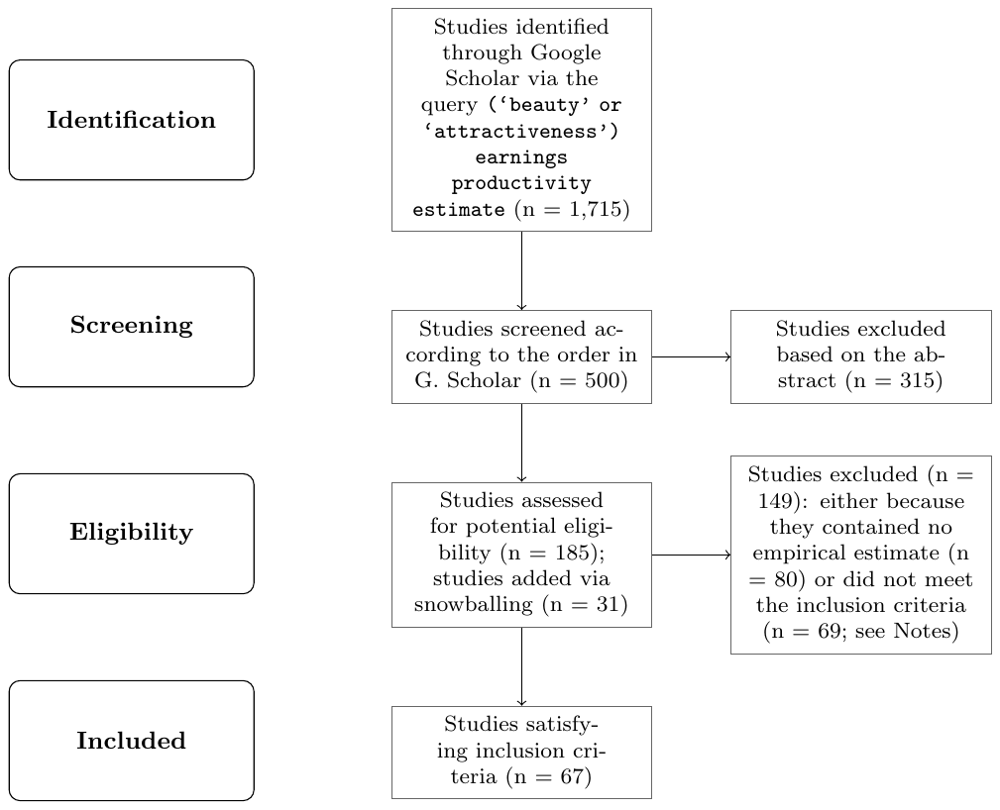
<figcaption><b>Figure S1.</b> PRISMA flow diagram. Notes: Preferred reporting items for systematic reviews and meta-analyses (PRISMA) is an evidence-based set of items for reporting in systematic reviews and meta-analyses. More details on PRISMA and reporting standards in the context of economics meta-analyses are provided by Havranek et al.<sup class="cite"><a href="#ref-66">66</a></sup>. Snowballing: we download the references of the potentially eligible studies identified in step "Screening" and inspect the 100 studies most commonly cited among the 185 studies. If, based on the abstract, these commonly cited studies show any promise of containing empirical estimates of the beauty effect, we add them to the set of potentially eligible studies. Snowballing yields 31 additional studies. Criteria for inclusion: i) the study must report the effect of beauty on a continuous variable reflecting earnings or productivity; ii) the beauty measurement used in the study must focus on physiognomy (just the face); iii) the study must focus on the subject's own earnings or productivity (e.g. not the income of the spouse, firm valuation, or college rank); iv) the study must report statistics that allow us to convert the reported estimate to the percent increase in earnings or productivity following a one-standard-deviation increase in beauty (e.g. studies reporting zero-order correlations or lacking the standard deviation of the beauty measure cannot be converted); v) the study must report standard errors or other statistics from which standard errors can be computed; and vi) the study must not be a laboratory experiment or a survey. Based on these criteria, we excluded 69 studies: 8 for lacking a continuous earnings or productivity variable, 7 for using a beauty measure not based on physiognomy, 12 for not focusing on the subject's own earnings or productivity, 19 for not reporting convertible statistics (often just correlation coefficients), 9 for missing standard errors, and 14 because they were laboratory experiments or surveys. The literature search was terminated on February 16, 2024. The dataset, together with R and Stata codes and reasons for exclusion of the 69 above-mentioned individual studies, is available at meta-analysis.cz/beauty.</figcaption>
</figure>
<div class="table-scroll">
<table>
<caption><b>Table S1.</b> The 67 studies included in the meta-analysis</caption>
<thead><tr><th scope="col"></th><th scope="col"></th><th scope="col"></th></tr></thead>
<tbody>
<tr><th scope="row">Ahmed et al.<sup class="cite"><a href="#ref-67">67</a></sup></th><td>Gu &amp; Ji<sup class="cite"><a href="#ref-33">33</a></sup></td><td>Liu<sup class="cite"><a href="#ref-68">68</a></sup></td></tr>
<tr><th scope="row">Ahn &amp; Lee<sup class="cite"><a href="#ref-69">69</a></sup></th><td>Halford &amp; Hsu<sup class="cite"><a href="#ref-70">70</a></sup></td><td>Liu et al.<sup class="cite"><a href="#ref-71">71</a></sup></td></tr>
<tr><th scope="row">Anyzova &amp; Mateju<sup class="cite"><a href="#ref-72">72</a></sup></th><td>Hamermesh &amp; Biddle<sup class="cite"><a href="#ref-34">34</a></sup></td><td>Malik et al.<sup class="cite"><a href="#ref-73">73</a></sup></td></tr>
<tr><th scope="row">Arunachalam &amp; Shah<sup class="cite"><a href="#ref-74">74</a></sup></th><td>Hamermesh &amp; Parker<sup class="cite"><a href="#ref-75">75</a></sup></td><td>Mehic<sup class="cite"><a href="#ref-24">24</a></sup></td></tr>
<tr><th scope="row">Bakkenbull &amp; Kiefer<sup class="cite"><a href="#ref-76">76</a></sup></th><td>Hamermesh &amp; Leigh<sup class="cite"><a href="#ref-77">77</a></sup></td><td>Mocan &amp; Tekin<sup class="cite"><a href="#ref-78">78</a></sup></td></tr>
<tr><th scope="row">Bakkenbull<sup class="cite"><a href="#ref-79">79</a></sup></th><td>Hamermesh et al.<sup class="cite"><a href="#ref-80">80</a></sup></td><td>Monk et al.<sup class="cite"><a href="#ref-81">81</a></sup></td></tr>
<tr><th scope="row">Berggren et al.<sup class="cite"><a href="#ref-82">82</a></sup></th><td>Hamermesh &amp; Crosnoe<sup class="cite"><a href="#ref-32">32</a></sup></td><td>Oreffice &amp; Quintana-Domeque<sup class="cite"><a href="#ref-83">83</a></sup></td></tr>
<tr><th scope="row">Berri et al.<sup class="cite"><a href="#ref-84">84</a></sup></th><td>Harper<sup class="cite"><a href="#ref-30">30</a></sup></td><td>Parrett<sup class="cite"><a href="#ref-85">85</a></sup></td></tr>
<tr><th scope="row">Bi et al.<sup class="cite"><a href="#ref-86">86</a></sup></th><td>Hernandez-Julian &amp; Peters<sup class="cite"><a href="#ref-87">87</a></sup></td><td>Peng et al.<sup class="cite"><a href="#ref-88">88</a></sup></td></tr>
<tr><th scope="row">Biddle &amp; Hamermesh<sup class="cite"><a href="#ref-89">89</a></sup></th><td>Hitsch et al.<sup class="cite"><a href="#ref-90">90</a></sup></td><td>Pfeifer<sup class="cite"><a href="#ref-91">91</a></sup></td></tr>
<tr><th scope="row">Borland &amp; Leigh<sup class="cite"><a href="#ref-92">92</a></sup></th><td>Islam &amp; Smyth<sup class="cite"><a href="#ref-93">93</a></sup></td><td>Ponzo &amp; Scoppa<sup class="cite"><a href="#ref-94">94</a></sup></td></tr>
<tr><th scope="row">Cipriani &amp; Zago<sup class="cite"><a href="#ref-95">95</a></sup></th><td>Jobu Babin et al.<sup class="cite"><a href="#ref-96">96</a></sup></td><td>Ravina<sup class="cite"><a href="#ref-97">97</a></sup></td></tr>
<tr><th scope="row">Clark &amp; Walker<sup class="cite"><a href="#ref-98">98</a></sup></th><td>Kanazawa &amp; Still<sup class="cite"><a href="#ref-99">99</a></sup></td><td>Ross &amp; Ferris<sup class="cite"><a href="#ref-100">100</a></sup></td></tr>
<tr><th scope="row">Cook &amp; Mobbs<sup class="cite"><a href="#ref-101">101</a></sup></th><td>King &amp; Leigh<sup class="cite"><a href="#ref-102">102</a></sup></td><td>Sachsida et al.<sup class="cite"><a href="#ref-103">103</a></sup></td></tr>
<tr><th scope="row">Deryugina &amp; Shurchkov<sup class="cite"><a href="#ref-50">50</a></sup></th><td>Klein &amp; Rosar<sup class="cite"><a href="#ref-104">104</a></sup></td><td>Salter et al.<sup class="cite"><a href="#ref-105">105</a></sup></td></tr>
<tr><th scope="row">Dietl et al.<sup class="cite"><a href="#ref-106">106</a></sup></th><td>Kraft<sup class="cite"><a href="#ref-107">107</a></sup></td><td>Schnusenberg &amp; Froehlich<sup class="cite"><a href="#ref-108">108</a></sup></td></tr>
<tr><th scope="row">Dilmaghani<sup class="cite"><a href="#ref-109">109</a></sup></th><td>Kraft<sup class="cite"><a href="#ref-110">110</a></sup></td><td>Scholz &amp; Sicinski<sup class="cite"><a href="#ref-31">31</a></sup></td></tr>
<tr><th scope="row">Dossinger et al.<sup class="cite"><a href="#ref-111">111</a></sup></th><td>Lahdevuori<sup class="cite"><a href="#ref-112">112</a></sup></td><td>Sen et al.<sup class="cite"><a href="#ref-113">113</a></sup></td></tr>
<tr><th scope="row">Edlund et al.<sup class="cite"><a href="#ref-114">114</a></sup></th><td>Lee &amp; Ryu<sup class="cite"><a href="#ref-115">115</a></sup></td><td>Stinebrickner et al.<sup class="cite"><a href="#ref-3">3</a></sup></td></tr>
<tr><th scope="row">Fidrmuc &amp; Paphawasit<sup class="cite"><a href="#ref-116">116</a></sup></th><td>Leigh &amp; Susilo<sup class="cite"><a href="#ref-117">117</a></sup></td><td>Tao<sup class="cite"><a href="#ref-118">118</a></sup></td></tr>
<tr><th scope="row">Fletcher<sup class="cite"><a href="#ref-119">119</a></sup></th><td>Li et al.<sup class="cite"><a href="#ref-120">120</a></sup></td><td>Walcutt et al.<sup class="cite"><a href="#ref-121">121</a></sup></td></tr>
<tr><th scope="row">French et al.<sup class="cite"><a href="#ref-122">122</a></sup></th><td>Li et al.<sup class="cite"><a href="#ref-123">123</a></sup></td><td>Wolbring &amp; Riordan<sup class="cite"><a href="#ref-124">124</a></sup></td></tr>
<tr><th scope="row">Gertler et al.<sup class="cite"><a href="#ref-125">125</a></sup></th><td></td><td></td></tr>
</tbody></table></div>
<p>Notes: Details on the literature search and criteria for inclusion are available in Figure S1. The last study was added on February 16, 2024.</p>
<figure>
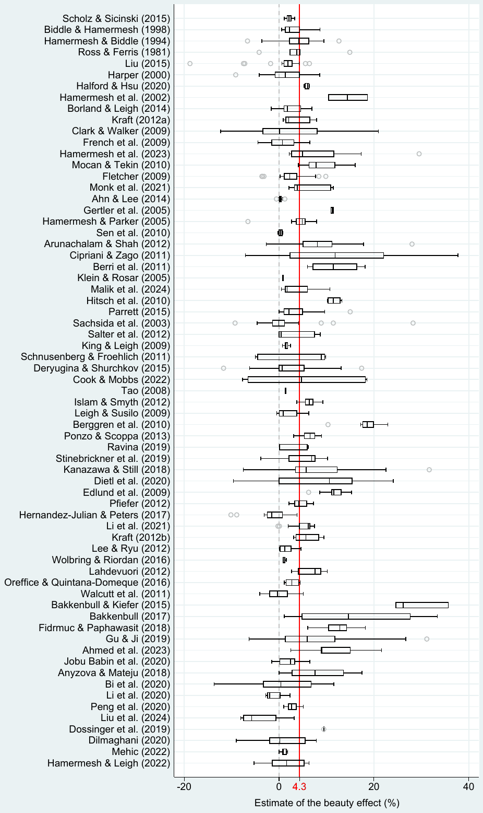
<figcaption><b>Figure S2.</b> Estimates vary both within and across studies. Notes: The figure shows a box plot of the estimated beauty effects. Studies are sorted by data age from oldest to newest. All estimates are recomputed to represent the percent increase in earnings or productivity associated with a one-standard-deviation increase in beauty. The length of each box represents the interquartile range (P25–P75), and the dividing line inside the box represents the median. The whiskers represent the highest and lowest data points within 1.5 times the range between the upper and lower quartiles. The mean overall reported effect is denoted as a solid vertical line. For ease of exposition, extreme outliers are excluded from the figure but included in all statistical tests.</figcaption>
</figure>
<div class="table-scroll">
<table>
<caption><b>Table S2.</b> Beauty premiums reported in different contexts</caption>
<thead><tr><th scope="col"></th><th scope="col">Est.</th><th scope="col">Stud.</th><th scope="col">Unweighted Mean</th><th scope="col">Unweighted 95% conf. int.</th><th scope="col"></th><th scope="col">Weighted Mean</th><th scope="col">Weighted 95% conf. int.</th><th scope="col"></th></tr></thead>
<tbody>
<tr><th scope="row"><i>Measurement of beauty</i></th><td></td><td></td><td></td><td></td><td></td><td></td><td></td><td></td></tr>
<tr><th scope="row">Interviewer-rated beauty</th><td class="num">526</td><td class="num">24</td><td class="num">4.33</td><td class="num">3.80</td><td class="num">4.86</td><td class="num">5.87</td><td class="num">5.31</td><td class="num">6.42</td></tr>
<tr><th scope="row">Photo-rated beauty</th><td class="num">481</td><td class="num">37</td><td class="num">4.28</td><td class="num">3.71</td><td class="num">4.85</td><td class="num">4.82</td><td class="num">4.16</td><td class="num">5.47</td></tr>
<tr><th scope="row">Software-rated beauty</th><td class="num">104</td><td class="num">8</td><td class="num">5.49</td><td class="num">4.15</td><td class="num">6.83</td><td class="num">7.43</td><td class="num">6.04</td><td class="num">8.82</td></tr>
<tr><th scope="row">Self-rated beauty</th><td class="num">56</td><td class="num">6</td><td class="num">2.04</td><td class="num">0.79</td><td class="num">3.29</td><td class="num">2.79</td><td class="num">1.32</td><td class="num">4.27</td></tr>
<tr><th scope="row">Dummy beauty</th><td class="num">460</td><td class="num">23</td><td class="num">3.63</td><td class="num">3.05</td><td class="num">4.22</td><td class="num">5.02</td><td class="num">4.39</td><td class="num">5.65</td></tr>
<tr><th scope="row">Categorical beauty</th><td class="num">699</td><td class="num">52</td><td class="num">4.70</td><td class="num">4.24</td><td class="num">5.16</td><td class="num">5.29</td><td class="num">4.76</td><td class="num">5.81</td></tr>
<tr><th scope="row">Beauty premium</th><td class="num">954</td><td class="num">67</td><td class="num">4.48</td><td class="num">4.07</td><td class="num">4.89</td><td class="num">5.45</td><td class="num">5.00</td><td class="num">5.91</td></tr>
<tr><th scope="row">Beauty penalty</th><td class="num">205</td><td class="num">16</td><td class="num">3.33</td><td class="num">2.56</td><td class="num">4.10</td><td class="num">3.10</td><td class="num">2.38</td><td class="num">3.82</td></tr>
<tr><th scope="row"><i>Measurement of success</i></th><td></td><td></td><td></td><td></td><td></td><td></td><td></td><td></td></tr>
<tr><th scope="row">Earnings</th><td class="num">688</td><td class="num">43</td><td class="num">4.33</td><td class="num">3.92</td><td class="num">4.75</td><td class="num">6.15</td><td class="num">5.65</td><td class="num">6.66</td></tr>
<tr><th scope="row">Non-earnings outcomes</th><td class="num">471</td><td class="num">29</td><td class="num">4.20</td><td class="num">3.55</td><td class="num">4.85</td><td class="num">3.74</td><td class="num">3.10</td><td class="num">4.38</td></tr>
<tr><th scope="row">Study outcomes</th><td class="num">189</td><td class="num">9</td><td class="num">3.19</td><td class="num">1.98</td><td class="num">4.41</td><td class="num">3.78</td><td class="num">2.54</td><td class="num">5.02</td></tr>
<tr><th scope="row">Teaching &amp; research outcomes</th><td class="num">139</td><td class="num">8</td><td class="num">4.95</td><td class="num">4.05</td><td class="num">5.85</td><td class="num">3.38</td><td class="num">2.36</td><td class="num">4.40</td></tr>
<tr><th scope="row">Athletic success</th><td class="num">33</td><td class="num">2</td><td class="num">6.28</td><td class="num">3.03</td><td class="num">9.54</td><td class="num">5.36</td><td class="num">2.27</td><td class="num">8.46</td></tr>
<tr><th scope="row">Electoral success</th><td class="num">37</td><td class="num">4</td><td class="num">7.00</td><td class="num">4.26</td><td class="num">9.75</td><td class="num">5.67</td><td class="num">3.09</td><td class="num">8.24</td></tr>
<tr><th scope="row">Other outcomes</th><td class="num">73</td><td class="num">6</td><td class="num">2.98</td><td class="num">2.24</td><td class="num">3.73</td><td class="num">2.19</td><td class="num">1.42</td><td class="num">2.95</td></tr>
<tr><th scope="row"><i>Data characteristics</i></th><td></td><td></td><td></td><td></td><td></td><td></td><td></td><td></td></tr>
<tr><th scope="row">Male subjects</th><td class="num">375</td><td class="num">44</td><td class="num">3.66</td><td class="num">3.10</td><td class="num">4.22</td><td class="num">4.28</td><td class="num">3.69</td><td class="num">4.87</td></tr>
<tr><th scope="row">Female subjects</th><td class="num">447</td><td class="num">48</td><td class="num">4.10</td><td class="num">3.45</td><td class="num">4.75</td><td class="num">6.28</td><td class="num">5.52</td><td class="num">7.04</td></tr>
<tr><th scope="row">Mixed gender</th><td class="num">337</td><td class="num">36</td><td class="num">5.21</td><td class="num">4.57</td><td class="num">5.85</td><td class="num">4.86</td><td class="num">4.18</td><td class="num">5.54</td></tr>
<tr><th scope="row">High-skilled workers</th><td class="num">335</td><td class="num">27</td><td class="num">4.30</td><td class="num">3.78</td><td class="num">4.81</td><td class="num">4.00</td><td class="num">3.42</td><td class="num">4.58</td></tr>
<tr><th scope="row">Western culture</th><td class="num">874</td><td class="num">47</td><td class="num">3.85</td><td class="num">3.46</td><td class="num">4.23</td><td class="num">4.62</td><td class="num">4.22</td><td class="num">5.02</td></tr>
<tr><th scope="row">Other cultures</th><td class="num">285</td><td class="num">21</td><td class="num">5.60</td><td class="num">4.72</td><td class="num">6.48</td><td class="num">6.55</td><td class="num">5.54</td><td class="num">7.56</td></tr>
<tr><th scope="row">Panel data</th><td class="num">998</td><td class="num">55</td><td class="num">3.86</td><td class="num">3.47</td><td class="num">4.25</td><td class="num">4.82</td><td class="num">4.38</td><td class="num">5.25</td></tr>
<tr><th scope="row">Cross-section</th><td class="num">161</td><td class="num">13</td><td class="num">6.87</td><td class="num">5.90</td><td class="num">7.83</td><td class="num">6.87</td><td class="num">5.87</td><td class="num">7.88</td></tr>
<tr><th scope="row"><i>Industry</i></th><td></td><td></td><td></td><td></td><td></td><td></td><td></td><td></td></tr>
<tr><th scope="row">Customer services</th><td class="num">57</td><td class="num">7</td><td class="num">2.74</td><td class="num">1.29</td><td class="num">4.18</td><td class="num">2.81</td><td class="num">1.42</td><td class="num">4.21</td></tr>
<tr><th scope="row">Financial services</th><td class="num">34</td><td class="num">6</td><td class="num">4.58</td><td class="num">2.51</td><td class="num">6.65</td><td class="num">4.18</td><td class="num">1.99</td><td class="num">6.37</td></tr>
<tr><th scope="row">Legal services</th><td class="num">31</td><td class="num">1</td><td class="num">2.86</td><td class="num">2.06</td><td class="num">3.66</td><td class="num">2.86</td><td class="num">2.06</td><td class="num">3.66</td></tr>
<tr><th scope="row">Political office</th><td class="num">37</td><td class="num">4</td><td class="num">7.00</td><td class="num">4.26</td><td class="num">9.75</td><td class="num">5.67</td><td class="num">3.09</td><td class="num">8.24</td></tr>
<tr><th scope="row">Professional sports</th><td class="num">56</td><td class="num">5</td><td class="num">8.70</td><td class="num">5.86</td><td class="num">11.54</td><td class="num">12.43</td><td class="num">9.41</td><td class="num">15.45</td></tr>
<tr><th scope="row">Scientific research</th><td class="num">42</td><td class="num">3</td><td class="num">7.96</td><td class="num">5.81</td><td class="num">10.11</td><td class="num">6.77</td><td class="num">4.48</td><td class="num">9.06</td></tr>
<tr><th scope="row">Sex industry</th><td class="num">55</td><td class="num">4</td><td class="num">8.55</td><td class="num">7.27</td><td class="num">9.82</td><td class="num">9.54</td><td class="num">8.45</td><td class="num">10.64</td></tr>
<tr><th scope="row"><i>Occupation</i></th><td></td><td></td><td></td><td></td><td></td><td></td><td></td><td></td></tr>
<tr><th scope="row">General population</th><td class="num">435</td><td class="num">23</td><td class="num">4.20</td><td class="num">3.77</td><td class="num">4.63</td><td class="num">5.39</td><td class="num">4.91</td><td class="num">5.87</td></tr>
<tr><th scope="row">Athletes</th><td class="num">56</td><td class="num">5</td><td class="num">8.70</td><td class="num">5.86</td><td class="num">11.54</td><td class="num">12.43</td><td class="num">9.41</td><td class="num">15.45</td></tr>
<tr><th scope="row">Executives</th><td class="num">56</td><td class="num">10</td><td class="num">5.98</td><td class="num">4.52</td><td class="num">7.43</td><td class="num">6.46</td><td class="num">4.94</td><td class="num">7.98</td></tr>
<tr><th scope="row">Lawyers</th><td class="num">31</td><td class="num">1</td><td class="num">2.86</td><td class="num">2.06</td><td class="num">3.66</td><td class="num">2.86</td><td class="num">2.06</td><td class="num">3.66</td></tr>
<tr><th scope="row">Politicians</th><td class="num">37</td><td class="num">4</td><td class="num">7.00</td><td class="num">4.26</td><td class="num">9.75</td><td class="num">5.67</td><td class="num">3.09</td><td class="num">8.24</td></tr>
<tr><th scope="row">Prostitutes</th><td class="num">55</td><td class="num">4</td><td class="num">8.55</td><td class="num">7.27</td><td class="num">9.82</td><td class="num">9.54</td><td class="num">8.45</td><td class="num">10.64</td></tr>
<tr><th scope="row">Salespeople</th><td class="num">32</td><td class="num">5</td><td class="num">2.11</td><td class="num">-0.21</td><td class="num">4.44</td><td class="num">2.55</td><td class="num">0.44</td><td class="num">4.67</td></tr>
<tr><th scope="row">Scientists</th><td class="num">42</td><td class="num">3</td><td class="num">7.96</td><td class="num">5.81</td><td class="num">10.11</td><td class="num">6.77</td><td class="num">4.48</td><td class="num">9.06</td></tr>
<tr><th scope="row">Students</th><td class="num">233</td><td class="num">9</td><td class="num">2.54</td><td class="num">1.55</td><td class="num">3.53</td><td class="num">3.07</td><td class="num">2.01</td><td class="num">4.14</td></tr>
<tr><th scope="row">Teachers</th><td class="num">109</td><td class="num">8</td><td class="num">3.34</td><td class="num">2.60</td><td class="num">4.09</td><td class="num">1.88</td><td class="num">0.98</td><td class="num">2.78</td></tr>
<tr><th scope="row"><i>Degree of customer contact</i></th><td></td><td></td><td></td><td></td><td></td><td></td><td></td><td></td></tr>
<tr><th scope="row">No customer contact</th><td class="num">318</td><td class="num">23</td><td class="num">3.64</td><td class="num">2.79</td><td class="num">4.49</td><td class="num">4.14</td><td class="num">3.34</td><td class="num">4.94</td></tr>
<tr><th scope="row">Some customer contact</th><td class="num">401</td><td class="num">19</td><td class="num">3.87</td><td class="num">3.47</td><td class="num">4.27</td><td class="num">4.97</td><td class="num">4.51</td><td class="num">5.43</td></tr>
<tr><th scope="row">Direct customer contact</th><td class="num">440</td><td class="num">32</td><td class="num">5.11</td><td class="num">4.49</td><td class="num">5.74</td><td class="num">6.05</td><td class="num">5.32</td><td class="num">6.78</td></tr>
</tbody></table></div>
<div class="table-scroll">
<table class="continued">
<caption><b>Table S2 (continued).</b> Beauty premiums reported in different contexts</caption>
<thead><tr><th scope="col"></th><th scope="col">Est.</th><th scope="col">Stud.</th><th scope="col">Unweighted Mean</th><th scope="col">Unweighted 95% conf. int.</th><th scope="col"></th><th scope="col">Weighted Mean</th><th scope="col">Weighted 95% conf. int.</th><th scope="col"></th></tr></thead>
<tbody>
<tr><th scope="row"><i>Measurability of output</i></th><td></td><td></td><td></td><td></td><td></td><td></td><td></td><td></td></tr>
<tr><th scope="row">Low output measurability</th><td class="num">135</td><td class="num">6</td><td class="num">3.32</td><td class="num">2.66</td><td class="num">3.97</td><td class="num">3.15</td><td class="num">2.44</td><td class="num">3.87</td></tr>
<tr><th scope="row">Mid output measurability</th><td class="num">274</td><td class="num">16</td><td class="num">4.06</td><td class="num">3.36</td><td class="num">4.76</td><td class="num">6.16</td><td class="num">5.51</td><td class="num">6.81</td></tr>
<tr><th scope="row">High output measurability</th><td class="num">750</td><td class="num">51</td><td class="num">4.53</td><td class="num">4.05</td><td class="num">5.01</td><td class="num">5.21</td><td class="num">4.67</td><td class="num">5.75</td></tr>
<tr><th scope="row"><i>Intensity of interpersonal interaction</i></th><td></td><td></td><td></td><td></td><td></td><td></td><td></td><td></td></tr>
<tr><th scope="row">Low interpersonal intensity</th><td class="num">180</td><td class="num">17</td><td class="num">5.11</td><td class="num">3.92</td><td class="num">6.29</td><td class="num">6.16</td><td class="num">4.99</td><td class="num">7.32</td></tr>
<tr><th scope="row">Mid interpersonal intensity</th><td class="num">519</td><td class="num">30</td><td class="num">3.96</td><td class="num">3.46</td><td class="num">4.45</td><td class="num">4.64</td><td class="num">4.00</td><td class="num">5.29</td></tr>
<tr><th scope="row">High interpersonal intensity</th><td class="num">460</td><td class="num">33</td><td class="num">4.31</td><td class="num">3.76</td><td class="num">4.87</td><td class="num">5.29</td><td class="num">4.74</td><td class="num">5.84</td></tr>
<tr><th scope="row"><i>Cognitive and non-cognitive skill controls</i></th><td></td><td></td><td></td><td></td><td></td><td></td><td></td><td></td></tr>
<tr><th scope="row">No skill control</th><td class="num">617</td><td class="num">48</td><td class="num">4.99</td><td class="num">4.52</td><td class="num">5.45</td><td class="num">6.02</td><td class="num">5.47</td><td class="num">6.58</td></tr>
<tr><th scope="row">Cognitive skill control only</th><td class="num">298</td><td class="num">16</td><td class="num">2.44</td><td class="num">1.67</td><td class="num">3.21</td><td class="num">2.45</td><td class="num">1.66</td><td class="num">3.24</td></tr>
<tr><th scope="row">Non-cognitive skill control only</th><td class="num">97</td><td class="num">10</td><td class="num">6.70</td><td class="num">5.38</td><td class="num">8.03</td><td class="num">5.37</td><td class="num">4.13</td><td class="num">6.62</td></tr>
<tr><th scope="row">Both skill controls</th><td class="num">147</td><td class="num">15</td><td class="num">3.43</td><td class="num">2.52</td><td class="num">4.34</td><td class="num">4.89</td><td class="num">3.82</td><td class="num">5.96</td></tr>
<tr><th scope="row"><i>Objectively measured cognitive skill control</i></th><td></td><td></td><td></td><td></td><td></td><td></td><td></td><td></td></tr>
<tr><th scope="row">Objective cognitive skill control only</th><td class="num">256</td><td class="num">12</td><td class="num">2.47</td><td class="num">1.60</td><td class="num">3.34</td><td class="num">2.73</td><td class="num">1.87</td><td class="num">3.59</td></tr>
<tr><th scope="row">Objective cog. and non-cog. control</th><td class="num">127</td><td class="num">10</td><td class="num">2.98</td><td class="num">2.23</td><td class="num">3.72</td><td class="num">5.21</td><td class="num">4.39</td><td class="num">6.03</td></tr>
<tr><th scope="row">Objective cog. control or DID method</th><td class="num">395</td><td class="num">21</td><td class="num">2.59</td><td class="num">1.98</td><td class="num">3.20</td><td class="num">3.66</td><td class="num">3.05</td><td class="num">4.26</td></tr>
<tr><th scope="row"><i>Estimation technique</i></th><td></td><td></td><td></td><td></td><td></td><td></td><td></td><td></td></tr>
<tr><th scope="row">Ordinary least squares</th><td class="num">903</td><td class="num">60</td><td class="num">4.17</td><td class="num">3.77</td><td class="num">4.56</td><td class="num">5.19</td><td class="num">4.75</td><td class="num">5.64</td></tr>
<tr><th scope="row">Instrumental variables</th><td class="num">83</td><td class="num">10</td><td class="num">4.86</td><td class="num">3.07</td><td class="num">6.64</td><td class="num">6.60</td><td class="num">4.70</td><td class="num">8.50</td></tr>
<tr><th scope="row">Difference-in-differences</th><td class="num">12</td><td class="num">2</td><td class="num">1.24</td><td class="num">0.63</td><td class="num">1.84</td><td class="num">1.13</td><td class="num">0.55</td><td class="num">1.71</td></tr>
<tr><th scope="row">Other method</th><td class="num">161</td><td class="num">13</td><td class="num">4.84</td><td class="num">3.78</td><td class="num">5.90</td><td class="num">4.91</td><td class="num">3.82</td><td class="num">6.00</td></tr>
<tr><th scope="row"><i>Publication characteristics</i></th><td></td><td></td><td></td><td></td><td></td><td></td><td></td><td></td></tr>
<tr><th scope="row">Published study</th><td class="num">1,027</td><td class="num">58</td><td class="num">4.19</td><td class="num">3.80</td><td class="num">4.57</td><td class="num">5.23</td><td class="num">4.79</td><td class="num">5.67</td></tr>
<tr><th scope="row">Unpublished study</th><td class="num">132</td><td class="num">9</td><td class="num">4.99</td><td class="num">3.96</td><td class="num">6.03</td><td class="num">5.06</td><td class="num">4.11</td><td class="num">6.02</td></tr>
<tr><th scope="row">All estimates</th><td class="num">1,159</td><td class="num">67</td><td class="num">4.28</td><td class="num">3.92</td><td class="num">4.64</td><td class="num">5.21</td><td class="num">4.81</td><td class="num">5.61</td></tr>
</tbody></table></div>
<p>Notes: The table reports summary statistics of the estimated beauty effect for subsets of the literature. All estimates are recomputed to represent the percent increase in earnings or productivity associated with a one-standard-deviation increase in beauty. Est. = estimates. Stud. = studies. In the left-hand panel (unweighted) simple means and the corresponding 95% confidence intervals are reported; each estimate is assigned the same weight. In the right-hand panel (weighted) estimates are weighted by the inverse of the number of estimates reported per study, thus giving each study the same weight. Details on the definition of subsamples are available in Table S10 and Table S18.</p>
<div class="table-scroll">
<table>
<caption><b>Table S3.</b> Bias-corrected and fully adjusted beauty premiums by subgroup</caption>
<thead><tr><th scope="col"></th><th scope="col">Obs.</th><th scope="col">Clust.</th><th scope="col">RoBMA Mean</th><th scope="col">RoBMA 95% cred. int.</th><th scope="col"></th><th scope="col">RoBMA 3lvl Mean</th><th scope="col">RoBMA 3lvl 95% cred. int.</th><th scope="col"></th></tr></thead>
<tbody>
<tr><th scope="row"><i>Industry</i></th><td></td><td></td><td></td><td></td><td></td><td></td><td></td><td></td></tr>
<tr><th scope="row">Customer services</th><td class="num">57</td><td class="num">7</td><td class="num">-1.97</td><td class="num">-3.96</td><td class="num">1.32</td><td class="num">-0.45</td><td class="num">-4.06</td><td class="num">1.04</td></tr>
<tr><th scope="row">Financial services</th><td class="num">34</td><td class="num">6</td><td class="num">-1.65</td><td class="num">-3.51</td><td class="num">1.57</td><td class="num">0.25</td><td class="num">-1.17</td><td class="num">3.01</td></tr>
<tr><th scope="row">Legal services</th><td class="num">31</td><td class="num">1</td><td class="num">1.15</td><td class="num">-0.18</td><td class="num">2.22</td><td class="num">-0.03</td><td class="num">-3.82</td><td class="num">3.36</td></tr>
<tr><th scope="row">Political office</th><td class="num">37</td><td class="num">4</td><td class="num">0.11</td><td class="num">-1.60</td><td class="num">2.84</td><td class="num">0.01</td><td class="num">-4.58</td><td class="num">3.62</td></tr>
<tr><th scope="row">Professional sports</th><td class="num">56</td><td class="num">5</td><td class="num">-1.03</td><td class="num">-4.10</td><td class="num">2.37</td><td class="num">0.76</td><td class="num">-0.22</td><td class="num">6.65</td></tr>
<tr><th scope="row">Scientific research</th><td class="num">42</td><td class="num">3</td><td class="num">5.73</td><td class="num">3.33</td><td class="num">11.0</td><td class="num">-0.26</td><td class="num">-4.31</td><td class="num">1.83</td></tr>
<tr><th scope="row">Sex industry</th><td class="num">55</td><td class="num">4</td><td class="num">1.16</td><td class="num">-6.60</td><td class="num">7.62</td><td class="num">0.44</td><td class="num">-3.08</td><td class="num">6.08</td></tr>
<tr><th scope="row"><i>Occupation</i></th><td></td><td></td><td></td><td></td><td></td><td></td><td></td><td></td></tr>
<tr><th scope="row">General population</th><td class="num">435</td><td class="num">23</td><td class="num">-0.36</td><td class="num">-1.53</td><td class="num">0.05</td><td class="num">1.31</td><td class="num">0.00</td><td class="num">3.44</td></tr>
<tr><th scope="row">Executives</th><td class="num">56</td><td class="num">10</td><td class="num">-0.16</td><td class="num">-1.53</td><td class="num">2.35</td><td class="num">1.29</td><td class="num">0.00</td><td class="num">3.77</td></tr>
<tr><th scope="row">Salespeople</th><td class="num">32</td><td class="num">5</td><td class="num">-0.68</td><td class="num">-3.86</td><td class="num">0.00</td><td class="num">0.97</td><td class="num">-0.62</td><td class="num">2.83</td></tr>
<tr><th scope="row">Students</th><td class="num">233</td><td class="num">9</td><td class="num">-0.54</td><td class="num">-2.25</td><td class="num">0.00</td><td class="num">0.81</td><td class="num">-1.05</td><td class="num">2.69</td></tr>
<tr><th scope="row">Teachers</th><td class="num">109</td><td class="num">8</td><td class="num">-0.35</td><td class="num">-1.53</td><td class="num">0.31</td><td class="num">0.58</td><td class="num">-2.78</td><td class="num">2.69</td></tr>
<tr><th scope="row"><i>Gender</i></th><td></td><td></td><td></td><td></td><td></td><td></td><td></td><td></td></tr>
<tr><th scope="row">Female</th><td class="num">447</td><td class="num">48</td><td class="num">-0.47</td><td class="num">-0.83</td><td class="num">0.00</td><td class="num">1.25</td><td class="num">-0.44</td><td class="num">2.98</td></tr>
<tr><th scope="row">Male</th><td class="num">375</td><td class="num">44</td><td class="num">0.46</td><td class="num">0.00</td><td class="num">0.81</td><td class="num">1.58</td><td class="num">0.00</td><td class="num">3.36</td></tr>
<tr><th scope="row"><i>Degree of customer contact</i></th><td></td><td></td><td></td><td></td><td></td><td></td><td></td><td></td></tr>
<tr><th scope="row">No customer contact</th><td class="num">318</td><td class="num">23</td><td class="num">-0.20</td><td class="num">-1.29</td><td class="num">0.00</td><td class="num">-0.61</td><td class="num">-2.35</td><td class="num">1.66</td></tr>
<tr><th scope="row">Some customer contact</th><td class="num">401</td><td class="num">19</td><td class="num">-0.19</td><td class="num">-1.29</td><td class="num">0.00</td><td class="num">0.86</td><td class="num">-0.31</td><td class="num">3.19</td></tr>
<tr><th scope="row">Direct customer contact</th><td class="num">440</td><td class="num">32</td><td class="num">-0.19</td><td class="num">-1.29</td><td class="num">0.00</td><td class="num">1.25</td><td class="num">0.00</td><td class="num">3.50</td></tr>
<tr><th scope="row"><i>Measurability of output/performance</i></th><td></td><td></td><td></td><td></td><td></td><td></td><td></td><td></td></tr>
<tr><th scope="row">Low output measurability</th><td class="num">135</td><td class="num">6</td><td class="num">-0.17</td><td class="num">-1.30</td><td class="num">0.62</td><td class="num">0.53</td><td class="num">0.00</td><td class="num">2.28</td></tr>
<tr><th scope="row">Mid output measurability</th><td class="num">274</td><td class="num">16</td><td class="num">-0.26</td><td class="num">-1.41</td><td class="num">0.00</td><td class="num">0.53</td><td class="num">0.00</td><td class="num">2.29</td></tr>
<tr><th scope="row">High output measurability</th><td class="num">750</td><td class="num">51</td><td class="num">-0.21</td><td class="num">-1.30</td><td class="num">0.03</td><td class="num">0.53</td><td class="num">0.00</td><td class="num">2.28</td></tr>
<tr><th scope="row"><i>Intensity of interpersonal interaction</i></th><td></td><td></td><td></td><td></td><td></td><td></td><td></td><td></td></tr>
<tr><th scope="row">Low interpersonal intensity</th><td class="num">180</td><td class="num">17</td><td class="num">0.01</td><td class="num">-1.22</td><td class="num">1.17</td><td class="num">0.31</td><td class="num">0.00</td><td class="num">2.10</td></tr>
<tr><th scope="row">Mid interpersonal intensity</th><td class="num">519</td><td class="num">30</td><td class="num">-0.25</td><td class="num">-1.24</td><td class="num">0.00</td><td class="num">0.32</td><td class="num">0.00</td><td class="num">2.11</td></tr>
<tr><th scope="row">High interpersonal intensity</th><td class="num">460</td><td class="num">33</td><td class="num">-0.22</td><td class="num">-1.23</td><td class="num">0.00</td><td class="num">0.33</td><td class="num">0.00</td><td class="num">2.12</td></tr>
<tr><th scope="row"><i>Cognitive and non-cognitive skill controls</i></th><td></td><td></td><td></td><td></td><td></td><td></td><td></td><td></td></tr>
<tr><th scope="row">No skill control</th><td class="num">617</td><td class="num">48</td><td class="num">1.24</td><td class="num">0.61</td><td class="num">2.09</td><td class="num">3.16</td><td class="num">1.98</td><td class="num">4.33</td></tr>
<tr><th scope="row">Cognitive skill control only</th><td class="num">298</td><td class="num">16</td><td class="num">-1.70</td><td class="num">-2.48</td><td class="num">-0.64</td><td class="num">1.63</td><td class="num">0.13</td><td class="num">3.36</td></tr>
<tr><th scope="row">Non-cognitive skill control only</th><td class="num">97</td><td class="num">10</td><td class="num">2.43</td><td class="num">1.26</td><td class="num">4.00</td><td class="num">3.61</td><td class="num">1.93</td><td class="num">5.44</td></tr>
<tr><th scope="row">Both skill controls</th><td class="num">147</td><td class="num">15</td><td class="num">-0.70</td><td class="num">-1.66</td><td class="num">0.64</td><td class="num">1.83</td><td class="num">0.14</td><td class="num">3.44</td></tr>
<tr><th scope="row"><i>Objectively measured cognitive skill control</i></th><td></td><td></td><td></td><td></td><td></td><td></td><td></td><td></td></tr>
<tr><th scope="row">Objective cognitive skill control only</th><td class="num">256</td><td class="num">12</td><td class="num">0.00</td><td class="num">-0.70</td><td class="num">1.05</td><td class="num">0.63</td><td class="num">0.00</td><td class="num">2.33</td></tr>
<tr><th scope="row">Objective cog. and non-cog. control</th><td class="num">127</td><td class="num">10</td><td class="num">0.44</td><td class="num">0.00</td><td class="num">1.86</td><td class="num">0.64</td><td class="num">0.00</td><td class="num">2.36</td></tr>
<tr><th scope="row">Objective cog. control or DID method</th><td class="num">395</td><td class="num">21</td><td class="num">0.06</td><td class="num">0.00</td><td class="num">0.89</td><td class="num">0.46</td><td class="num">0.00</td><td class="num">2.00</td></tr>
<tr><th scope="row"><i>Output type</i></th><td></td><td></td><td></td><td></td><td></td><td></td><td></td><td></td></tr>
<tr><th scope="row">Earnings</th><td class="num">471</td><td class="num">29</td><td class="num">-0.22</td><td class="num">-1.31</td><td class="num">0.00</td><td class="num">0.38</td><td class="num">-0.37</td><td class="num">2.18</td></tr>
<tr><th scope="row">Non-earnings outcomes</th><td class="num">688</td><td class="num">43</td><td class="num">-0.22</td><td class="num">-1.31</td><td class="num">0.00</td><td class="num">0.43</td><td class="num">0.00</td><td class="num">2.19</td></tr>
</tbody></table></div>
<p>Notes: The table reports implied beauty premiums conditional on three adjustments: (i) correction for publication bias, (ii) inclusion of cognitive-ability controls or use of difference-in-differences estimation, and (iii) exclusion of occupations involving sex work. The second adjustment is not applied to "No skill control" and "Non-cognitive skill control only" subgroups. The third adjustment is not applied to the sex industry subgroup. Occupations that fully overlap with industries (e.g., all estimates in the subgroup "Legal services" correspond to lawyers) are omitted from the Occupation group. RoBMA denotes Robust Bayesian Meta-Analysis, while the specification on the right-hand side applies the three-level RoBMA (RoBMA 3lvl), which accounts for the dependence among multiple estimates reported within the same study<sup class="cite"><a href="#ref-16">16</a>&#8211;<a href="#ref-19">19</a></sup>. Each <i>subgroup model</i> uses only estimates for that dimension (e.g., industry-specific effects) and includes dummies for the <i>categories</i>. If RoBMA detects little systematic heterogeneity, category means may look similar. These subgroup means need not average to the overall mean, which is based on all effects, including non-subgrouped estimates. DID = difference-in-differences. <i>Est.</i> indicates the number of estimates included in the analysis, and <i>Stud.</i> denotes the number of studies used in the multilevel specification. <i>Mean</i> reports the posterior model-averaged mean estimate for each subgroup, and the associated 95% credible interval reflects the posterior uncertainty surrounding this estimate. Definitions of the subgroups are provided in Table S18. More details on the RoBMA exercise are available in Table S17.</p>
<div class="table-scroll">
<table>
<caption><b>Table S4.</b> Specification test for the selection model</caption>
<thead><tr><th scope="col"></th><th scope="col">All</th><th scope="col">Premium</th><th scope="col">Penalty</th><th scope="col">Prostitutes</th><th scope="col">No prostitutes</th></tr></thead>
<tbody>
<tr><th scope="row">Correlation</th><td class="num">0.550</td><td class="num">0.535</td><td class="num">0.665</td><td class="num">-0.217</td><td class="num">0.568</td></tr>
<tr><th scope="row"></th><td>[0.43, 0.613]</td><td>[0.402, 0.611]</td><td>[0.543, 0.725]</td><td>[-0.462, 0.043]</td><td>[0.448, 0.624]</td></tr>
<tr><th scope="row">Estimates</th><td class="num">1,159</td><td class="num">954</td><td class="num">205</td><td class="num">55</td><td class="num">1,104</td></tr>
</tbody></table></div>
<p>Notes: Following Kranz and Putz<sup class="cite"><a href="#ref-63">63</a></sup>, the table shows, for selected subsets of the literature, the correlation coefficient between the logarithm of the absolute value of the beauty effect and the logarithm of the corresponding standard error, weighted by the inverse publication probability estimated by the Andrews-Kasy<sup class="cite"><a href="#ref-55">55</a></sup> model. If the assumptions of the model hold, the correlation is zero. Bootstrapped 95% confidence interval in parentheses.</p>
<div class="table-scroll">
<table>
<caption><b>Table S5.</b> Caliper tests suggest selection for positive estimates</caption>
<thead><tr><th scope="col"></th><th scope="col">t-statistic = 0</th><th scope="col">t-statistic = 1.96</th><th scope="col">t-statistic = 2.58</th></tr></thead>
<tbody>
<tr><th scope="row">Caliper 0.05</th><td class="num">0.119</td><td>0.176<sup>**</sup></td><td class="num">0.133</td></tr>
<tr><th scope="row"></th><td class="num">(0.109)</td><td class="num">(0.078)</td><td class="num">(0.089)</td></tr>
<tr><th scope="row"></th><td>N = 21</td><td>N = 37</td><td>N = 30</td></tr>
<tr><th scope="row">Caliper 0.1</th><td>0.196<sup>***</sup></td><td class="num">0.074</td><td class="num">0.064</td></tr>
<tr><th scope="row"></th><td class="num">(0.069)</td><td class="num">(0.064)</td><td class="num">(0.067)</td></tr>
<tr><th scope="row"></th><td>N = 46</td><td>N = 61</td><td>N = 55</td></tr>
<tr><th scope="row">Caliper 0.15</th><td>0.222<sup>***</sup></td><td class="num">0.054</td><td class="num">0.059</td></tr>
<tr><th scope="row"></th><td class="num">(0.062)</td><td class="num">(0.055)</td><td class="num">(0.061)</td></tr>
<tr><th scope="row"></th><td>N = 54</td><td>N = 83</td><td>N = 68</td></tr>
<tr><th scope="row">Caliper 0.2</th><td>0.205<sup>***</sup></td><td class="num">0.019</td><td class="num">0.024</td></tr>
<tr><th scope="row"></th><td class="num">(0.052)</td><td class="num">(0.049)</td><td class="num">(0.055)</td></tr>
<tr><th scope="row"></th><td>N = 78</td><td>N = 106</td><td>N = 82</td></tr>
<tr><th scope="row">Caliper 0.25</th><td>0.173<sup>***</sup></td><td class="num">0.04</td><td class="num">0</td></tr>
<tr><th scope="row"></th><td class="num">(0.048)</td><td class="num">(0.043)</td><td class="num">(0.05)</td></tr>
<tr><th scope="row"></th><td>N = 98</td><td>N = 137</td><td>N = 102</td></tr>
</tbody></table></div>
<p>Notes: The table reports results for caliper tests<sup class="cite"><a href="#ref-126">126</a></sup>. The tests compare the relative frequency of estimates above and below an important threshold for the t-statistic; the rows show results for different caliper widths. A test statistic of 0.176, for example, means that 67.6% estimates are just above the threshold and 32.4% estimates are just below the threshold. N = number of estimates. Standard errors are reported in parentheses and clustered at the study level. <sup>*</sup> p &lt; 0.10, <sup>**</sup> p &lt; 0.05, <sup>***</sup> p &lt; 0.01.</p>
<div class="table-scroll">
<table>
<caption><b>Table S6.</b> Linear and nonlinear techniques detect publication bias</caption>
<thead><tr><th scope="col"><b>Part 1. Clustered at the study level</b></th><th scope="col"></th><th scope="col"></th><th scope="col"></th><th scope="col"></th><th scope="col"></th></tr></thead>
<tbody>
<tr><th scope="row"><b>Panel A</b></th><td>OLS</td><td>FE</td><td>BE</td><td>MAIVE</td><td>Weighted</td></tr>
<tr><th scope="row">Publication bias</th><td>0.377<sup>***</sup></td><td>0.208<sup>*</sup></td><td>0.732<sup>***</sup></td><td class="num">0.447</td><td>0.656<sup>**</sup></td></tr>
<tr><th scope="row">(<i>standard error</i>)</th><td class="num">(0.118)</td><td class="num">(0.119)</td><td class="num">(0.164)</td><td class="num">(0.286)</td><td class="num">(0.272)</td></tr>
<tr><th scope="row"></th><td>[0.116, 0.634]</td><td></td><td></td><td>{-0.045, 1.030}</td><td>[-0.009, 1.268]</td></tr>
<tr><th scope="row">Effect beyond bias</th><td>2.865<sup>***</sup></td><td>3.497<sup>***</sup></td><td>2.243<sup>**</sup></td><td>3.052<sup>***</sup></td><td>3.424<sup>***</sup></td></tr>
<tr><th scope="row">(<i>constant</i>)</th><td class="num">(0.464)</td><td class="num">(0.446)</td><td class="num">(0.871)</td><td class="num">(1.133)</td><td class="num">(1.156)</td></tr>
<tr><th scope="row"></th><td>[1.916, 3.781]</td><td></td><td></td><td>{0.726, 4.995}</td><td>[0.776, 6.339]</td></tr>
<tr><th scope="row">Observations</th><td class="num">1,159</td><td class="num">1,159</td><td class="num">1,159</td><td class="num">1,159</td><td class="num">1,159</td></tr>
<tr><th scope="row"><b>Panel B</b></th><td>Precision-weighted/Kink</td><td>WAAP</td><td>Stem</td><td>RTMA</td><td>Selection</td></tr>
<tr><th scope="row">Publication bias</th><td>1.720<sup>***</sup></td><td></td><td></td><td></td><td>P = 0.142</td></tr>
<tr><th scope="row"></th><td class="num">(0.224)</td><td></td><td></td><td></td><td class="num">(0.038)</td></tr>
<tr><th scope="row"></th><td>[1.225, 2.188]</td><td></td><td></td><td></td><td></td></tr>
<tr><th scope="row">Effect beyond bias</th><td class="num">0.343</td><td>0.323<sup>**</sup></td><td class="num">0.055</td><td>2.210<sup>***</sup></td><td class="num">0.493</td></tr>
<tr><th scope="row"></th><td class="num">(0.272)</td><td class="num">(0.147)</td><td class="num">(1.276)</td><td class="num">(0.010)</td><td class="num">(0.410)</td></tr>
<tr><th scope="row"></th><td>[-0.028, 1.741]</td><td></td><td></td><td></td><td></td></tr>
<tr><th scope="row">Observations</th><td class="num">1,159</td><td class="num">1,159</td><td class="num">1,159</td><td class="num">1,159</td><td class="num">1,159</td></tr>
<tr><th scope="row"><b>Part 2. Clustered at the database level</b></th><td></td><td></td><td></td><td></td><td></td></tr>
<tr><th scope="row"><b>Panel A</b></th><td>OLS</td><td>FE</td><td>BE</td><td>MAIVE</td><td>Weighted</td></tr>
<tr><th scope="row">Publication bias</th><td>0.377<sup>***</sup></td><td>0.208<sup>*</sup></td><td>0.732<sup>***</sup></td><td class="num">0.447</td><td>0.656<sup>**</sup></td></tr>
<tr><th scope="row">(<i>standard error</i>)</th><td class="num">(0.132)</td><td class="num">(0.120)</td><td class="num">(0.262)</td><td class="num">(0.337)</td><td class="num">(0.308)</td></tr>
<tr><th scope="row"></th><td>[0.107, 0.751]</td><td></td><td></td><td>{-0.413, 1.246}</td><td>[-0.084, 1.352]</td></tr>
<tr><th scope="row">Effect beyond bias</th><td>2.865<sup>***</sup></td><td>3.497<sup>***</sup></td><td>2.243<sup>**</sup></td><td>3.052<sup>***</sup></td><td>3.424<sup>***</sup></td></tr>
<tr><th scope="row">(<i>constant</i>)</th><td class="num">(0.466)</td><td class="num">(0.453)</td><td class="num">(0.932)</td><td class="num">(1.226)</td><td class="num">(1.223)</td></tr>
<tr><th scope="row"></th><td>[1.859, 3.779]</td><td></td><td></td><td>{-0.625, 6.987}</td><td>[0.648, 6.505]</td></tr>
<tr><th scope="row">Observations</th><td class="num">1,159</td><td class="num">1,159</td><td class="num">1,159</td><td class="num">1,159</td><td class="num">1,159</td></tr>
<tr><th scope="row"><b>Panel B</b></th><td>Precision-weighted/Kink</td><td>WAAP</td><td>Stem</td><td>RTMA</td><td>Selection</td></tr>
<tr><th scope="row">Publication bias</th><td>1.720<sup>***</sup></td><td></td><td></td><td></td><td>P = 0.142</td></tr>
<tr><th scope="row"></th><td class="num">(0.237)</td><td></td><td></td><td></td><td class="num">(0.039)</td></tr>
<tr><th scope="row"></th><td>[1.227, 2.296]</td><td></td><td></td><td></td><td></td></tr>
<tr><th scope="row">Effect beyond bias</th><td class="num">0.343</td><td>0.323<sup>**</sup></td><td class="num">0.055</td><td>2.210<sup>***</sup></td><td class="num">0.493</td></tr>
<tr><th scope="row"></th><td class="num">(0.276)</td><td class="num">(0.147)</td><td class="num">(1.276)</td><td class="num">(0.010)</td><td class="num">(0.425)</td></tr>
<tr><th scope="row"></th><td>[-0.046, 1.592]</td><td></td><td></td><td></td><td></td></tr>
<tr><th scope="row">Observations</th><td class="num">1,159</td><td class="num">1,159</td><td class="num">1,159</td><td class="num">1,159</td><td class="num">1,159</td></tr>
</tbody></table></div>
<p>Notes: Panel A reports the results of regression <math class="inl" xmlns="http://www.w3.org/1998/Math/MathML" display="inline"><mrow><msub><mover accent="true"><mrow><mi>b</mi></mrow><mo>&#x0005E;</mo></mover><mrow><mi>i</mi><mi>j</mi></mrow></msub><mo>&#x0003D;</mo><msub><mi>b</mi><mn>0</mn></msub><mo>&#x0002B;</mo><mi>&#x003B2;</mi><mo>&#x000B7;</mo><mi>S</mi><mi>E</mi><mo stretchy="false">&#x00028;</mo><msub><mi>b</mi><mrow><mi>i</mi><mi>j</mi></mrow></msub><mo stretchy="false">&#x00029;</mo><mo>&#x0002B;</mo><msub><mi>&#x003F5;</mi><mrow><mi>i</mi><mi>j</mi></mrow></msub></mrow></math>, where <math class="inl" xmlns="http://www.w3.org/1998/Math/MathML" display="inline"><mrow><msub><mover accent="true"><mrow><mi>b</mi></mrow><mo>&#x0005E;</mo></mover><mrow><mi>i</mi><mi>j</mi></mrow></msub></mrow></math> denotes the <i>i</i>-th beauty effect estimated in the <i>j</i>-th study, and <math class="inl" xmlns="http://www.w3.org/1998/Math/MathML" display="inline"><mrow><mi>S</mi><mi>E</mi><mo stretchy="false">&#x00028;</mo><msub><mi>b</mi><mrow><mi>i</mi><mi>j</mi></mrow></msub><mo stretchy="false">&#x00029;</mo></mrow></math> denotes its standard error. FE = study-level fixed effects, BE = study-level between effects, MAIVE = Meta-Analysis Instrumental Variable Estimator<sup class="cite"><a href="#ref-21">21</a></sup> with log sample size used as an instrument for log variance. Weighted = the inverse of the number of estimates per study is used as the weight. In Panel B all models are weighted by inverse variance. The first specification reports a regression similar to those from the last column of Panel A but with inverse variance weights (results identical to the kinked model<sup class="cite"><a href="#ref-127">127</a></sup>). WAAP = Weighted Average of the Adequately Powered estimates<sup class="cite"><a href="#ref-4">4</a></sup>; Stem = stem-based model<sup class="cite"><a href="#ref-128">128</a></sup>; RTMA = Right-Truncated Meta-Analysis<sup class="cite"><a href="#ref-22">22</a></sup>; Selection = selection model<sup class="cite"><a href="#ref-55">55</a></sup>. P denotes the probability that estimates insignificant at the 5% level are published relative to the probability that significant estimates are published (normalized at 1). Standard errors, clustered at the study level, are reported in parentheses (WAAP, Stem, and RTMA do not allow for clustering). 95% confidence intervals from wild bootstrap<sup class="cite"><a href="#ref-129">129</a></sup> are reported in square brackets. For MAIVE, in curly brackets we show the Anderson-Rubin 95% confidence interval recommended by Keane and Neal<sup class="cite"><a href="#ref-20">20</a></sup>. Separate results for the subsamples of prostitutes, other occupations, beauty premiums, and beauty penalties are available in Table S8 and Table S9. <sup>*</sup> p &lt; 0.10, <sup>**</sup> p &lt; 0.05, <sup>***</sup> p &lt; 0.01</p>
<div class="table-scroll">
<table>
<caption><b>Table S7.</b> Publication bias tests for standardized effects, objective cognitive control</caption>
<thead><tr><th scope="col"><b>Part 1. Standardized effects</b></th><th scope="col"></th><th scope="col"></th><th scope="col"></th><th scope="col"></th><th scope="col"></th></tr></thead>
<tbody>
<tr><th scope="row"><b>Panel A</b></th><td>OLS</td><td>FE</td><td>BE</td><td>MAIVE</td><td>Weighted</td></tr>
<tr><th scope="row">Publication bias</th><td class="num">0.0239</td><td class="num">0.0833</td><td class="num">-0.0492</td><td>0.330<sup>**</sup></td><td class="num">0.246</td></tr>
<tr><th scope="row">(<i>standard error</i>)</th><td class="num">(0.0446)</td><td class="num">(0.0704)</td><td class="num">(0.127)</td><td class="num">(0.149)</td><td class="num">(0.231)</td></tr>
<tr><th scope="row"></th><td>[-0.068, 0.139]</td><td></td><td></td><td>{0.030, 0.591}</td><td>[-0.332, 0.796]</td></tr>
<tr><th scope="row">Effect beyond bias</th><td>0.0730<sup>***</sup></td><td>0.0680<sup>***</sup></td><td>0.0878<sup>***</sup></td><td>0.0460<sup>**</sup></td><td>0.0827<sup>***</sup></td></tr>
<tr><th scope="row">(<i>constant</i>)</th><td class="num">(0.00979)</td><td class="num">(0.00601)</td><td class="num">(0.0162)</td><td class="num">(0.0200)</td><td class="num">(0.0145)</td></tr>
<tr><th scope="row"></th><td>[0.053, 0.094]</td><td></td><td></td><td>{0.007, 0.086}</td><td>[0.053, 0.112]</td></tr>
<tr><th scope="row">Observations</th><td class="num">1,000</td><td class="num">1,000</td><td class="num">1,000</td><td class="num">1,000</td><td class="num">1,000</td></tr>
<tr><th scope="row"><b>Panel B</b></th><td>Precision-weighted</td><td>WAAP</td><td>Stem</td><td>RTMA</td><td>Selection</td></tr>
<tr><th scope="row">Publication bias</th><td>2.112<sup>***</sup></td><td></td><td></td><td></td><td>P = 0.388</td></tr>
<tr><th scope="row"></th><td class="num">(0.342)</td><td></td><td></td><td></td><td class="num">(0.112)</td></tr>
<tr><th scope="row"></th><td>[1.462, 2.777]</td><td></td><td></td><td></td><td></td></tr>
<tr><th scope="row">Effect beyond bias</th><td class="num">-0.0002</td><td>0.0004<sup>***</sup></td><td class="num">-0.0000003</td><td>0.0672<sup>***</sup></td><td>0.019<sup>*</sup></td></tr>
<tr><th scope="row"></th><td class="num">(0.0002)</td><td class="num">(0.0001)</td><td class="num">(0.013)</td><td class="num">(0.0003)</td><td class="num">(0.010)</td></tr>
<tr><th scope="row"></th><td>[-0.010, 0.006]</td><td></td><td></td><td></td><td></td></tr>
<tr><th scope="row">Observations</th><td class="num">1,000</td><td class="num">1,000</td><td class="num">1,000</td><td class="num">1,000</td><td class="num">1,000</td></tr>
<tr><th scope="row"><b>Part 2. Objective cognition control or difference-in-differences</b></th><td></td><td></td><td></td><td></td><td></td></tr>
<tr><th scope="row"><b>Panel A</b></th><td>OLS</td><td>FE</td><td>BE</td><td>MAIVE</td><td>Weighted</td></tr>
<tr><th scope="row">Publication bias</th><td class="num">0.305</td><td class="num">0.166</td><td>0.432<sup>**</sup></td><td>1.663<sup>**</sup></td><td>0.508<sup>***</sup></td></tr>
<tr><th scope="row">(<i>standard error</i>)</th><td class="num">(0.198)</td><td class="num">(0.166)</td><td class="num">(0.202)</td><td class="num">(0.828)</td><td class="num">(0.189)</td></tr>
<tr><th scope="row"></th><td>[-0.102, 0.894]</td><td></td><td></td><td>{0.134, 3.255}</td><td>[-0.150, 0.939]</td></tr>
<tr><th scope="row">Effect beyond bias</th><td>1.282<sup>***</sup></td><td>1.879<sup>**</sup></td><td class="num">1.399</td><td class="num">-2.773</td><td>3.689<sup>***</sup></td></tr>
<tr><th scope="row">(<i>constant</i>)</th><td class="num">(0.435)</td><td class="num">(0.714)</td><td class="num">(1.147)</td><td class="num">(2.645)</td><td class="num">(0.913)</td></tr>
<tr><th scope="row"></th><td>[0.2983, 2.223]</td><td></td><td></td><td>{-8.594, 2.974}</td><td>[1.272, 5.639]</td></tr>
<tr><th scope="row">Observations</th><td class="num">395</td><td class="num">395</td><td class="num">395</td><td class="num">395</td><td class="num">395</td></tr>
<tr><th scope="row"><b>Panel B</b></th><td>Precision-weighted/Kink</td><td>WAAP</td><td>Stem</td><td>RTMA</td><td>Selection</td></tr>
<tr><th scope="row">Publication bias</th><td>0.881<sup>***</sup></td><td></td><td></td><td></td><td>P = 0.512</td></tr>
<tr><th scope="row"></th><td class="num">(0.215)</td><td></td><td></td><td></td><td class="num">(0.119)</td></tr>
<tr><th scope="row"></th><td>[0.386, 1.467]</td><td></td><td></td><td></td><td></td></tr>
<tr><th scope="row">Effect beyond bias</th><td class="num">0.100</td><td>0.089<sup>***</sup></td><td class="num">1.105</td><td>1.640<sup>***</sup></td><td>0.903<sup>***</sup></td></tr>
<tr><th scope="row"></th><td class="num">(0.123)</td><td class="num">(0.026)</td><td class="num">(1.323)</td><td class="num">(0.0133)</td><td class="num">(0.257)</td></tr>
<tr><th scope="row"></th><td>[-2.775, 1.996]</td><td></td><td></td><td></td><td></td></tr>
<tr><th scope="row">Observations</th><td class="num">395</td><td class="num">395</td><td class="num">395</td><td class="num">395</td><td class="num">395</td></tr>
</tbody></table></div>
<p>Notes: Part 1 reports the beauty effect recomputed to represent a one-standard-deviation increase in earnings or productivity associated with a one-standard-deviation increase in beauty. Part 2 reports the beauty effect representing the percentage increase in earnings or productivity associated with a one-standard-deviation increase in beauty but is restricted to studies that control for objectively measured cognitive skills or use difference-in-differences. Panel A represents the results of the regression <math class="inl" xmlns="http://www.w3.org/1998/Math/MathML" display="inline"><mrow><msub><mover accent="true"><mrow><mi>b</mi></mrow><mo>&#x0005E;</mo></mover><mrow><mi>i</mi><mi>j</mi></mrow></msub><mo>&#x0003D;</mo><msub><mi>b</mi><mn>0</mn></msub><mo>&#x0002B;</mo><mi>&#x003B2;</mi><mo>&#x000B7;</mo><mi>S</mi><mi>E</mi><mo stretchy="false">&#x00028;</mo><msub><mi>b</mi><mrow><mi>i</mi><mi>j</mi></mrow></msub><mo stretchy="false">&#x00029;</mo><mo>&#x0002B;</mo><msub><mi>&#x003F5;</mi><mrow><mi>i</mi><mi>j</mi></mrow></msub></mrow></math>, where <math class="inl" xmlns="http://www.w3.org/1998/Math/MathML" display="inline"><mrow><msub><mover accent="true"><mrow><mi>b</mi></mrow><mo>&#x0005E;</mo></mover><mrow><mi>i</mi><mi>j</mi></mrow></msub></mrow></math> denotes the <i>i</i>-th beauty effect estimated in the <i>j</i>-th study, and <math class="inl" xmlns="http://www.w3.org/1998/Math/MathML" display="inline"><mrow><mi>S</mi><mi>E</mi><mo stretchy="false">&#x00028;</mo><msub><mi>b</mi><mrow><mi>i</mi><mi>j</mi></mrow></msub><mo stretchy="false">&#x00029;</mo></mrow></math> denotes its standard error. FE = study-level fixed effects, BE = study-level between effects, MAIVE = Meta-Analysis Instrumental Variable Estimator<sup class="cite"><a href="#ref-21">21</a></sup>, with log sample size used as an instrument for log variance. Weighted = the inverse of the number of estimates per study is used as the weight. In Panel B, all models are weighted by inverse variance. The first specification reports a regression similar to those from the last column of Panel A but with inverse variance weights (results identical to the kinked model<sup class="cite"><a href="#ref-127">127</a></sup>). WAAP = Weighted Average of Adequately Powered estimates<sup class="cite"><a href="#ref-4">4</a></sup>; Stem = the stem-based model<sup class="cite"><a href="#ref-128">128</a></sup>; RTMA = Right-Truncated Meta-Analysis<sup class="cite"><a href="#ref-22">22</a></sup>; Selection = selection model<sup class="cite"><a href="#ref-55">55</a></sup>. P denotes the probability that estimates insignificant at the 5% level are published relative to the probability that significant estimates are published (normalized at 1). Standard errors, clustered at the study level, are reported in parentheses. 95% confidence intervals from the wild bootstrap<sup class="cite"><a href="#ref-129">129</a></sup> are reported in square brackets. For MAIVE, in curly brackets we show the Anderson-Rubin 95% confidence interval recommended by Keane and Neal<sup class="cite"><a href="#ref-20">20</a></sup>. <sup>*</sup> p &lt; 0.10, <sup>**</sup> p &lt; 0.05, <sup>***</sup> p &lt; 0.01 Table S8: Publication bias tests separately for beauty premiums and penalties Part 1. Subsample of penalties Panel A OLS FE BE MAIVE Weighted ∗∗ ∗∗∗ ∗∗∗ Publication bias 0.165 -0.354 0.702 0.029 0.354 (standard error ) (0.0678) (0.235) (0.168) (0.833) (0.131) [0.021, 0.406] {-1.557, 1.662} [0.028, 1.395] ∗∗∗ ∗∗∗ ∗∗ Effect beyond bias 2.647 4.801 0.447 3.178 2.655 (constant) (0.733) (0.977) (0.877) (5.241) (1.153) [1.225, 4.378] {-6.919, 12.824} [0.038, 5.782] Observations 205 205 205 205 205 Panel B Precision-weighted/Kink WAAP Stem RTMA Selection ∗∗∗ Publication bias 1.097 P = 0.369 (0.12) (0.019) [0.709, 1.489] ∗∗∗ ∗∗∗ ∗∗∗ Effect beyond bias 0.139 0.244 0.245 2.270 0.236 (0.097) (0.021) (0.323) (0.016) (0.067) [-0.405, 1.425] Observations 205 205 205 205 205 Part 2. Sample without penalties Panel A OLS FE BE MAIVE Weighted ∗∗∗ ∗ ∗∗∗ ∗ ∗∗ Publication bias 0.437 0.282 0.745 0.494 0.666 (standard error ) (0.139) (0.160) (0.172) (0.286) (0.281) [0.125, 0.745] {-0.036, 1.080} [-0.044, 1.295] ∗∗∗ ∗∗∗ ∗∗ ∗∗∗ ∗∗∗ Effect beyond bias 2.881 3.448 2.228 3.097 3.470 (constant) (0.555) (0.585) (0.914) (1.108) (1.202) [1.745, 4.058] {0.778, 5.055} [0.845, 6.305] Observations 954 954 954 954 954 Panel B Precision-weighted/Kink WAAP Stem RTMA Selection ∗∗∗ Publication bias 1.881 P = 0.300 (0.143) (0.037) [1.351, 2.378] ∗∗∗ ∗ ∗∗∗ Effect beyond bias 0.346 0.380 0.013 3.340 0.200 (0.073) (0.229) (1.323) (0.022) (0.828) [-0.051, 2.285] Observations 954 954 954 954 954 Notes: Part 1 only includes estimates that measure the effect of below-average looks (as always, recomputed to represent the percent increase in earnings or productivity associated with a one-standard-deviation increase in beauty). Part 2 only includes estimates that directly focus on above-average looks. Panel A reports the results of regression bij = b0 + β · SE(bij ) + ij , where b b bij denotes the i-th beauty effect estimated in the j-th study, and SE(bij ) denotes its standard error. FE = study-level fixed effects, BE = study-level between effects, MAIVE = Meta-Analysis Instrumental Variable Estimator (21) with log sample size used as an instrument for log variance. Weighted = the inverse of the number of estimates per study is used as the weight. In Panel B all models are weighted by inverse variance. The first specification reports a regression similar to those from the last column of Panel A but with inverse variance weights (results identical to the kinked model (127) ). WAAP = Weighted Average of the Adequately Powered estimates (4) ; Stem = stem-based model (128) ; RTMA = Right-Truncated Meta-Analysis (22) ; Selection = selection model (55) . P denotes the probability that estimates insignificant at the 5% level are published relative to the probability that significant estimates are published (normalized at 1). Standard errors, clustered at the study level, are reported in parentheses. 95% confidence intervals from wild bootstrap (129) are reported in square brackets. For MAIVE, in curly brackets we show the Anderson-Rubin 95% confidence interval recommended by Keane and Neal (20) . ∗ p &lt; 0.10, ∗∗ p &lt; 0.05, ∗∗∗ p &lt; 0.01 Table S9: Publication bias tests separately for sex workers and other occupations Part 1. Subsample of sex workers Panel A OLS Publication bias 0.148 (standard error ) (0.776) [-2.956, 2.671] ∗∗∗ Effect beyond bias 8.136 (constant) (2.767) [1.525, 15.17] Observations 55 Panel B Kink Publication bias -2.126 (1.878) [-4.326, -0.755] ∗∗∗ Effect beyond bias 12.214 (0.349) [-22.49, 17.96] Observations 55 Part 2. Sample without sex workers Panel A OLS ∗∗∗ Publication bias 0.391 (standard error ) (0.117) [0.120, 0.642] ∗∗∗ Effect beyond bias 2.581 (constant) (0.447) [1.660, 3.501] Observations 1,104 Panel B Precision-weighted/Kink ∗∗∗ Publication bias 1.61 (0.071) [1.184, 2.051] ∗∗∗ Effect beyond bias 0.152 (0.038) [-0.050, 0.963] Observations 1,104 FE BE MAIVE Weighted ∗∗∗ ∗∗ 1.467 -0.756 -1.225 -0.468 (0.782) (1.032) (0.047) (0.210) {-1.308, -1.141} [-3.545, 0.383] ∗ ∗∗∗ ∗∗∗ 4.488 11.260 11.407 11.760 (2.164) (2.686) (0.444) (0.414) {10.727, 12.086} [5.245, 13.97] 55 55 55 55 WAAP Stem RTMA Selection P = 1.215 (0.091) ∗∗∗ ∗∗∗ ∗∗∗ ∗∗∗ 12.168 11.205 14.9 8.490 (0.372) (0.905) (0.636) (1.691) 55 55 55 55 FE BE MAIVE Weighted ∗ ∗∗∗ ∗ ∗∗∗ 0.204 0.800 0.517 0.718 (0.119) (0.161) (0.272) (0.271) {0.003, 1.043} [0.061, 1.331] ∗∗∗ ∗ ∗∗ 3.289 1.603 1.048 2.617 (0.453) (0.875) (1.627) (1.061) {-2.102, 4.041} [0.333, 5.113] 1,104 1,104 1,104 1,104 WAAP Stem RTMA Selection P = 0.307 (0.039) ∗∗∗ ∗∗∗ ∗∗∗ 0.229 0.008 2.390 0.669 (0.07) (0.798) (0.013) (0.231) 1,104 1,104 1,104 1,104 Notes: Part 1 only includes estimates that measure the beauty effect among prostitutes. Panel A reports the results bij = b0 + β · SE(bij ) + ij , where b of regression b bij denotes the i-th beauty effect estimated in the j-th study, and SE(bij ) denotes its standard error. FE = study-level fixed effects, BE = study-level between effects, MAIVE = Meta-Analysis Instrumental Variable Estimator (21) with log sample size used as an instrument for log variance. Weighted = the inverse of the number of estimates per study is used as the weight. In Panel B all models are weighted by inverse variance. The first specification reports a regression similar to those from the last column of Panel A but with inverse variance weights. WAAP = Weighted Average of the Adequately Powered estimates (4) ; Stem = the stem-based model (128) ; Kink = kinked model (127) ; Selection = selection model (55) . P denotes the probability that estimates insignificant at the 5% level are published relative to the probability that significant estimates are published (normalized at 1). Standard errors, clustered at the study level, are reported in parentheses. 95% confidence intervals from wild bootstrap (129) are reported in square brackets. For MAIVE, in curly brackets we show the Anderson-Rubin 95% confidence interval recommended by Keane and Neal (20) . ∗ p &lt; 0.10, ∗∗ p &lt; 0.05, ∗∗∗ p &lt; 0.01 Table S10: Description and summary statistics of BMA variables Variable Description Mean SD WM Beauty effect Reported estimate recomputed to represent the per- 4.28 6.28 5.21 cent increase in earnings or productivity associated with a one-standard-deviation increase in beauty. Standard error (SE) Standard error of the estimate (the variable is im- 3.75 4.27 4.05 portant for gauging publication bias). Interviewer-rated =1 if a rater assesses the beauty of a subject in 0.45 0.50 0.34 beauty person. Photo-rated beauty =1 if a rater assesses the beauty of a subject based 0.42 0.49 0.53 on a photo. Software-rated beauty =1 if a software tool (e.g., a symmetry assessment 0.09 0.29 0.10 algorithm) assesses the beauty of a subject. Self-rated beauty =1 if subjects self-rate their beauty (reference cate- 0.05 0.21 0.06 gory). Dummy beauty =1 if the beauty variable is a dummy (such as “at- 0.40 0.49 0.30 tractive”) and compared to a baseline (mean). Categorical beauty =1 if the beauty variable included in the regression 0.60 0.49 0.70 is defined on a scale, e.g. from 1 to 10 (reference category). Beauty penalty =1 if the original estimate concerns the effect of 0.18 0.38 0.10 below-average looks (e.g. by focusing on a dummy variable “unattractive”). Number of raters Logarithm of the average number of raters per sub- 1.85 1.52 2.09 ject. When software rating is used, the variable is set to sample maximum. Earnings =1 if the success measure concerns earnings. 0.59 0.49 0.61 Study outcomes =1 if the success measure concerns performance at 0.16 0.37 0.12 school. Teaching &amp; research =1 if the success measure concerns academic perfor- 0.12 0.33 0.12 outcomes mance (such as citations). Athletic success =1 if the success measure concerns athletic perfor- 0.03 0.17 0.02 mance (such as points or TV viewership). Electoral success =1 if the success measure concerns electoral success 0.03 0.18 0.06 (such as votes). Other outcomes =1 if the success measure concerns other issues re- 0.06 0.24 0.07 lated to performance, such as sales or analysts’ forecast error (reference category). Male subjects =1 if the subjects are men. 0.32 0.47 0.29 Female subjects =1 if the subjects are women. 0.39 0.49 0.36 Mix-gender subjects =1 if the sample includes both men and women (ref- 0.29 0.45 0.35 erence category). Subjects’ age Logarithm of the average age of the subject. 3.40 0.45 3.51 High-skilled workers =1 if the study focuses on college-educated workers. 0.29 0.45 0.36 Prostitutes =1 if the study focuses on sex workers. 0.05 0.21 0.06 Interpersonal intensity Index from 0 (low) to 1 (high) that measures how 0.62 0.23 0.63 much job success relies on social contact and interaction with others (e.g., customers, clients, colleagues), constructed using data from the O<i>NET occupational database. Continued on next page Table S10: Description and summary statistics of BMA variables (continued) Variable Description Mean SD WM Output measurability Index from 0 (low) to 1 (high) that measures how 0.69 0.16 0.73 objectively a measure of worker’s output used in a primary study can be quantified and attributed directly to that individual. It is constructed using data from the O</i>NET occupational database, adjusted based on the specific performance measure used in a study. Beauty spendings Share of annual household final consumption expen- 7.23 1.82 6.87 diture allocated to clothing and personal care, based on the databases of OECD, Eurostat, and national statistical offices complemented by UN and World Bank consumption data. Western culture =1 if the study focuses on people (both raters and 0.75 0.43 0.69 subjects) from the West. Panel data =1 if panel data or pooled cross-sections are used in 0.86 0.35 0.81 the study. Cross-section =1 if purely cross-sectional data are used in the 0.14 0.35 0.19 study (reference category). Data year Logarithm of the average year of the data used to 3.34 0.61 3.45 estimate the beauty normalized by the year of the oldest data in our sample. OLS method =1 if the ordinary least squares method is used for 0.78 0.42 0.79 estimation. IV method =1 if instrumental variable methods are used for 0.07 0.26 0.07 estimation. DID method =1 if the difference-in-differences method is used for 0.01 0.10 0.01 estimation. Other method =1 if other methods (maximum likelihood, quantile 0.14 0.35 0.13 regression, ridge regression, tobit, propensity score matching) are used for estimation (reference category for estimation methods). Age control =1 if the study controls for subjects’ age or experi- 0.88 0.33 0.81 ence. Education control =1 if the study controls for subjects’ education. 0.66 0.47 0.58 Ethnicity control =1 if the study controls for subjects’ ethnicity or 0.55 0.50 0.42 race. Cognitive skill control =1 if the study controls for subjects’ cognitive skills 0.38 0.49 0.31 (e.g. IQ). Non-cognitive skill con- =1 if the study controls for subjects’ non-cognitive 0.21 0.41 0.22 trol skills such as measures of communication skills, confidence, leadership skills, or another indicator (such as “Big Five” personality traits). Physicality control =1 if the study controls for subjects’ physicality us- 0.27 0.44 0.25 ing weight, height, or body mass index. Publication year The logarithm of the year when the study first ap- 2.83 0.74 2.90 peared in Google Scholar normalized by the year of the earliest publication in our sample. Published study =1 if the study was published in a peer-reviewed 0.89 0.32 0.87 journal. Impact factor Journal Citation Reports impact factor (Clarivate, 2.88 2.82 2.65 2023). Citations Logarithm of the number of per-year citations re- 1.42 1.06 1.41 ceived since the study first appeared in Google Scholar. Notes: BMA = Bayesian model averaging. SD = standard deviation, WM = mean weighted by the inverse of the number of estimates reported per study. Details on the construction of interpersonal intensity and output measurability and the definitions of subsamples used in this paper are available in Table S18. Table S11: Diagnostics of the baseline BMA estimation (UIP and dilution priors) Mean no. regressors Draws Burn-ins Time No. models visited 7.52 3 · 105 1 · 105 2.53 mins 50,564 Modelspace Visited Topmodels Corr PMP No. obs. 3.4 · 1010 0.02% 100% 0.9952 1,159 Model prior g-prior Shrinkage-stats Dilution / 17.5 UIP Av = 0.9991 Notes: We employ the combination of the unit information prior recommended by Eicher et al. (27) and dilution prior suggested by George (29) , which accounts for collinearity. Figure S3: Model size and convergence of the baseline BMA estimation Posterior Model Size Distribution Mean: 7.52 0.30 Posterior Prior 0.15 0.00 0 2 4 6 8 10 13 16 19 22 25 28 31 34 Model Size Posterior Model Probabilities (Corr: 0.9952) 0.04 PMP (MCMC) PMP (Exact) 0.02 0.00 0 2000 4000 6000 8000 Index of Models Figure S4: Model inclusion in BMA (BRIC and random priors) Subjects' age Beauty penalty Model Inclusion Based on Best 7984 Models Salary 0 0.08 0.18 0.28 0.37 0.47 0.56 0.65 0.74 0.83 0.92 1 Notes: On the vertical axis the explanatory variables are ranked according to their posterior inclusion probabilities from the highest at the top to the lowest at the bottom. The horizontal axis shows the values of cumulative Cumulative Model Probabilities posterior model probability. Blue color (darker in grayscale) = the estimated parameter of a corresponding explanatory variable is positive. Red color (lighter in grayscale) = the estimated parameter of a corresponding explanatory variable is negative. No color = the corresponding explanatory variable is not included in the model. Numerical results are reported in Table S12. All variables are described in Table S10. Table S12: Why reported beauty premiums vary (robustness checks) Response variable: Beauty premium Constant Beauty penalty Earnings Subjects’ age Studies Observations Bayesian model averaging Ordinary least squares (BRIC and random priors) (only for PIP &gt; 0.5) P. mean P. SD PIP Mean SE p-value 2.164 NA 1.000 4.326 1.728 0.012 0.430 0.043 1.000 0.422 0.112 0.000 -0.035 0.206 0.037 0.492 0.715 0.353 0.007 0.122 0.011 -0.559 0.690 0.437 -0.008 0.094 0.013 0.043 0.130 0.114 0.002 0.056 0.007 -0.006 0.091 0.009 0.545 0.995 0.261 -0.004 0.097 0.006 0.567 1.254 0.195 -0.004 0.056 0.009 -0.004 0.060 0.010 -0.043 0.246 0.039 0.000 0.078 0.010 4.910 1.076 0.999 4.170 1.652 0.012 0.000 0.065 0.005 0.852 1.851 0.198 0.000 0.010 0.006 -0.001 0.036 0.005 -0.944 1.016 0.508 -1.795 1.739 0.302 0.256 0.458 0.268 -0.005 0.077 0.010 -0.001 0.058 0.005 -2.367 2.869 0.448 0.011 0.117 0.014 -0.016 0.120 0.024 -0.010 0.094 0.017 -2.269 0.444 1.000 -2.194 0.707 0.002 0.113 0.374 0.100 0.000 0.032 0.005 -0.224 0.640 0.128 0.260 0.117 0.908 0.194 0.185 0.293 -0.002 0.030 0.008 67 67 1,159 1,159 Notes: The posterior mean in BMA denotes the partial derivative of the reported beauty premium with respect to the corresponding study characteristic. For example, including a control for cognitive skills typically reduces the beauty premium by 2.3 percentage points. P. mean = posterior mean, P. SD = posterior standard deviation, PIP = posterior inclusion probability, SE = standard error. BMA employs the BRIC g-prior (25) and the beta-binomial model prior (26) . The frequentist check only includes variables with PIP above 0.5; standard errors clustered at the study level. All variables are described in Table S10. Technical details and diagnostics of the BMA exercise are available in Table S13 and Figure S5. Table S13: Diagnostics of the alternative BMA estimation (BRIC and random priors) Mean no. regressors Draws 7.299 3 · 105 Modelspace Visited 3.4 · 1010 0.01% Model prior g-prior Random / 17.5 BRIC Burn-ins Time No. models visited 1 · 105 1.78 mins 49,684 Topmodels Corr PMP No. obs.</p>
<div class="table-scroll">
<table>
<caption><b>Table S8.</b> Publication bias tests separately for beauty premiums and penalties</caption>
<thead><tr><th scope="col"><b>Part 1. Subsample of penalties</b></th><th scope="col"></th><th scope="col"></th><th scope="col"></th><th scope="col"></th><th scope="col"></th></tr></thead>
<tbody>
<tr><th scope="row"><b>Panel A</b></th><td>OLS</td><td>FE</td><td>BE</td><td>MAIVE</td><td>Weighted</td></tr>
<tr><th scope="row">Publication bias</th><td>0.165<sup>**</sup></td><td class="num">-0.354</td><td>0.702<sup>***</sup></td><td class="num">0.029</td><td>0.354<sup>**</sup></td></tr>
<tr><th scope="row">(<i>standard error</i>)</th><td class="num">(0.0678)</td><td class="num">(0.235)</td><td class="num">(0.168)</td><td class="num">(0.833)</td><td class="num">(0.131)</td></tr>
<tr><th scope="row"></th><td>[0.021, 0.406]</td><td></td><td></td><td>{-1.557, 1.662}</td><td>[0.028, 1.395]</td></tr>
<tr><th scope="row">Effect beyond bias</th><td>2.647<sup>***</sup></td><td>4.801<sup>***</sup></td><td class="num">0.447</td><td class="num">3.178</td><td>2.655<sup>**</sup></td></tr>
<tr><th scope="row">(<i>constant</i>)</th><td class="num">(0.733)</td><td class="num">(0.977)</td><td class="num">(0.877)</td><td class="num">(5.241)</td><td class="num">(1.153)</td></tr>
<tr><th scope="row"></th><td>[1.225, 4.378]</td><td></td><td></td><td>{-6.919, 12.824}</td><td>[0.038, 5.782]</td></tr>
<tr><th scope="row">Observations</th><td class="num">205</td><td class="num">205</td><td class="num">205</td><td class="num">205</td><td class="num">205</td></tr>
<tr><th scope="row"><b>Panel B</b></th><td>Precision-weighted/Kink</td><td>WAAP</td><td>Stem</td><td>RTMA</td><td>Selection</td></tr>
<tr><th scope="row">Publication bias</th><td>1.097<sup>***</sup></td><td></td><td></td><td></td><td>P = 0.369</td></tr>
<tr><th scope="row"></th><td class="num">(0.12)</td><td></td><td></td><td></td><td class="num">(0.019)</td></tr>
<tr><th scope="row"></th><td>[0.709, 1.489]</td><td></td><td></td><td></td><td></td></tr>
<tr><th scope="row">Effect beyond bias</th><td class="num">0.139</td><td>0.244<sup>***</sup></td><td class="num">0.245</td><td>2.270<sup>***</sup></td><td>0.236<sup>***</sup></td></tr>
<tr><th scope="row"></th><td class="num">(0.097)</td><td class="num">(0.021)</td><td class="num">(0.323)</td><td class="num">(0.016)</td><td class="num">(0.067)</td></tr>
<tr><th scope="row"></th><td>[-0.405, 1.425]</td><td></td><td></td><td></td><td></td></tr>
<tr><th scope="row">Observations</th><td class="num">205</td><td class="num">205</td><td class="num">205</td><td class="num">205</td><td class="num">205</td></tr>
<tr><th scope="row"><b>Part 2. Sample without penalties</b></th><td></td><td></td><td></td><td></td><td></td></tr>
<tr><th scope="row"><b>Panel A</b></th><td>OLS</td><td>FE</td><td>BE</td><td>MAIVE</td><td>Weighted</td></tr>
<tr><th scope="row">Publication bias</th><td>0.437<sup>***</sup></td><td>0.282<sup>*</sup></td><td>0.745<sup>***</sup></td><td>0.494<sup>*</sup></td><td>0.666<sup>**</sup></td></tr>
<tr><th scope="row">(<i>standard error</i>)</th><td class="num">(0.139)</td><td class="num">(0.160)</td><td class="num">(0.172)</td><td class="num">(0.286)</td><td class="num">(0.281)</td></tr>
<tr><th scope="row"></th><td>[0.125, 0.745]</td><td></td><td></td><td>{-0.036, 1.080}</td><td>[-0.044, 1.295]</td></tr>
<tr><th scope="row">Effect beyond bias</th><td>2.881<sup>***</sup></td><td>3.448<sup>***</sup></td><td>2.228<sup>**</sup></td><td>3.097<sup>***</sup></td><td>3.470<sup>***</sup></td></tr>
<tr><th scope="row">(<i>constant</i>)</th><td class="num">(0.555)</td><td class="num">(0.585)</td><td class="num">(0.914)</td><td class="num">(1.108)</td><td class="num">(1.202)</td></tr>
<tr><th scope="row"></th><td>[1.745, 4.058]</td><td></td><td></td><td>{0.778, 5.055}</td><td>[0.845, 6.305]</td></tr>
<tr><th scope="row">Observations</th><td class="num">954</td><td class="num">954</td><td class="num">954</td><td class="num">954</td><td class="num">954</td></tr>
<tr><th scope="row"><b>Panel B</b></th><td>Precision-weighted/Kink</td><td>WAAP</td><td>Stem</td><td>RTMA</td><td>Selection</td></tr>
<tr><th scope="row">Publication bias</th><td>1.881<sup>***</sup></td><td></td><td></td><td></td><td>P = 0.300</td></tr>
<tr><th scope="row"></th><td class="num">(0.143)</td><td></td><td></td><td></td><td class="num">(0.037)</td></tr>
<tr><th scope="row"></th><td>[1.351, 2.378]</td><td></td><td></td><td></td><td></td></tr>
<tr><th scope="row">Effect beyond bias</th><td>0.346<sup>***</sup></td><td>0.380<sup>*</sup></td><td class="num">0.013</td><td>3.340<sup>***</sup></td><td class="num">0.200</td></tr>
<tr><th scope="row"></th><td class="num">(0.073)</td><td class="num">(0.229)</td><td class="num">(1.323)</td><td class="num">(0.022)</td><td class="num">(0.828)</td></tr>
<tr><th scope="row"></th><td>[-0.051, 2.285]</td><td></td><td></td><td></td><td></td></tr>
<tr><th scope="row">Observations</th><td class="num">954</td><td class="num">954</td><td class="num">954</td><td class="num">954</td><td class="num">954</td></tr>
</tbody></table></div>
<p class="table-note"><i>Notes</i>: Part 1 only includes estimates that measure the effect of below-average looks (as always, recomputed to represent the percent increase in earnings or productivity associated with a one-standard-deviation increase in beauty). Part 2 only includes estimates that directly focus on above-average looks. Panel A reports the results of regression <math class="inl" xmlns="http://www.w3.org/1998/Math/MathML" display="inline"><mrow><msub><mover accent="true"><mrow><mi>b</mi></mrow><mo>&#x0005E;</mo></mover><mrow><mi>i</mi><mi>j</mi></mrow></msub><mo>&#x0003D;</mo><msub><mi>b</mi><mn>0</mn></msub><mo>&#x0002B;</mo><mi>&#x003B2;</mi><mo>&#x000B7;</mo><mi>S</mi><mi>E</mi><mo stretchy="false">&#x00028;</mo><msub><mover accent="true"><mrow><mi>b</mi></mrow><mo>&#x0005E;</mo></mover><mrow><mi>i</mi><mi>j</mi></mrow></msub><mo stretchy="false">&#x00029;</mo><mo>&#x0002B;</mo><msub><mi>&#x003F5;</mi><mrow><mi>i</mi><mi>j</mi></mrow></msub></mrow></math>, where <math class="inl" xmlns="http://www.w3.org/1998/Math/MathML" display="inline"><mrow><msub><mover accent="true"><mrow><mi>b</mi></mrow><mo>&#x0005E;</mo></mover><mrow><mi>i</mi><mi>j</mi></mrow></msub></mrow></math> denotes the <math class="inl" xmlns="http://www.w3.org/1998/Math/MathML" display="inline"><mrow><mi>i</mi></mrow></math>-th beauty effect estimated in the <math class="inl" xmlns="http://www.w3.org/1998/Math/MathML" display="inline"><mrow><mi>j</mi></mrow></math>-th study, and <math class="inl" xmlns="http://www.w3.org/1998/Math/MathML" display="inline"><mrow><mi>S</mi><mi>E</mi><mo stretchy="false">&#x00028;</mo><msub><mover accent="true"><mrow><mi>b</mi></mrow><mo>&#x0005E;</mo></mover><mrow><mi>i</mi><mi>j</mi></mrow></msub><mo stretchy="false">&#x00029;</mo></mrow></math> denotes its standard error. FE = study-level fixed effects, BE = study-level between effects, MAIVE = Meta-Analysis Instrumental Variable Estimator<sup class="cite"><a href="#ref-21">21</a></sup> with log sample size used as an instrument for log variance. Weighted = the inverse of the number of estimates per study is used as the weight. In Panel B all models are weighted by inverse variance. The first specification reports a regression similar to those from the last column of Panel A but with inverse variance weights (results identical to the kinked model<sup class="cite"><a href="#ref-127">127</a></sup>). WAAP = Weighted Average of the Adequately Powered estimates<sup class="cite"><a href="#ref-4">4</a></sup>; Stem = stem-based model<sup class="cite"><a href="#ref-128">128</a></sup>; RTMA = Right-Truncated Meta-Analysis<sup class="cite"><a href="#ref-22">22</a></sup>; Selection = selection model<sup class="cite"><a href="#ref-55">55</a></sup>. P denotes the probability that estimates insignificant at the 5% level are published relative to the probability that significant estimates are published (normalized at 1). Standard errors, clustered at the study level, are reported in parentheses. 95% confidence intervals from wild bootstrap<sup class="cite"><a href="#ref-129">129</a></sup> are reported in square brackets. For MAIVE, in curly brackets we show the Anderson-Rubin 95% confidence interval recommended by Keane and Neal<sup class="cite"><a href="#ref-20">20</a></sup>. <sup>*</sup> p &lt; 0.10, <sup>**</sup> p &lt; 0.05, <sup>***</sup> p &lt; 0.01</p>
<div class="table-scroll">
<table>
<caption><b>Table S9.</b> Publication bias tests separately for sex workers and other occupations</caption>
<thead><tr><th scope="col"><b>Part 1. Subsample of sex workers</b></th><th scope="col"></th><th scope="col"></th><th scope="col"></th><th scope="col"></th><th scope="col"></th></tr></thead>
<tbody>
<tr><th scope="row"><b>Panel A</b></th><td>OLS</td><td>FE</td><td>BE</td><td>MAIVE</td><td>Weighted</td></tr>
<tr><th scope="row">Publication bias</th><td class="num">0.148</td><td class="num">1.467</td><td class="num">-0.756</td><td>-1.225<sup>***</sup></td><td>-0.468<sup>**</sup></td></tr>
<tr><th scope="row">(<i>standard error</i>)</th><td class="num">(0.776)</td><td class="num">(0.782)</td><td class="num">(1.032)</td><td class="num">(0.047)</td><td class="num">(0.210)</td></tr>
<tr><th scope="row"></th><td>[-2.956, 2.671]</td><td></td><td></td><td>{-1.308, -1.141}</td><td>[-3.545, 0.383]</td></tr>
<tr><th scope="row">Effect beyond bias</th><td>8.136<sup>***</sup></td><td class="num">4.488</td><td>11.260<sup>*</sup></td><td>11.407<sup>***</sup></td><td>11.760<sup>***</sup></td></tr>
<tr><th scope="row">(<i>constant</i>)</th><td class="num">(2.767)</td><td class="num">(2.164)</td><td class="num">(2.686)</td><td class="num">(0.444)</td><td class="num">(0.414)</td></tr>
<tr><th scope="row"></th><td>[1.525, 15.17]</td><td></td><td></td><td>{10.727, 12.086}</td><td>[5.245, 13.97]</td></tr>
<tr><th scope="row">Observations</th><td class="num">55</td><td class="num">55</td><td class="num">55</td><td class="num">55</td><td class="num">55</td></tr>
<tr><th scope="row"><b>Panel B</b></th><td>Kink</td><td>WAAP</td><td>Stem</td><td>RTMA</td><td>Selection</td></tr>
<tr><th scope="row">Publication bias</th><td class="num">-2.126</td><td></td><td></td><td></td><td>P = 1.215</td></tr>
<tr><th scope="row"></th><td class="num">(1.878)</td><td></td><td></td><td></td><td class="num">(0.091)</td></tr>
<tr><th scope="row"></th><td>[-4.326, -0.755]</td><td></td><td></td><td></td><td></td></tr>
<tr><th scope="row">Effect beyond bias</th><td>12.214<sup>***</sup></td><td>12.168<sup>***</sup></td><td>11.205<sup>***</sup></td><td>14.9<sup>***</sup></td><td>8.490<sup>***</sup></td></tr>
<tr><th scope="row"></th><td class="num">(0.349)</td><td class="num">(0.372)</td><td class="num">(0.905)</td><td class="num">(0.636)</td><td class="num">(1.691)</td></tr>
<tr><th scope="row"></th><td>[-22.49, 17.96]</td><td></td><td></td><td></td><td></td></tr>
<tr><th scope="row">Observations</th><td class="num">55</td><td class="num">55</td><td class="num">55</td><td class="num">55</td><td class="num">55</td></tr>
<tr><th scope="row"><b>Part 2. Sample without sex workers</b></th><td></td><td></td><td></td><td></td><td></td></tr>
<tr><th scope="row"><b>Panel A</b></th><td>OLS</td><td>FE</td><td>BE</td><td>MAIVE</td><td>Weighted</td></tr>
<tr><th scope="row">Publication bias</th><td>0.391<sup>***</sup></td><td>0.204<sup>*</sup></td><td>0.800<sup>***</sup></td><td>0.517<sup>*</sup></td><td>0.718<sup>***</sup></td></tr>
<tr><th scope="row">(<i>standard error</i>)</th><td class="num">(0.117)</td><td class="num">(0.119)</td><td class="num">(0.161)</td><td class="num">(0.272)</td><td class="num">(0.271)</td></tr>
<tr><th scope="row"></th><td>[0.120, 0.642]</td><td></td><td></td><td>{0.003, 1.043}</td><td>[0.061, 1.331]</td></tr>
<tr><th scope="row">Effect beyond bias</th><td>2.581<sup>***</sup></td><td>3.289<sup>***</sup></td><td>1.603<sup>*</sup></td><td class="num">1.048</td><td>2.617<sup>**</sup></td></tr>
<tr><th scope="row">(<i>constant</i>)</th><td class="num">(0.447)</td><td class="num">(0.453)</td><td class="num">(0.875)</td><td class="num">(1.627)</td><td class="num">(1.061)</td></tr>
<tr><th scope="row"></th><td>[1.660, 3.501]</td><td></td><td></td><td>{-2.102, 4.041}</td><td>[0.333, 5.113]</td></tr>
<tr><th scope="row">Observations</th><td class="num">1,104</td><td class="num">1,104</td><td class="num">1,104</td><td class="num">1,104</td><td class="num">1,104</td></tr>
<tr><th scope="row"><b>Panel B</b></th><td>Precision-weighted/Kink</td><td>WAAP</td><td>Stem</td><td>RTMA</td><td>Selection</td></tr>
<tr><th scope="row">Publication bias</th><td>1.61<sup>***</sup></td><td></td><td></td><td></td><td>P = 0.307</td></tr>
<tr><th scope="row"></th><td class="num">(0.071)</td><td></td><td></td><td></td><td class="num">(0.039)</td></tr>
<tr><th scope="row"></th><td>[1.184, 2.051]</td><td></td><td></td><td></td><td></td></tr>
<tr><th scope="row">Effect beyond bias</th><td>0.152<sup>***</sup></td><td>0.229<sup>***</sup></td><td class="num">0.008</td><td>2.390<sup>***</sup></td><td>0.669<sup>***</sup></td></tr>
<tr><th scope="row"></th><td class="num">(0.038)</td><td class="num">(0.07)</td><td class="num">(0.798)</td><td class="num">(0.013)</td><td class="num">(0.231)</td></tr>
<tr><th scope="row"></th><td>[-0.050, 0.963]</td><td></td><td></td><td></td><td></td></tr>
<tr><th scope="row">Observations</th><td class="num">1,104</td><td class="num">1,104</td><td class="num">1,104</td><td class="num">1,104</td><td class="num">1,104</td></tr>
</tbody></table></div>
<p class="table-note"><i>Notes</i>: Part 1 only includes estimates that measure the beauty effect among prostitutes. Panel A reports the results of regression <math class="inl" xmlns="http://www.w3.org/1998/Math/MathML" display="inline"><mrow><msub><mover accent="true"><mrow><mi>b</mi></mrow><mo>&#x0005E;</mo></mover><mrow><mi>i</mi><mi>j</mi></mrow></msub><mo>&#x0003D;</mo><msub><mi>b</mi><mn>0</mn></msub><mo>&#x0002B;</mo><mi>&#x003B2;</mi><mo>&#x000B7;</mo><mi>S</mi><mi>E</mi><mo stretchy="false">&#x00028;</mo><msub><mover accent="true"><mrow><mi>b</mi></mrow><mo>&#x0005E;</mo></mover><mrow><mi>i</mi><mi>j</mi></mrow></msub><mo stretchy="false">&#x00029;</mo><mo>&#x0002B;</mo><msub><mi>&#x003F5;</mi><mrow><mi>i</mi><mi>j</mi></mrow></msub></mrow></math>, where <math class="inl" xmlns="http://www.w3.org/1998/Math/MathML" display="inline"><mrow><msub><mover accent="true"><mrow><mi>b</mi></mrow><mo>&#x0005E;</mo></mover><mrow><mi>i</mi><mi>j</mi></mrow></msub></mrow></math> denotes the <math class="inl" xmlns="http://www.w3.org/1998/Math/MathML" display="inline"><mrow><mi>i</mi></mrow></math>-th beauty effect estimated in the <math class="inl" xmlns="http://www.w3.org/1998/Math/MathML" display="inline"><mrow><mi>j</mi></mrow></math>-th study, and <math class="inl" xmlns="http://www.w3.org/1998/Math/MathML" display="inline"><mrow><mi>S</mi><mi>E</mi><mo stretchy="false">&#x00028;</mo><msub><mover accent="true"><mrow><mi>b</mi></mrow><mo>&#x0005E;</mo></mover><mrow><mi>i</mi><mi>j</mi></mrow></msub><mo stretchy="false">&#x00029;</mo></mrow></math> denotes its standard error. FE = study-level fixed effects, BE = study-level between effects, MAIVE = Meta-Analysis Instrumental Variable Estimator<sup class="cite"><a href="#ref-21">21</a></sup> with log sample size used as an instrument for log variance. Weighted = the inverse of the number of estimates per study is used as the weight. In Panel B all models are weighted by inverse variance. The first specification reports a regression similar to those from the last column of Panel A but with inverse variance weights. WAAP = Weighted Average of the Adequately Powered estimates<sup class="cite"><a href="#ref-4">4</a></sup>; Stem = the stem-based model<sup class="cite"><a href="#ref-128">128</a></sup>; Kink = kinked model<sup class="cite"><a href="#ref-127">127</a></sup>; Selection = selection model<sup class="cite"><a href="#ref-55">55</a></sup>. P denotes the probability that estimates insignificant at the 5% level are published relative to the probability that significant estimates are published (normalized at 1). Standard errors, clustered at the study level, are reported in parentheses. 95% confidence intervals from wild bootstrap<sup class="cite"><a href="#ref-129">129</a></sup> are reported in square brackets. For MAIVE, in curly brackets we show the Anderson-Rubin 95% confidence interval recommended by Keane and Neal<sup class="cite"><a href="#ref-20">20</a></sup>. <sup>*</sup> p &lt; 0.10, <sup>**</sup> p &lt; 0.05, <sup>***</sup> p &lt; 0.01</p>
<div class="table-scroll">
<table>
<caption><b>Table S10.</b> Description and summary statistics of BMA variables</caption>
<thead><tr><th scope="col">Variable</th><th scope="col">Description</th><th scope="col">Mean</th><th scope="col">SD</th><th scope="col">WM</th></tr></thead>
<tbody>
<tr><th scope="row">Beauty effect</th><td>Reported estimate recomputed to represent the percent increase in earnings or productivity associated with a one-standard-deviation increase in beauty.</td><td class="num">4.28</td><td class="num">6.28</td><td class="num">5.21</td></tr>
<tr><th scope="row">Standard error (SE)</th><td>Standard error of the estimate (the variable is important for gauging publication bias).</td><td class="num">3.75</td><td class="num">4.27</td><td class="num">4.05</td></tr>
<tr><th scope="row"><i>Measurement of beauty</i></th><td></td><td></td><td></td><td></td></tr>
<tr><th scope="row">Interviewer-rated beauty</th><td>=1 if a rater assesses the beauty of a subject in person.</td><td class="num">0.45</td><td class="num">0.50</td><td class="num">0.34</td></tr>
<tr><th scope="row">Photo-rated beauty</th><td>=1 if a rater assesses the beauty of a subject based on a photo.</td><td class="num">0.42</td><td class="num">0.49</td><td class="num">0.53</td></tr>
<tr><th scope="row">Software-rated beauty</th><td>=1 if a software tool (e.g., a symmetry assessment algorithm) assesses the beauty of a subject.</td><td class="num">0.09</td><td class="num">0.29</td><td class="num">0.10</td></tr>
<tr><th scope="row">Self-rated beauty</th><td>=1 if subjects self-rate their beauty (reference category).</td><td class="num">0.05</td><td class="num">0.21</td><td class="num">0.06</td></tr>
<tr><th scope="row">Dummy beauty</th><td>=1 if the beauty variable is a dummy (such as “attractive”) and compared to a baseline (mean).</td><td class="num">0.40</td><td class="num">0.49</td><td class="num">0.30</td></tr>
<tr><th scope="row">Categorical beauty</th><td>=1 if the beauty variable included in the regression is defined on a scale, e.g. from 1 to 10 (reference category).</td><td class="num">0.60</td><td class="num">0.49</td><td class="num">0.70</td></tr>
<tr><th scope="row">Beauty penalty</th><td>=1 if the original estimate concerns the effect of below-average looks (e.g. by focusing on a dummy variable “unattractive”).</td><td class="num">0.18</td><td class="num">0.38</td><td class="num">0.10</td></tr>
<tr><th scope="row">Number of raters</th><td>Logarithm of the average number of raters per subject. When software rating is used, the variable is set to sample maximum.</td><td class="num">1.85</td><td class="num">1.52</td><td class="num">2.09</td></tr>
<tr><th scope="row"><i>Measurement of success</i></th><td></td><td></td><td></td><td></td></tr>
<tr><th scope="row">Earnings</th><td>=1 if the success measure concerns earnings.</td><td class="num">0.59</td><td class="num">0.49</td><td class="num">0.61</td></tr>
<tr><th scope="row">Study outcomes</th><td>=1 if the success measure concerns performance at school.</td><td class="num">0.16</td><td class="num">0.37</td><td class="num">0.12</td></tr>
<tr><th scope="row">Teaching &amp; research outcomes</th><td>=1 if the success measure concerns academic performance (such as citations).</td><td class="num">0.12</td><td class="num">0.33</td><td class="num">0.12</td></tr>
<tr><th scope="row">Athletic success</th><td>=1 if the success measure concerns athletic performance (such as points or TV viewership).</td><td class="num">0.03</td><td class="num">0.17</td><td class="num">0.02</td></tr>
<tr><th scope="row">Electoral success</th><td>=1 if the success measure concerns electoral success (such as votes).</td><td class="num">0.03</td><td class="num">0.18</td><td class="num">0.06</td></tr>
<tr><th scope="row">Other outcomes</th><td>=1 if the success measure concerns other issues related to performance, such as sales or analysts’ forecast error (reference category).</td><td class="num">0.06</td><td class="num">0.24</td><td class="num">0.07</td></tr>
<tr><th scope="row"><i>Data characteristics</i></th><td></td><td></td><td></td><td></td></tr>
<tr><th scope="row">Male subjects</th><td>=1 if the subjects are men.</td><td class="num">0.32</td><td class="num">0.47</td><td class="num">0.29</td></tr>
<tr><th scope="row">Female subjects</th><td>=1 if the subjects are women.</td><td class="num">0.39</td><td class="num">0.49</td><td class="num">0.36</td></tr>
<tr><th scope="row">Mix-gender subjects</th><td>=1 if the sample includes both men and women (reference category).</td><td class="num">0.29</td><td class="num">0.45</td><td class="num">0.35</td></tr>
<tr><th scope="row">Subjects’ age</th><td>Logarithm of the average age of the subject.</td><td class="num">3.40</td><td class="num">0.45</td><td class="num">3.51</td></tr>
<tr><th scope="row">High-skilled workers</th><td>=1 if the study focuses on college-educated workers.</td><td class="num">0.29</td><td class="num">0.45</td><td class="num">0.36</td></tr>
<tr><th scope="row">Prostitutes</th><td>=1 if the study focuses on sex workers.</td><td class="num">0.05</td><td class="num">0.21</td><td class="num">0.06</td></tr>
<tr><th scope="row">Interpersonal intensity</th><td>Index from 0 (low) to 1 (high) that measures how much job success relies on social contact and interaction with others (e.g., customers, clients, colleagues), constructed using data from the O*NET occupational database.</td><td class="num">0.62</td><td class="num">0.23</td><td class="num">0.63</td></tr>
</tbody></table></div>
<p class="table-note">Continued on next page</p>
<div class="table-scroll">
<table class="continued">
<caption><b>Table S10 (continued).</b> Description and summary statistics of BMA variables</caption>
<thead><tr><th scope="col">Variable</th><th scope="col">Description</th><th scope="col">Mean</th><th scope="col">SD</th><th scope="col">WM</th></tr></thead>
<tbody>
<tr><th scope="row">Output measurability</th><td>Index from 0 (low) to 1 (high) that measures how objectively a measure of worker’s output used in a primary study can be quantified and attributed directly to that individual. It is constructed using data from the O*NET occupational database, adjusted based on the specific performance measure used in a study.</td><td class="num">0.69</td><td class="num">0.16</td><td class="num">0.73</td></tr>
<tr><th scope="row">Beauty spendings</th><td>Share of annual household final consumption expenditure allocated to clothing and personal care, based on the databases of OECD, Eurostat, and national statistical offices complemented by UN and World Bank consumption data.</td><td class="num">7.23</td><td class="num">1.82</td><td class="num">6.87</td></tr>
<tr><th scope="row">Western culture</th><td>=1 if the study focuses on people (both raters and subjects) from the West.</td><td class="num">0.75</td><td class="num">0.43</td><td class="num">0.69</td></tr>
<tr><th scope="row">Panel data</th><td>=1 if panel data or pooled cross-sections are used in the study.</td><td class="num">0.86</td><td class="num">0.35</td><td class="num">0.81</td></tr>
<tr><th scope="row">Cross-section</th><td>=1 if purely cross-sectional data are used in the study (reference category).</td><td class="num">0.14</td><td class="num">0.35</td><td class="num">0.19</td></tr>
<tr><th scope="row">Data year</th><td>Logarithm of the average year of the data used to estimate the beauty normalized by the year of the oldest data in our sample.</td><td class="num">3.34</td><td class="num">0.61</td><td class="num">3.45</td></tr>
<tr><th scope="row"><i>Estimation technique</i></th><td></td><td></td><td></td><td></td></tr>
<tr><th scope="row">OLS method</th><td>=1 if the ordinary least squares method is used for estimation.</td><td class="num">0.78</td><td class="num">0.42</td><td class="num">0.79</td></tr>
<tr><th scope="row">IV method</th><td>=1 if instrumental variable methods are used for estimation.</td><td class="num">0.07</td><td class="num">0.26</td><td class="num">0.07</td></tr>
<tr><th scope="row">DID method</th><td>=1 if the difference-in-differences method is used for estimation.</td><td class="num">0.01</td><td class="num">0.10</td><td class="num">0.01</td></tr>
<tr><th scope="row">Other method</th><td>=1 if other methods (maximum likelihood, quantile regression, ridge regression, tobit, propensity score matching) are used for estimation (reference category for estimation methods).</td><td class="num">0.14</td><td class="num">0.35</td><td class="num">0.13</td></tr>
<tr><th scope="row">Age control</th><td>=1 if the study controls for subjects’ age or experience.</td><td class="num">0.88</td><td class="num">0.33</td><td class="num">0.81</td></tr>
<tr><th scope="row">Education control</th><td>=1 if the study controls for subjects’ education.</td><td class="num">0.66</td><td class="num">0.47</td><td class="num">0.58</td></tr>
<tr><th scope="row">Ethnicity control</th><td>=1 if the study controls for subjects’ ethnicity or race.</td><td class="num">0.55</td><td class="num">0.50</td><td class="num">0.42</td></tr>
<tr><th scope="row">Cognitive skill control</th><td>=1 if the study controls for subjects’ cognitive skills (e.g. IQ).</td><td class="num">0.38</td><td class="num">0.49</td><td class="num">0.31</td></tr>
<tr><th scope="row">Non-cognitive skill control</th><td>=1 if the study controls for subjects’ non-cognitive skills such as measures of communication skills, confidence, leadership skills, or another indicator (such as “Big Five” personality traits).</td><td class="num">0.21</td><td class="num">0.41</td><td class="num">0.22</td></tr>
<tr><th scope="row">Physicality control</th><td>=1 if the study controls for subjects’ physicality using weight, height, or body mass index.</td><td class="num">0.27</td><td class="num">0.44</td><td class="num">0.25</td></tr>
<tr><th scope="row"><i>Publication characteristics</i></th><td></td><td></td><td></td><td></td></tr>
<tr><th scope="row">Publication year</th><td>The logarithm of the year when the study first appeared in Google Scholar normalized by the year of the earliest publication in our sample.</td><td class="num">2.83</td><td class="num">0.74</td><td class="num">2.90</td></tr>
<tr><th scope="row">Published study</th><td>=1 if the study was published in a peer-reviewed journal.</td><td class="num">0.89</td><td class="num">0.32</td><td class="num">0.87</td></tr>
<tr><th scope="row">Impact factor</th><td>Journal Citation Reports impact factor (Clarivate, 2023).</td><td class="num">2.88</td><td class="num">2.82</td><td class="num">2.65</td></tr>
<tr><th scope="row">Citations</th><td>Logarithm of the number of per-year citations received since the study first appeared in Google Scholar.</td><td class="num">1.42</td><td class="num">1.06</td><td class="num">1.41</td></tr>
</tbody></table></div>
<p class="table-note">Notes: BMA = Bayesian model averaging. SD = standard deviation, WM = mean weighted by the inverse of the number of estimates reported per study. Details on the construction of interpersonal intensity and output measurability and the definitions of subsamples used in this paper are available in Table S18.</p>
<div class="table-scroll">
<table>
<caption><b>Table S11.</b> Diagnostics of the baseline BMA estimation (UIP and dilution priors)</caption>
<thead><tr><th scope="col">Mean no. regressors</th><th scope="col">Draws</th><th scope="col">Burn-ins</th><th scope="col">Time</th><th scope="col">No. models visited</th></tr></thead>
<tbody>
<tr><th scope="row">7.52</th><td><math class="inl" xmlns="http://www.w3.org/1998/Math/MathML" display="inline"><mrow><mn>3</mn><mo>&#x000B7;</mo><msup><mn>10</mn><mrow><mn>5</mn></mrow></msup></mrow></math></td><td><math class="inl" xmlns="http://www.w3.org/1998/Math/MathML" display="inline"><mrow><mn>1</mn><mo>&#x000B7;</mo><msup><mn>10</mn><mrow><mn>5</mn></mrow></msup></mrow></math></td><td>2.53 mins</td><td class="num">50,564</td></tr>
<tr><th scope="row"><i>Modelspace</i></th><td><i>Visited</i></td><td><i>Topmodels</i></td><td><i>Corr PMP</i></td><td><i>No. obs.</i></td></tr>
<tr><th scope="row"><math class="inl" xmlns="http://www.w3.org/1998/Math/MathML" display="inline"><mrow><mn>3.4</mn><mo>&#x000B7;</mo><msup><mn>10</mn><mrow><mn>10</mn></mrow></msup></mrow></math></th><td class="num">0.02%</td><td class="num">100%</td><td class="num">0.9952</td><td class="num">1,159</td></tr>
<tr><th scope="row"><i>Model prior</i></th><td><i>g-prior</i></td><td><i>Shrinkage-stats</i></td><td></td><td></td></tr>
<tr><th scope="row">Dilution / 17.5</th><td>UIP</td><td>Av = 0.9991</td><td></td><td></td></tr>
</tbody></table></div>
<p class="table-note">Notes: We employ the combination of the unit information prior recommended by Eicher et al.<sup class="cite"><a href="#ref-27">27</a></sup> and dilution prior suggested by George<sup class="cite"><a href="#ref-29">29</a></sup>, which accounts for collinearity.</p>
<figure>
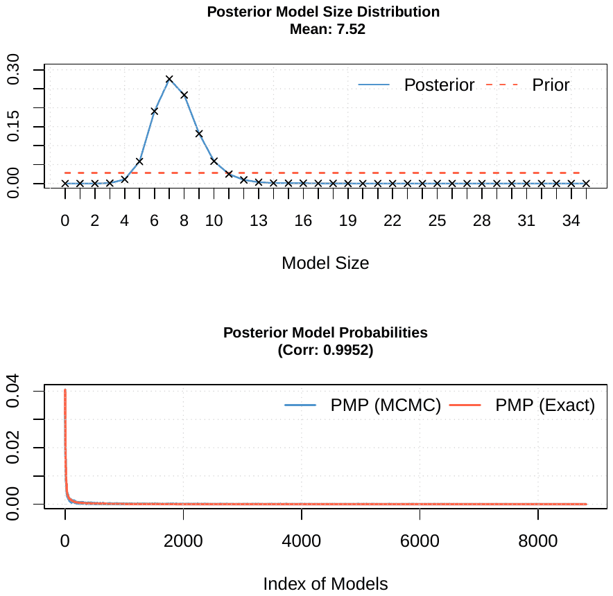
<figcaption><b>Figure S3.</b> Model size and convergence of the baseline BMA estimation</figcaption>
</figure>
<figure>
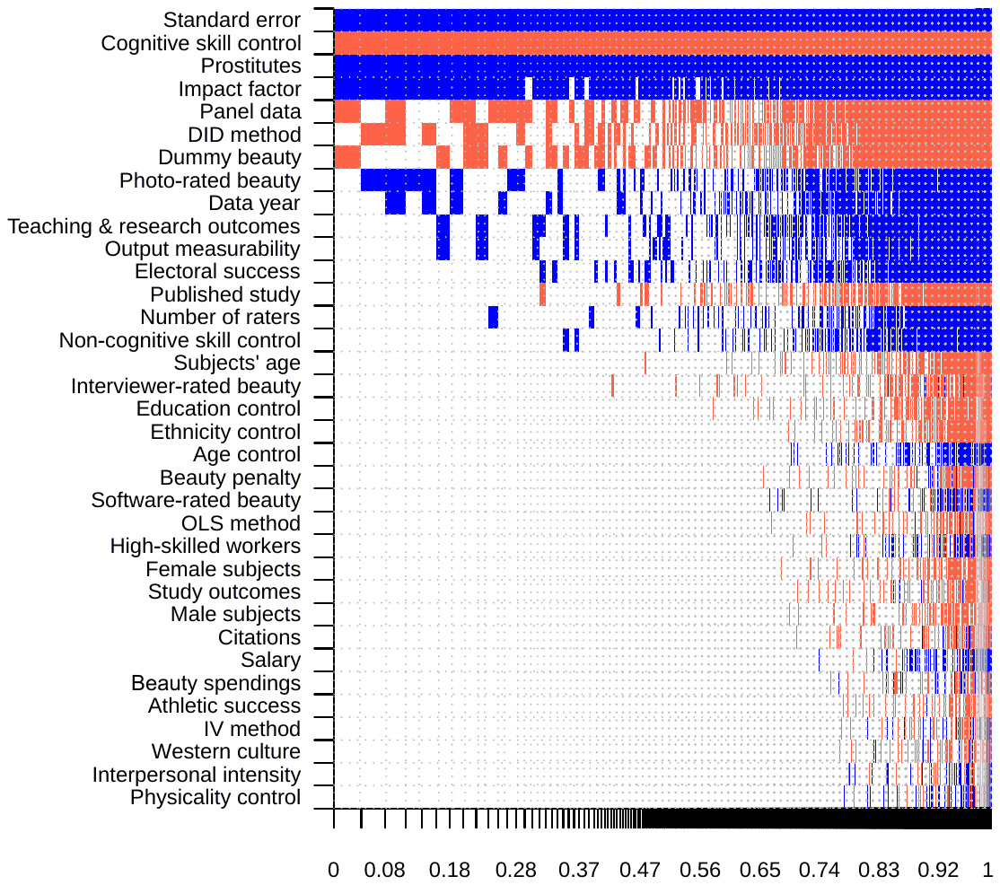
<figcaption><b>Figure S4.</b> Model inclusion in BMA (BRIC and random priors) Notes: On the vertical axis the explanatory variables are ranked according to their posterior inclusion probabilities from the highest at the top to the lowest at the bottom. The horizontal axis shows the values of cumulative posterior model probability. Blue color (darker in grayscale) = the estimated parameter of a corresponding explanatory variable is positive. Red color (lighter in grayscale) = the estimated parameter of a corresponding explanatory variable is negative. No color = the corresponding explanatory variable is not included in the model. Numerical results are reported in Table S12. All variables are described in Table S10.</figcaption>
</figure>
<div class="table-scroll">
<table>
<caption><b>Table S12.</b> Why reported beauty premiums vary (robustness checks)</caption>
<thead><tr><th scope="col">Response variable: Beauty premium</th><th scope="col">Bayesian model averaging (BRIC and random priors): P. mean</th><th scope="col">Bayesian model averaging (BRIC and random priors): P. SD</th><th scope="col">Bayesian model averaging (BRIC and random priors): PIP</th><th scope="col">Ordinary least squares (only for PIP &gt; 0.5): Mean</th><th scope="col">Ordinary least squares (only for PIP &gt; 0.5): SE</th><th scope="col">Ordinary least squares (only for PIP &gt; 0.5): p-value</th></tr></thead>
<tbody>
<tr><th scope="row">Constant</th><td class="num">2.164</td><td>NA</td><td class="num">1.000</td><td class="num">4.326</td><td class="num">1.728</td><td class="num">0.012</td></tr>
<tr><th scope="row">Standard error</th><td class="num">0.430</td><td class="num">0.043</td><td class="num">1.000</td><td class="num">0.422</td><td class="num">0.112</td><td class="num">0.000</td></tr>
<tr><th scope="row"><i>Measurement of beauty</i></th><td></td><td></td><td></td><td></td><td></td><td></td></tr>
<tr><th scope="row">Interviewer-rated beauty</th><td class="num">-0.035</td><td class="num">0.206</td><td class="num">0.037</td><td></td><td></td><td></td></tr>
<tr><th scope="row">Photo-rated beauty</th><td class="num">0.492</td><td class="num">0.715</td><td class="num">0.353</td><td></td><td></td><td></td></tr>
<tr><th scope="row">Software-rated beauty</th><td class="num">0.007</td><td class="num">0.122</td><td class="num">0.011</td><td></td><td></td><td></td></tr>
<tr><th scope="row">Dummy beauty</th><td class="num">-0.559</td><td class="num">0.690</td><td class="num">0.437</td><td></td><td></td><td></td></tr>
<tr><th scope="row">Beauty penalty</th><td class="num">-0.008</td><td class="num">0.094</td><td class="num">0.013</td><td></td><td></td><td></td></tr>
<tr><th scope="row">Number of raters</th><td class="num">0.043</td><td class="num">0.130</td><td class="num">0.114</td><td></td><td></td><td></td></tr>
<tr><th scope="row"><i>Measurement of success</i></th><td></td><td></td><td></td><td></td><td></td><td></td></tr>
<tr><th scope="row">Earnings</th><td class="num">0.002</td><td class="num">0.056</td><td class="num">0.007</td><td></td><td></td><td></td></tr>
<tr><th scope="row">Study outcomes</th><td class="num">-0.006</td><td class="num">0.091</td><td class="num">0.009</td><td></td><td></td><td></td></tr>
<tr><th scope="row">Teaching &amp; research outcomes</th><td class="num">0.545</td><td class="num">0.995</td><td class="num">0.261</td><td></td><td></td><td></td></tr>
<tr><th scope="row">Athletic success</th><td class="num">-0.004</td><td class="num">0.097</td><td class="num">0.006</td><td></td><td></td><td></td></tr>
<tr><th scope="row">Electoral success</th><td class="num">0.567</td><td class="num">1.254</td><td class="num">0.195</td><td></td><td></td><td></td></tr>
<tr><th scope="row"><i>Data characteristics</i></th><td></td><td></td><td></td><td></td><td></td><td></td></tr>
<tr><th scope="row">Male subjects</th><td class="num">-0.004</td><td class="num">0.056</td><td class="num">0.009</td><td></td><td></td><td></td></tr>
<tr><th scope="row">Female subjects</th><td class="num">-0.004</td><td class="num">0.060</td><td class="num">0.010</td><td></td><td></td><td></td></tr>
<tr><th scope="row">Subjects' age</th><td class="num">-0.043</td><td class="num">0.246</td><td class="num">0.039</td><td></td><td></td><td></td></tr>
<tr><th scope="row">High-skilled workers</th><td class="num">0.000</td><td class="num">0.078</td><td class="num">0.010</td><td></td><td></td><td></td></tr>
<tr><th scope="row">Prostitutes</th><td class="num">4.910</td><td class="num">1.076</td><td class="num">0.999</td><td class="num">4.170</td><td class="num">1.652</td><td class="num">0.012</td></tr>
<tr><th scope="row">Interpersonal intensity</th><td class="num">0.000</td><td class="num">0.065</td><td class="num">0.005</td><td></td><td></td><td></td></tr>
<tr><th scope="row">Output measurability</th><td class="num">0.852</td><td class="num">1.851</td><td class="num">0.198</td><td></td><td></td><td></td></tr>
<tr><th scope="row">Beauty spendings</th><td class="num">0.000</td><td class="num">0.010</td><td class="num">0.006</td><td></td><td></td><td></td></tr>
<tr><th scope="row">Western culture</th><td class="num">-0.001</td><td class="num">0.036</td><td class="num">0.005</td><td></td><td></td><td></td></tr>
<tr><th scope="row">Panel data</th><td class="num">-0.944</td><td class="num">1.016</td><td class="num">0.508</td><td class="num">-1.795</td><td class="num">1.739</td><td class="num">0.302</td></tr>
<tr><th scope="row">Data year</th><td class="num">0.256</td><td class="num">0.458</td><td class="num">0.268</td><td></td><td></td><td></td></tr>
<tr><th scope="row"><i>Estimation technique</i></th><td></td><td></td><td></td><td></td><td></td><td></td></tr>
<tr><th scope="row">OLS method</th><td class="num">-0.005</td><td class="num">0.077</td><td class="num">0.010</td><td></td><td></td><td></td></tr>
<tr><th scope="row">IV method</th><td class="num">-0.001</td><td class="num">0.058</td><td class="num">0.005</td><td></td><td></td><td></td></tr>
<tr><th scope="row">DID method</th><td class="num">-2.367</td><td class="num">2.869</td><td class="num">0.448</td><td></td><td></td><td></td></tr>
<tr><th scope="row">Age control</th><td class="num">0.011</td><td class="num">0.117</td><td class="num">0.014</td><td></td><td></td><td></td></tr>
<tr><th scope="row">Education control</th><td class="num">-0.016</td><td class="num">0.120</td><td class="num">0.024</td><td></td><td></td><td></td></tr>
<tr><th scope="row">Ethnicity control</th><td class="num">-0.010</td><td class="num">0.094</td><td class="num">0.017</td><td></td><td></td><td></td></tr>
<tr><th scope="row">Cognitive skill control</th><td class="num">-2.269</td><td class="num">0.444</td><td class="num">1.000</td><td class="num">-2.194</td><td class="num">0.707</td><td class="num">0.002</td></tr>
<tr><th scope="row">Non-cognitive skill control</th><td class="num">0.113</td><td class="num">0.374</td><td class="num">0.100</td><td></td><td></td><td></td></tr>
<tr><th scope="row">Physicality control</th><td class="num">0.000</td><td class="num">0.032</td><td class="num">0.005</td><td></td><td></td><td></td></tr>
<tr><th scope="row"><i>Publication characteristics</i></th><td></td><td></td><td></td><td></td><td></td><td></td></tr>
<tr><th scope="row">Published study</th><td class="num">-0.224</td><td class="num">0.640</td><td class="num">0.128</td><td></td><td></td><td></td></tr>
<tr><th scope="row">Impact factor</th><td class="num">0.260</td><td class="num">0.117</td><td class="num">0.908</td><td class="num">0.194</td><td class="num">0.185</td><td class="num">0.293</td></tr>
<tr><th scope="row">Citations</th><td class="num">-0.002</td><td class="num">0.030</td><td class="num">0.008</td><td></td><td></td><td></td></tr>
<tr><th scope="row">Studies</th><td class="num">67</td><td></td><td></td><td class="num">67</td><td></td><td></td></tr>
<tr><th scope="row">Observations</th><td class="num">1,159</td><td></td><td></td><td class="num">1,159</td><td></td><td></td></tr>
</tbody></table></div>
<p class="table-note">Notes: The posterior mean in BMA denotes the partial derivative of the reported beauty premium with respect to the corresponding study characteristic. For example, including a control for cognitive skills typically reduces the beauty premium by 2.3 percentage points. P. mean = posterior mean, P. SD = posterior standard deviation, PIP = posterior inclusion probability, SE = standard error. BMA employs the BRIC g-prior<sup class="cite"><a href="#ref-25">25</a></sup> and the beta-binomial model prior<sup class="cite"><a href="#ref-26">26</a></sup>. The frequentist check only includes variables with PIP above 0.5; standard errors clustered at the study level. All variables are described in Table S10. Technical details and diagnostics of the BMA exercise are available in Table S13 and Figure S5.</p>
<div class="table-scroll">
<table>
<caption><b>Table S13.</b> Diagnostics of the alternative BMA estimation (BRIC and random priors)</caption>
<thead><tr><th scope="col"><i>Mean no. regressors</i></th><th scope="col"><i>Draws</i></th><th scope="col"><i>Burn-ins</i></th><th scope="col"><i>Time</i></th><th scope="col"><i>No. models visited</i></th></tr></thead>
<tbody>
<tr><th scope="row">7.299</th><td><math class="inl" xmlns="http://www.w3.org/1998/Math/MathML" display="inline"><mrow><mn>3</mn><mo>&#x000B7;</mo><msup><mn>10</mn><mn>5</mn></msup></mrow></math></td><td><math class="inl" xmlns="http://www.w3.org/1998/Math/MathML" display="inline"><mrow><mn>1</mn><mo>&#x000B7;</mo><msup><mn>10</mn><mn>5</mn></msup></mrow></math></td><td>1.78 mins</td><td class="num">49,684</td></tr>
<tr><th scope="row"><i>Modelspace</i></th><td><i>Visited</i></td><td><i>Topmodels</i></td><td><i>Corr PMP</i></td><td><i>No. obs.</i></td></tr>
<tr><th scope="row"><math class="inl" xmlns="http://www.w3.org/1998/Math/MathML" display="inline"><mrow><mn>3.4</mn><mo>&#x000B7;</mo><msup><mn>10</mn><mrow><mn>10</mn></mrow></msup></mrow></math></th><td class="num">0.01%</td><td class="num">100%</td><td class="num">0.9944</td><td class="num">1,159</td></tr>
<tr><th scope="row"><i>Model prior</i></th><td><i>g-prior</i></td><td><i>Shrinkage-stats</i></td><td></td><td></td></tr>
<tr><th scope="row">Random / 17.5</th><td>BRIC</td><td>Av = 0.9992</td><td></td><td></td></tr>
</tbody></table></div>
<p class="table-note">Notes: The specification uses the BRIC g-prior<sup class="cite"><a href="#ref-25">25</a></sup> and the beta-binomial model prior<sup class="cite"><a href="#ref-26">26</a></sup>.</p>
<figure>
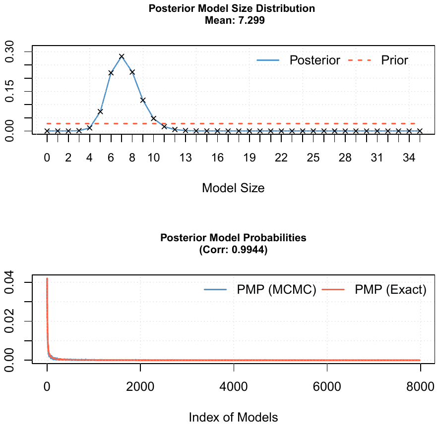
<figcaption><b>Figure S5.</b> Model size and convergence of the alternative BMA estimation (BRIC and random priors)</figcaption>
</figure>
<figure>
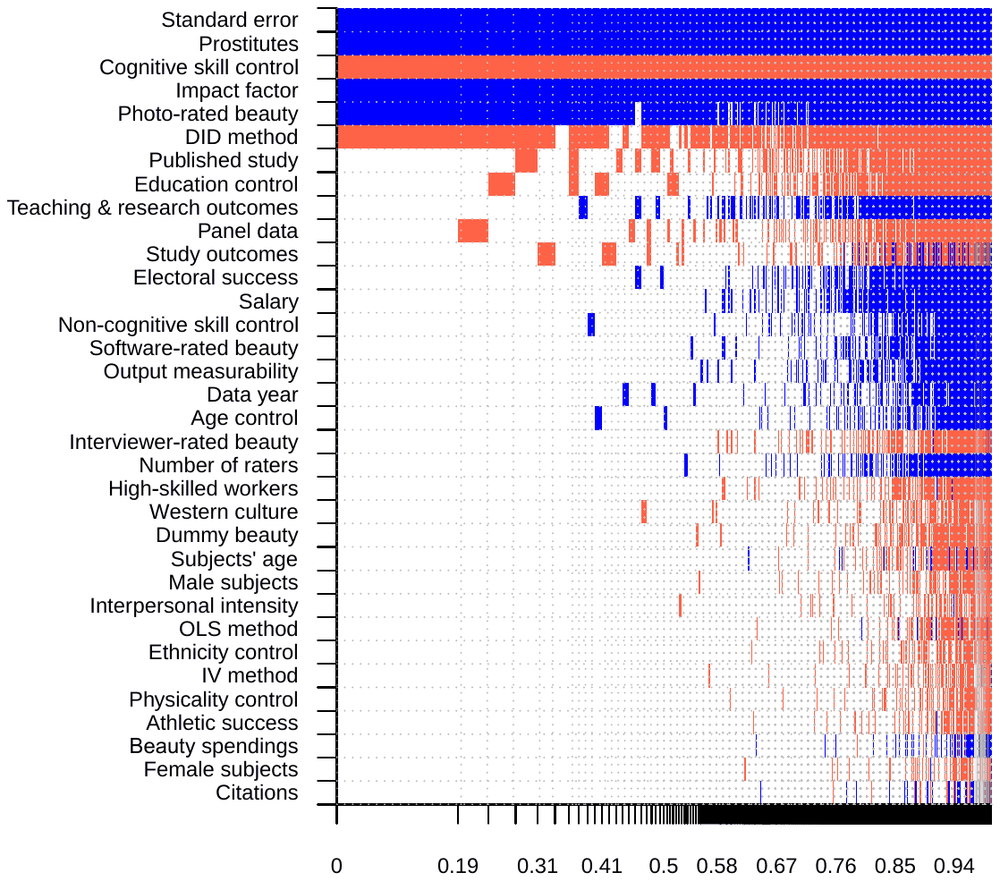
<figcaption><b>Figure S6.</b> Model inclusion in BMA (beauty penalties excluded) Notes: We exclude estimates that focus on the effect of below-average looks. On the vertical axis the explanatory variables are ranked according to their posterior inclusion probabilities from the highest at the top to the lowest at the bottom. The horizontal axis shows the values of cumulative posterior model probability. Blue color (darker in grayscale) = the estimated parameter of a corresponding explanatory variable is positive. Red color (lighter in grayscale) = the estimated parameter of a corresponding explanatory variable is negative. No color = the corresponding explanatory variable is not included in the model. Numerical results are reported in Table S14. All variables are described in Table S10.</figcaption>
</figure>
<div class="table-scroll">
<table>
<caption><b>Table S14.</b> Why reported beauty premiums vary (penalties excluded)</caption>
<thead><tr><th scope="col">Response variable: Beauty premium</th><th scope="col">Bayesian model averaging (UIP and dilution priors)</th><th scope="col"></th><th scope="col"></th><th scope="col">Ordinary least squares (only for PIP &gt; 0.5)</th><th scope="col"></th><th scope="col"></th></tr></thead>
<tbody>
<tr><th scope="row"></th><td>P. mean</td><td>P. SD</td><td>PIP</td><td>Mean</td><td>SE</td><td>p-value</td></tr>
<tr><th scope="row">Constant</th><td class="num">2.079</td><td>NA</td><td class="num">1.000</td><td class="num">1.695</td><td class="num">0.995</td><td class="num">0.088</td></tr>
<tr><th scope="row">Standard error</th><td class="num">0.497</td><td class="num">0.046</td><td class="num">1.000</td><td class="num">0.502</td><td class="num">0.135</td><td class="num">0.000</td></tr>
<tr><th scope="row"><i>Measurement of beauty</i></th><td></td><td></td><td></td><td></td><td></td><td></td></tr>
<tr><th scope="row">Interviewer-rated beauty</th><td class="num">-0.073</td><td class="num">0.363</td><td class="num">0.050</td><td></td><td></td><td></td></tr>
<tr><th scope="row">Photo-rated beauty</th><td class="num">1.825</td><td class="num">0.775</td><td class="num">0.900</td><td class="num">2.199</td><td class="num">0.969</td><td class="num">0.023</td></tr>
<tr><th scope="row">Software-rated beauty</th><td class="num">0.132</td><td class="num">0.643</td><td class="num">0.055</td><td></td><td></td><td></td></tr>
<tr><th scope="row">Dummy beauty</th><td class="num">-0.019</td><td class="num">0.143</td><td class="num">0.025</td><td></td><td></td><td></td></tr>
<tr><th scope="row">Number of raters</th><td class="num">0.018</td><td class="num">0.092</td><td class="num">0.049</td><td></td><td></td><td></td></tr>
<tr><th scope="row"><i>Measurement of success</i></th><td></td><td></td><td></td><td></td><td></td><td></td></tr>
<tr><th scope="row">Earnings</th><td class="num">0.225</td><td class="num">0.729</td><td class="num">0.119</td><td></td><td></td><td></td></tr>
<tr><th scope="row">Study outcomes</th><td class="num">-0.147</td><td class="num">0.677</td><td class="num">0.129</td><td></td><td></td><td></td></tr>
<tr><th scope="row">Teaching &amp; research outcomes</th><td class="num">0.514</td><td class="num">1.122</td><td class="num">0.219</td><td></td><td></td><td></td></tr>
<tr><th scope="row">Athletic success</th><td class="num">-0.014</td><td class="num">0.209</td><td class="num">0.011</td><td></td><td></td><td></td></tr>
<tr><th scope="row">Electoral success</th><td class="num">0.399</td><td class="num">1.213</td><td class="num">0.121</td><td></td><td></td><td></td></tr>
<tr><th scope="row"><i>Data characteristics</i></th><td></td><td></td><td></td><td></td><td></td><td></td></tr>
<tr><th scope="row">Male subjects</th><td class="num">-0.010</td><td class="num">0.092</td><td class="num">0.018</td><td></td><td></td><td></td></tr>
<tr><th scope="row">Female subjects</th><td class="num">-0.002</td><td class="num">0.041</td><td class="num">0.007</td><td></td><td></td><td></td></tr>
<tr><th scope="row">Subjects’ age</th><td class="num">-0.025</td><td class="num">0.218</td><td class="num">0.023</td><td></td><td></td><td></td></tr>
<tr><th scope="row">High-skilled workers</th><td class="num">-0.057</td><td class="num">0.332</td><td class="num">0.039</td><td></td><td></td><td></td></tr>
<tr><th scope="row">Prostitutes</th><td class="num">6.361</td><td class="num">0.976</td><td class="num">1.000</td><td class="num">6.521</td><td class="num">1.871</td><td class="num">0.000</td></tr>
<tr><th scope="row">Interpersonal intensity</th><td class="num">-0.017</td><td class="num">0.173</td><td class="num">0.015</td><td></td><td></td><td></td></tr>
<tr><th scope="row">Output measurability</th><td class="num">0.188</td><td class="num">0.891</td><td class="num">0.055</td><td></td><td></td><td></td></tr>
<tr><th scope="row">Beauty spendings</th><td class="num">0.000</td><td class="num">0.011</td><td class="num">0.007</td><td></td><td></td><td></td></tr>
<tr><th scope="row">Western culture</th><td class="num">-0.026</td><td class="num">0.167</td><td class="num">0.031</td><td></td><td></td><td></td></tr>
<tr><th scope="row">Panel data</th><td class="num">-0.261</td><td class="num">0.621</td><td class="num">0.174</td><td></td><td></td><td></td></tr>
<tr><th scope="row">Data year</th><td class="num">0.039</td><td class="num">0.185</td><td class="num">0.054</td><td></td><td></td><td></td></tr>
<tr><th scope="row"><i>Estimation technique</i></th><td></td><td></td><td></td><td></td><td></td><td></td></tr>
<tr><th scope="row">OLS method</th><td class="num">-0.011</td><td class="num">0.131</td><td class="num">0.015</td><td></td><td></td><td></td></tr>
<tr><th scope="row">IV method</th><td class="num">-0.010</td><td class="num">0.131</td><td class="num">0.012</td><td></td><td></td><td></td></tr>
<tr><th scope="row">DID method</th><td class="num">-4.863</td><td class="num">2.851</td><td class="num">0.805</td><td class="num">-6.361</td><td class="num">2.472</td><td class="num">0.010</td></tr>
<tr><th scope="row">Age control</th><td class="num">0.064</td><td class="num">0.313</td><td class="num">0.051</td><td></td><td></td><td></td></tr>
<tr><th scope="row">Education control</th><td class="num">-0.265</td><td class="num">0.527</td><td class="num">0.233</td><td></td><td></td><td></td></tr>
<tr><th scope="row">Ethnicity control</th><td class="num">-0.006</td><td class="num">0.079</td><td class="num">0.013</td><td></td><td></td><td></td></tr>
<tr><th scope="row">Cognitive skill control</th><td class="num">-3.271</td><td class="num">0.479</td><td class="num">1.000</td><td class="num">-3.542</td><td class="num">0.799</td><td class="num">0.000</td></tr>
<tr><th scope="row">Non-cognitive skill control</th><td class="num">0.062</td><td class="num">0.277</td><td class="num">0.060</td><td></td><td></td><td></td></tr>
<tr><th scope="row">Physicality control</th><td class="num">-0.005</td><td class="num">0.071</td><td class="num">0.012</td><td></td><td></td><td></td></tr>
<tr><th scope="row"><i>Publication characteristics</i></th><td></td><td></td><td></td><td></td><td></td><td></td></tr>
<tr><th scope="row">Published study</th><td class="num">-0.447</td><td class="num">0.879</td><td class="num">0.238</td><td></td><td></td><td></td></tr>
<tr><th scope="row">Impact factor</th><td class="num">0.375</td><td class="num">0.095</td><td class="num">0.997</td><td class="num">0.347</td><td class="num">0.193</td><td class="num">0.072</td></tr>
<tr><th scope="row">Citations</th><td class="num">0.000</td><td class="num">0.022</td><td class="num">0.007</td><td></td><td></td><td></td></tr>
<tr><th scope="row">Studies</th><td class="num">67</td><td></td><td></td><td class="num">67</td><td></td><td></td></tr>
<tr><th scope="row">Observations</th><td class="num">954</td><td></td><td></td><td class="num">954</td><td></td><td></td></tr>
</tbody></table></div>
<p class="table-note">Notes: We exclude estimates that focus on the effect of below-average looks. The posterior mean in BMA denotes the partial derivative of the reported beauty premium with respect to the corresponding study characteristic. For example, including a control for cognitive skills typically reduces the beauty premium by 3.3 percentage points. P. mean = posterior mean, P. SD = posterior standard deviation, PIP = posterior inclusion probability, SE = standard error. BMA employs the BRIC g-prior<sup class="cite"><a href="#ref-25">25</a></sup> and the beta-binomial model prior<sup class="cite"><a href="#ref-26">26</a></sup>. The frequentist check only includes variables with PIP above 0.5; standard errors clustered at the study level. All variables are described in Table S10. Technical details and diagnostics of the BMA exercise are available in Table S15 and Figure S7.</p>
<div class="table-scroll">
<table>
<caption><b>Table S15.</b> Diagnostics of the BMA estimation (beauty penalties excluded)</caption>
<thead><tr><th scope="col">Mean no. regressors</th><th scope="col">Draws</th><th scope="col">Burn-ins</th><th scope="col">Time</th><th scope="col">No. models visited</th></tr></thead>
<tbody>
<tr><th scope="row">8.0085</th><td><math class="inl" xmlns="http://www.w3.org/1998/Math/MathML" display="inline"><mrow><mn>3</mn><mo>&#x000B7;</mo><msup><mn>10</mn><mn>5</mn></msup></mrow></math></td><td><math class="inl" xmlns="http://www.w3.org/1998/Math/MathML" display="inline"><mrow><mn>1</mn><mo>&#x000B7;</mo><msup><mn>10</mn><mn>5</mn></msup></mrow></math></td><td>1.72 mins</td><td class="num">44,136</td></tr>
<tr><th scope="row"><i>Modelspace</i></th><td><i>Visited</i></td><td><i>Topmodels</i></td><td><i>Corr PMP</i></td><td><i>No. obs.</i></td></tr>
<tr><th scope="row"><math class="inl" xmlns="http://www.w3.org/1998/Math/MathML" display="inline"><mrow><mn>1.7</mn><mo>&#x000B7;</mo><msup><mn>10</mn><mn>9</mn></msup></mrow></math></th><td class="num">0.03%</td><td class="num">100%</td><td class="num">0.9993</td><td class="num">954</td></tr>
<tr><th scope="row"><i>Model prior</i></th><td><i>g-prior</i></td><td><i>Shrinkage-stats</i></td><td></td><td></td></tr>
<tr><th scope="row">Random / 17</th><td>UIP</td><td>Av = 0.999</td><td></td><td></td></tr>
</tbody></table></div>
<p class="table-note">Notes: We employ the combination of the unit information prior recommended by Eicher et al.<sup class="cite"><a href="#ref-27">27</a></sup> and dilution prior suggested by George<sup class="cite"><a href="#ref-29">29</a></sup>, which accounts for collinearity.</p>
<figure>
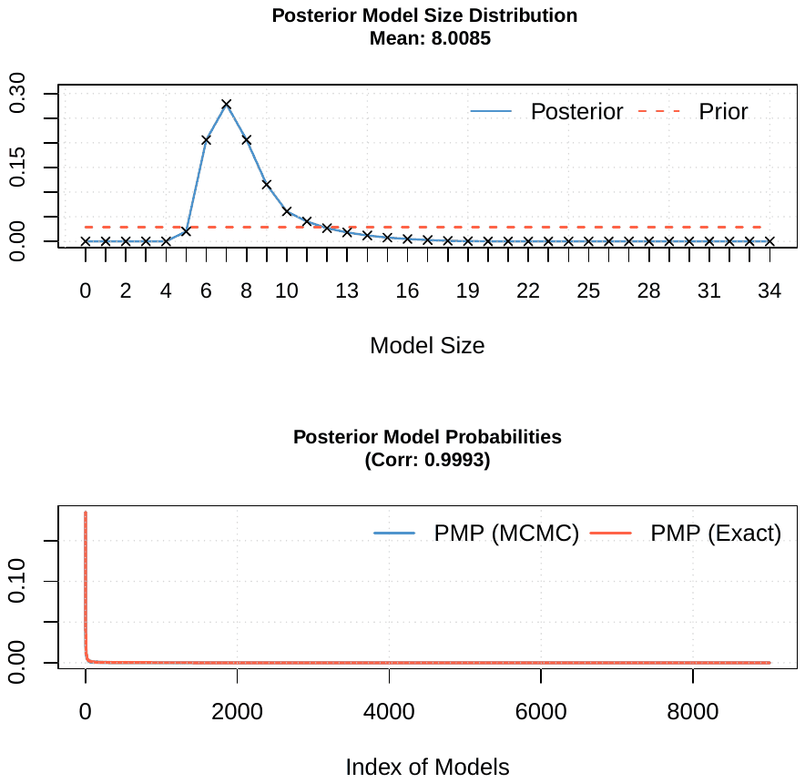
<figcaption><b>Figure S7.</b> Model size and convergence of the BMA estimation (beauty penalties excluded)</figcaption>
</figure>
<div class="table-scroll">
<table>
<caption><b>Table S16.</b> Robust Bayesian meta-analysis (RoBMA), bias adjustment, full results</caption>
<thead><tr><th scope="col">Sample</th><th scope="col">Obs</th><th scope="col">Clust</th><th scope="col">Effect</th><th scope="col">lCrI</th><th scope="col">uCrI</th><th scope="col">τ<sub>Effect</sub></th><th scope="col">τ<sub>lCrI</sub></th><th scope="col">τ<sub>uCrI</sub></th><th scope="col">BF10</th><th scope="col">BFhet</th><th scope="col">BFbias</th><th scope="col">BFmod</th></tr></thead>
<tbody>
<tr><th scope="row"><i>Full sample (1,159 observations)</i></th><td></td><td></td><td></td><td></td><td></td><td></td><td></td><td></td><td></td><td></td><td></td><td></td></tr>
<tr><th scope="row">Full sample</th><td class="num">1,159</td><td>–</td><td class="num">0.21</td><td class="num">0.00</td><td class="num">1.27</td><td class="num">4.23</td><td class="num">3.88</td><td class="num">4.55</td><td class="num">0.32</td><td>∞</td><td>∞</td><td>–</td></tr>
<tr><th scope="row">Full sample (3lvl, studies)</th><td class="num">1,159</td><td class="num">67</td><td class="num">3.13</td><td class="num">2.05</td><td class="num">4.25</td><td class="num">4.53</td><td class="num">3.87</td><td class="num">5.35</td><td>∞</td><td>∞</td><td>∞</td><td>–</td></tr>
<tr><th scope="row">Full sample (3lvl, database)</th><td class="num">1,159</td><td class="num">63</td><td class="num">2.88</td><td class="num">1.70</td><td class="num">4.03</td><td class="num">4.78</td><td class="num">4.11</td><td class="num">5.62</td><td class="num">19,999</td><td>∞</td><td>∞</td><td>–</td></tr>
<tr><th scope="row"><i>Subsample excluding prostitutes</i></th><td></td><td></td><td></td><td></td><td></td><td></td><td></td><td></td><td></td><td></td><td></td><td></td></tr>
<tr><th scope="row">No prostitutes</th><td class="num">1,104</td><td>–</td><td class="num">0.06</td><td class="num">0.00</td><td class="num">0.85</td><td class="num">3.87</td><td class="num">3.57</td><td class="num">4.16</td><td class="num">0.10</td><td>∞</td><td>∞</td><td>–</td></tr>
<tr><th scope="row">No prostitutes (3lvl)</th><td class="num">1,104</td><td class="num">63</td><td class="num">2.73</td><td class="num">1.69</td><td class="num">3.77</td><td class="num">4.32</td><td class="num">3.67</td><td class="num">5.13</td><td>∞</td><td>∞</td><td>∞</td><td>–</td></tr>
<tr><th scope="row"><i>Standardized effect size: change in outcome (SD units) per 1-SD increase in beauty</i></th><td></td><td></td><td></td><td></td><td></td><td></td><td></td><td></td><td></td><td></td><td></td><td></td></tr>
<tr><th scope="row">Standardized effect</th><td class="num">1,000</td><td>–</td><td class="num">0.02</td><td class="num">0.00</td><td class="num">0.04</td><td class="num">0.08</td><td class="num">0.07</td><td class="num">0.09</td><td class="num">16</td><td>∞</td><td>∞</td><td>–</td></tr>
<tr><th scope="row">Standardized effect (3lvl)</th><td class="num">1,000</td><td class="num">62</td><td class="num">0.05</td><td class="num">0.03</td><td class="num">0.07</td><td class="num">0.09</td><td class="num">0.08</td><td class="num">0.11</td><td>∞</td><td>∞</td><td>∞</td><td>–</td></tr>
<tr><th scope="row"><i>Industry</i></th><td></td><td></td><td></td><td></td><td></td><td></td><td></td><td></td><td></td><td></td><td></td><td></td></tr>
<tr><th scope="row">Industry</th><td class="num">312</td><td>–</td><td class="num">3.16</td><td class="num">2.54</td><td class="num">3.79</td><td class="num">2.61</td><td class="num">2.17</td><td class="num">3.10</td><td>∞</td><td>∞</td><td>∞</td><td>∞</td></tr>
<tr><th scope="row">customer services</th><td class="num">57</td><td>–</td><td class="num">0.38</td><td class="num">-0.59</td><td class="num">1.34</td><td>–</td><td>–</td><td>–</td><td class="num">0.05</td><td>–</td><td>–</td><td>–</td></tr>
<tr><th scope="row">financial services</th><td class="num">34</td><td>–</td><td class="num">1.00</td><td class="num">-0.31</td><td class="num">2.32</td><td>–</td><td>–</td><td>–</td><td class="num">0.15</td><td>–</td><td>–</td><td>–</td></tr>
<tr><th scope="row">legal services</th><td class="num">31</td><td>–</td><td class="num">1.32</td><td class="num">0.16</td><td class="num">2.48</td><td>–</td><td>–</td><td>–</td><td class="num">0.53</td><td>–</td><td>–</td><td>–</td></tr>
<tr><th scope="row">political office</th><td class="num">37</td><td>–</td><td class="num">2.52</td><td class="num">1.47</td><td class="num">3.64</td><td>–</td><td>–</td><td>–</td><td>∞</td><td>–</td><td>–</td><td>–</td></tr>
<tr><th scope="row">professional sports</th><td class="num">56</td><td>–</td><td class="num">1.78</td><td class="num">0.45</td><td class="num">3.19</td><td>–</td><td>–</td><td>–</td><td class="num">1.49</td><td>–</td><td>–</td><td>–</td></tr>
<tr><th scope="row">scientific research</th><td class="num">42</td><td>–</td><td class="num">8.12</td><td class="num">6.45</td><td class="num">9.74</td><td>–</td><td>–</td><td>–</td><td>∞</td><td>–</td><td>–</td><td>–</td></tr>
<tr><th scope="row">sex industry</th><td class="num">55</td><td>–</td><td class="num">7.00</td><td class="num">5.90</td><td class="num">8.06</td><td>–</td><td>–</td><td>–</td><td>∞</td><td>–</td><td>–</td><td>–</td></tr>
<tr><th scope="row">Industry (3lvl)</th><td class="num">312</td><td class="num">27</td><td class="num">4.39</td><td class="num">0.00</td><td class="num">6.96</td><td class="num">5.41</td><td class="num">3.98</td><td class="num">7.51</td><td class="num">17</td><td>∞</td><td class="num">1,834</td><td class="num">0.11</td></tr>
<tr><th scope="row">customer services</th><td class="num">57</td><td class="num">7</td><td class="num">4.05</td><td class="num">0.00</td><td class="num">6.91</td><td>–</td><td>–</td><td>–</td><td class="num">1.50</td><td>–</td><td>–</td><td>–</td></tr>
<tr><th scope="row">financial services</th><td class="num">34</td><td class="num">6</td><td class="num">4.40</td><td class="num">0.00</td><td class="num">7.08</td><td>–</td><td>–</td><td>–</td><td class="num">73</td><td>–</td><td>–</td><td>–</td></tr>
<tr><th scope="row">legal services</th><td class="num">31</td><td class="num">1</td><td class="num">4.21</td><td class="num">0.00</td><td class="num">7.28</td><td>–</td><td>–</td><td>–</td><td class="num">3.83</td><td>–</td><td>–</td><td>–</td></tr>
<tr><th scope="row">political office</th><td class="num">37</td><td class="num">4</td><td class="num">4.36</td><td class="num">0.00</td><td class="num">7.17</td><td>–</td><td>–</td><td>–</td><td class="num">11</td><td>–</td><td>–</td><td>–</td></tr>
<tr><th scope="row">professional sports</th><td class="num">56</td><td class="num">5</td><td class="num">4.77</td><td class="num">0.00</td><td class="num">9.89</td><td>–</td><td>–</td><td>–</td><td class="num">90</td><td>–</td><td>–</td><td>–</td></tr>
<tr><th scope="row">scientific research</th><td class="num">42</td><td class="num">3</td><td class="num">4.15</td><td class="num">0.00</td><td class="num">6.97</td><td>–</td><td>–</td><td>–</td><td class="num">2.01</td><td>–</td><td>–</td><td>–</td></tr>
<tr><th scope="row">sex industry</th><td class="num">55</td><td class="num">4</td><td class="num">4.75</td><td class="num">0.00</td><td class="num">9.92</td><td>–</td><td>–</td><td>–</td><td class="num">46</td><td>–</td><td>–</td><td>–</td></tr>
<tr><th scope="row"><i>Occupation</i></th><td></td><td></td><td></td><td></td><td></td><td></td><td></td><td></td><td></td><td></td><td></td><td></td></tr>
<tr><th scope="row">Occupation</th><td class="num">1,086</td><td>–</td><td class="num">2.59</td><td class="num">2.01</td><td class="num">3.14</td><td class="num">3.20</td><td class="num">2.93</td><td class="num">3.50</td><td>∞</td><td>∞</td><td>∞</td><td>∞</td></tr>
<tr><th scope="row">athletes</th><td class="num">56</td><td>–</td><td class="num">2.11</td><td class="num">0.46</td><td class="num">3.74</td><td>–</td><td>–</td><td>–</td><td class="num">1.33</td><td>–</td><td>–</td><td>–</td></tr>
<tr><th scope="row">executives</th><td class="num">56</td><td>–</td><td class="num">3.61</td><td class="num">2.06</td><td class="num">5.14</td><td>–</td><td>–</td><td>–</td><td>∞</td><td>–</td><td>–</td><td>–</td></tr>
<tr><th scope="row">general pop.</th><td class="num">435</td><td>–</td><td class="num">1.54</td><td class="num">0.92</td><td class="num">2.13</td><td>–</td><td>–</td><td>–</td><td>∞</td><td>–</td><td>–</td><td>–</td></tr>
<tr><th scope="row">lawyers</th><td class="num">31</td><td>–</td><td class="num">0.46</td><td class="num">-1.05</td><td class="num">1.97</td><td>–</td><td>–</td><td>–</td><td class="num">0.07</td><td>–</td><td>–</td><td>–</td></tr>
<tr><th scope="row">politicians</th><td class="num">37</td><td>–</td><td class="num">2.35</td><td class="num">0.92</td><td class="num">3.79</td><td>–</td><td>–</td><td>–</td><td class="num">9.56</td><td>–</td><td>–</td><td>–</td></tr>
<tr><th scope="row">salespeople</th><td class="num">32</td><td>–</td><td class="num">-1.27</td><td class="num">-2.77</td><td class="num">0.26</td><td>–</td><td>–</td><td>–</td><td class="num">0.24</td><td>–</td><td>–</td><td>–</td></tr>
<tr><th scope="row">scientists</th><td class="num">42</td><td>–</td><td class="num">9.31</td><td class="num">7.51</td><td class="num">11.09</td><td>–</td><td>–</td><td>–</td><td>∞</td><td>–</td><td>–</td><td>–</td></tr>
<tr><th scope="row">prostitutes</th><td class="num">55</td><td>–</td><td class="num">7.79</td><td class="num">6.54</td><td class="num">9.00</td><td>–</td><td>–</td><td>–</td><td>∞</td><td>–</td><td>–</td><td>–</td></tr>
<tr><th scope="row">students</th><td class="num">233</td><td>–</td><td class="num">-1.52</td><td class="num">-2.30</td><td class="num">-0.75</td><td>–</td><td>–</td><td>–</td><td class="num">72</td><td>–</td><td>–</td><td>–</td></tr>
<tr><th scope="row">teachers</th><td class="num">109</td><td>–</td><td class="num">1.50</td><td class="num">0.54</td><td class="num">2.42</td><td>–</td><td>–</td><td>–</td><td class="num">3.76</td><td>–</td><td>–</td><td>–</td></tr>
<tr><th scope="row">Occupation (3lvl)</th><td class="num">1,086</td><td class="num">62</td><td class="num">3.47</td><td class="num">2.26</td><td class="num">4.68</td><td class="num">4.51</td><td class="num">3.68</td><td class="num">5.44</td><td>∞</td><td>∞</td><td>∞</td><td class="num">0.43</td></tr>
<tr><th scope="row">athletes</th><td class="num">56</td><td class="num">5</td><td class="num">4.27</td><td class="num">2.25</td><td class="num">9.17</td><td>–</td><td>–</td><td>–</td><td class="num">132</td><td>–</td><td>–</td><td>–</td></tr>
<tr><th scope="row">executives</th><td class="num">56</td><td class="num">10</td><td class="num">3.52</td><td class="num">2.10</td><td class="num">5.32</td><td>–</td><td>–</td><td>–</td><td class="num">93</td><td>–</td><td>–</td><td>–</td></tr>
<tr><th scope="row">general pop.</th><td class="num">435</td><td class="num">23</td><td class="num">3.64</td><td class="num">2.33</td><td class="num">5.23</td><td>–</td><td>–</td><td>–</td><td>∞</td><td>–</td><td>–</td><td>–</td></tr>
<tr><th scope="row">lawyers</th><td class="num">31</td><td class="num">1</td><td class="num">2.87</td><td class="num">-3.20</td><td class="num">6.26</td><td>–</td><td>–</td><td>–</td><td class="num">1.09</td><td>–</td><td>–</td><td>–</td></tr>
<tr><th scope="row">politicians</th><td class="num">37</td><td class="num">4</td><td class="num">3.66</td><td class="num">1.75</td><td class="num">6.70</td><td>–</td><td>–</td><td>–</td><td class="num">7.42</td><td>–</td><td>–</td><td>–</td></tr>
<tr><th scope="row">salespeople</th><td class="num">32</td><td class="num">5</td><td class="num">3.15</td><td class="num">0.75</td><td class="num">4.72</td><td>–</td><td>–</td><td>–</td><td class="num">1.93</td><td>–</td><td>–</td><td>–</td></tr>
<tr><th scope="row">scientists</th><td class="num">42</td><td class="num">3</td><td class="num">3.72</td><td class="num">1.55</td><td class="num">7.33</td><td>–</td><td>–</td><td>–</td><td class="num">5.02</td><td>–</td><td>–</td><td>–</td></tr>
<tr><th scope="row">prostitutes</th><td class="num">55</td><td class="num">4</td><td class="num">4.95</td><td class="num">2.34</td><td class="num">10.86</td><td>–</td><td>–</td><td>–</td><td>∞</td><td>–</td><td>–</td><td>–</td></tr>
<tr><th scope="row">students</th><td class="num">233</td><td class="num">9</td><td class="num">2.32</td><td class="num">-1.60</td><td class="num">4.46</td><td>–</td><td>–</td><td>–</td><td class="num">0.24</td><td>–</td><td>–</td><td>–</td></tr>
<tr><th scope="row">teachers</th><td class="num">109</td><td class="num">8</td><td class="num">2.56</td><td class="num">-1.06</td><td class="num">4.46</td><td>–</td><td>–</td><td>–</td><td class="num">0.36</td><td>–</td><td>–</td><td>–</td></tr>
<tr><th scope="row"><i>Gender</i></th><td></td><td></td><td></td><td></td><td></td><td></td><td></td><td></td><td></td><td></td><td></td><td></td></tr>
<tr><th scope="row">Gender of rated</th><td class="num">822</td><td>–</td><td class="num">0.79</td><td class="num">0.00</td><td class="num">1.79</td><td class="num">3.88</td><td class="num">3.49</td><td class="num">4.30</td><td class="num">2.16</td><td>∞</td><td>∞</td><td class="num">0.03</td></tr>
<tr><th scope="row">female</th><td class="num">447</td><td>–</td><td class="num">0.79</td><td class="num">0.00</td><td class="num">1.79</td><td>–</td><td>–</td><td>–</td><td class="num">0.72</td><td>–</td><td>–</td><td>–</td></tr>
<tr><th scope="row">male</th><td class="num">375</td><td>–</td><td class="num">0.79</td><td class="num">0.00</td><td class="num">1.79</td><td>–</td><td>–</td><td>–</td><td class="num">0.71</td><td>–</td><td>–</td><td>–</td></tr>
<tr><th scope="row">Gender of rated (3lvl)</th><td class="num">822</td><td class="num">53</td><td class="num">3.47</td><td class="num">2.27</td><td class="num">4.68</td><td class="num">4.41</td><td class="num">3.66</td><td class="num">5.38</td><td>∞</td><td>∞</td><td>∞</td><td class="num">0.71</td></tr>
<tr><th scope="row">female</th><td class="num">447</td><td class="num">48</td><td class="num">3.33</td><td class="num">2.08</td><td class="num">4.60</td><td>–</td><td>–</td><td>–</td><td>∞</td><td>–</td><td>–</td><td>–</td></tr>
</tbody></table></div>
<div class="table-scroll">
<table class="continued">
<caption><b>Table S16 (continued).</b> Robust Bayesian meta-analysis (RoBMA), bias adjustment, full results</caption>
<thead><tr><th scope="col">Sample</th><th scope="col">Obs</th><th scope="col">Clust</th><th scope="col">Effect</th><th scope="col">lCrI</th><th scope="col">uCrI</th><th scope="col">τ<sub>Effect</sub></th><th scope="col">τ<sub>lCrI</sub></th><th scope="col">τ<sub>uCrI</sub></th><th scope="col">BF10</th><th scope="col">BFhet</th><th scope="col">BFbias</th><th scope="col">BFmod</th></tr></thead>
<tbody>
<tr><th scope="row">male</th><td class="num">375</td><td class="num">44</td><td class="num">3.61</td><td class="num">2.35</td><td class="num">4.88</td><td>–</td><td>–</td><td>–</td><td>∞</td><td>–</td><td>–</td><td>–</td></tr>
<tr><th scope="row"><i>Customer contact</i></th><td></td><td></td><td></td><td></td><td></td><td></td><td></td><td></td><td></td><td></td><td></td><td></td></tr>
<tr><th scope="row">Facing customer</th><td class="num">1,159</td><td>–</td><td class="num">0.04</td><td class="num">0.00</td><td class="num">0.74</td><td class="num">4.17</td><td class="num">3.89</td><td class="num">4.45</td><td class="num">0.07</td><td>∞</td><td>∞</td><td class="num">320.54</td></tr>
<tr><th scope="row">no customer contact</th><td class="num">318</td><td>–</td><td class="num">-1.13</td><td class="num">-1.68</td><td class="num">-0.23</td><td>–</td><td>–</td><td>–</td><td class="num">0.75</td><td>–</td><td>–</td><td>–</td></tr>
<tr><th scope="row">some customer contact</th><td class="num">401</td><td>–</td><td class="num">0.17</td><td class="num">-0.33</td><td class="num">0.86</td><td>–</td><td>–</td><td>–</td><td class="num">0.02</td><td>–</td><td>–</td><td>–</td></tr>
<tr><th scope="row">direct customer contact</th><td class="num">440</td><td>–</td><td class="num">1.09</td><td class="num">0.59</td><td class="num">1.76</td><td>–</td><td>–</td><td>–</td><td class="num">227</td><td>–</td><td>–</td><td>–</td></tr>
<tr><th scope="row">Facing customer (3lvl)</th><td class="num">1,159</td><td class="num">67</td><td class="num">3.01</td><td class="num">1.90</td><td class="num">4.11</td><td class="num">4.52</td><td class="num">3.85</td><td class="num">5.36</td><td>∞</td><td>∞</td><td>∞</td><td class="num">48.91</td></tr>
<tr><th scope="row">no customer contact</th><td class="num">318</td><td class="num">23</td><td class="num">0.89</td><td class="num">-0.62</td><td class="num">2.70</td><td>–</td><td>–</td><td>–</td><td class="num">0.11</td><td>–</td><td>–</td><td>–</td></tr>
<tr><th scope="row">some customer contact</th><td class="num">401</td><td class="num">19</td><td class="num">3.95</td><td class="num">2.46</td><td class="num">5.51</td><td>–</td><td>–</td><td>–</td><td>∞</td><td>–</td><td>–</td><td>–</td></tr>
<tr><th scope="row">direct customer contact</th><td class="num">440</td><td class="num">32</td><td class="num">4.19</td><td class="num">2.85</td><td class="num">5.49</td><td>–</td><td>–</td><td>–</td><td>∞</td><td>–</td><td>–</td><td>–</td></tr>
<tr><th scope="row"><i>Measurability of output/performance</i></th><td></td><td></td><td></td><td></td><td></td><td></td><td></td><td></td><td></td><td></td><td></td><td></td></tr>
<tr><th scope="row">Output measurability</th><td class="num">1,159</td><td>–</td><td class="num">0.19</td><td class="num">0.00</td><td class="num">1.27</td><td class="num">4.24</td><td class="num">3.88</td><td class="num">4.55</td><td class="num">0.29</td><td>∞</td><td>∞</td><td class="num">0.00</td></tr>
<tr><th scope="row">low output measurability</th><td class="num">135</td><td>–</td><td class="num">0.19</td><td class="num">0.00</td><td class="num">1.27</td><td>–</td><td>–</td><td>–</td><td class="num">0.48</td><td>–</td><td>–</td><td>–</td></tr>
<tr><th scope="row">mid output measurability</th><td class="num">274</td><td>–</td><td class="num">0.19</td><td class="num">0.00</td><td class="num">1.27</td><td>–</td><td>–</td><td>–</td><td class="num">0.44</td><td>–</td><td>–</td><td>–</td></tr>
<tr><th scope="row">high output measurability</th><td class="num">750</td><td>–</td><td class="num">0.19</td><td class="num">0.00</td><td class="num">1.27</td><td>–</td><td>–</td><td>–</td><td class="num">0.45</td><td>–</td><td>–</td><td>–</td></tr>
<tr><th scope="row">Output measurability dummy (3lvl)</th><td class="num">1,159</td><td class="num">67</td><td class="num">3.15</td><td class="num">2.07</td><td class="num">4.25</td><td class="num">4.52</td><td class="num">3.87</td><td class="num">5.32</td><td>∞</td><td>∞</td><td>∞</td><td class="num">0.01</td></tr>
<tr><th scope="row">low output measurability</th><td class="num">135</td><td class="num">6</td><td class="num">3.15</td><td class="num">2.06</td><td class="num">4.27</td><td>–</td><td>–</td><td>–</td><td>∞</td><td>–</td><td>–</td><td>–</td></tr>
<tr><th scope="row">mid output measurability</th><td class="num">274</td><td class="num">16</td><td class="num">3.15</td><td class="num">2.07</td><td class="num">4.26</td><td>–</td><td>–</td><td>–</td><td>∞</td><td>–</td><td>–</td><td>–</td></tr>
<tr><th scope="row">high output measurability</th><td class="num">750</td><td class="num">51</td><td class="num">3.15</td><td class="num">2.07</td><td class="num">4.25</td><td>–</td><td>–</td><td>–</td><td>∞</td><td>–</td><td>–</td><td>–</td></tr>
<tr><th scope="row"><i>Intensity of interpersonal interaction</i></th><td></td><td></td><td></td><td></td><td></td><td></td><td></td><td></td><td></td><td></td><td></td><td></td></tr>
<tr><th scope="row">Interpersonal intensity</th><td class="num">1,159</td><td>–</td><td class="num">0.86</td><td class="num">0.00</td><td class="num">1.89</td><td class="num">4.12</td><td class="num">3.77</td><td class="num">4.51</td><td class="num">2.12</td><td>∞</td><td>∞</td><td class="num">2.10</td></tr>
<tr><th scope="row">low interpersonal intensity</th><td class="num">180</td><td>–</td><td class="num">1.59</td><td class="num">0.00</td><td class="num">3.27</td><td>–</td><td>–</td><td>–</td><td class="num">2.67</td><td>–</td><td>–</td><td>–</td></tr>
<tr><th scope="row">mid interpersonal intensity</th><td class="num">519</td><td>–</td><td class="num">0.17</td><td class="num">-0.95</td><td class="num">1.07</td><td>–</td><td>–</td><td>–</td><td class="num">0.05</td><td>–</td><td>–</td><td>–</td></tr>
<tr><th scope="row">high interpersonal intensity</th><td class="num">460</td><td>–</td><td class="num">0.83</td><td class="num">0.00</td><td class="num">1.91</td><td>–</td><td>–</td><td>–</td><td class="num">0.21</td><td>–</td><td>–</td><td>–</td></tr>
<tr><th scope="row">Interpersonal intensity (3lvl)</th><td class="num">1,159</td><td class="num">67</td><td class="num">3.15</td><td class="num">2.07</td><td class="num">4.23</td><td class="num">4.53</td><td class="num">3.87</td><td class="num">5.34</td><td>∞</td><td>∞</td><td>∞</td><td class="num">0.02</td></tr>
<tr><th scope="row">low interpersonal intensity</th><td class="num">180</td><td class="num">17</td><td class="num">3.14</td><td class="num">2.03</td><td class="num">4.23</td><td>–</td><td>–</td><td>–</td><td>∞</td><td>–</td><td>–</td><td>–</td></tr>
<tr><th scope="row">mid interpersonal intensity</th><td class="num">519</td><td class="num">30</td><td class="num">3.16</td><td class="num">2.08</td><td class="num">4.24</td><td>–</td><td>–</td><td>–</td><td>∞</td><td>–</td><td>–</td><td>–</td></tr>
<tr><th scope="row">high interpersonal intensity</th><td class="num">460</td><td class="num">33</td><td class="num">3.16</td><td class="num">2.08</td><td class="num">4.24</td><td>–</td><td>–</td><td>–</td><td>∞</td><td>–</td><td>–</td><td>–</td></tr>
<tr><th scope="row"><i>Cognition sample 1: cognitive-skill control and non-cognitive-skill control</i></th><td></td><td></td><td></td><td></td><td></td><td></td><td></td><td></td><td></td><td></td><td></td><td></td></tr>
<tr><th scope="row">Cognition sample 1</th><td class="num">1,159</td><td>–</td><td class="num">0.74</td><td class="num">0.00</td><td class="num">1.63</td><td class="num">3.85</td><td class="num">3.52</td><td class="num">4.21</td><td class="num">2.19</td><td>∞</td><td>∞</td><td>∞</td></tr>
<tr><th scope="row">cognitive=0 &amp; noncognitive=0</th><td class="num">617</td><td>–</td><td class="num">1.64</td><td class="num">0.75</td><td class="num">2.45</td><td>–</td><td>–</td><td>–</td><td>∞</td><td>–</td><td>–</td><td>–</td></tr>
<tr><th scope="row">cognitive=0 &amp; noncognitive=1</th><td class="num">97</td><td>–</td><td class="num">3.26</td><td class="num">1.66</td><td class="num">4.74</td><td>–</td><td>–</td><td>–</td><td>∞</td><td>–</td><td>–</td><td>–</td></tr>
<tr><th scope="row">cognitive=1 &amp; noncognitive=0</th><td class="num">298</td><td>–</td><td class="num">-1.66</td><td class="num">-2.77</td><td class="num">-0.62</td><td>–</td><td>–</td><td>–</td><td class="num">9.95</td><td>–</td><td>–</td><td>–</td></tr>
<tr><th scope="row">cognitive=1 &amp; noncognitive=1</th><td class="num">147</td><td>–</td><td class="num">-0.26</td><td class="num">-1.60</td><td class="num">1.00</td><td>–</td><td>–</td><td>–</td><td class="num">0.06</td><td>–</td><td>–</td><td>–</td></tr>
<tr><th scope="row">Cognition sample 1 (3lvl)</th><td class="num">1,159</td><td class="num">67</td><td class="num">2.92</td><td class="num">1.85</td><td class="num">4.02</td><td class="num">4.41</td><td class="num">3.75</td><td class="num">5.22</td><td>∞</td><td>∞</td><td>∞</td><td class="num">3.18</td></tr>
<tr><th scope="row">cognitive=0 &amp; noncognitive=0</th><td class="num">617</td><td class="num">48</td><td class="num">3.53</td><td class="num">2.37</td><td class="num">4.67</td><td>–</td><td>–</td><td>–</td><td>∞</td><td>–</td><td>–</td><td>–</td></tr>
<tr><th scope="row">cognitive=0 &amp; noncognitive=1</th><td class="num">97</td><td class="num">10</td><td class="num">4.11</td><td class="num">2.42</td><td class="num">5.87</td><td>–</td><td>–</td><td>–</td><td>∞</td><td>–</td><td>–</td><td>–</td></tr>
<tr><th scope="row">cognitive=1 &amp; noncognitive=0</th><td class="num">298</td><td class="num">16</td><td class="num">2.03</td><td class="num">0.42</td><td class="num">3.82</td><td>–</td><td>–</td><td>–</td><td class="num">1.32</td><td>–</td><td>–</td><td>–</td></tr>
<tr><th scope="row">cognitive=1 &amp; noncognitive=1</th><td class="num">147</td><td class="num">15</td><td class="num">2.03</td><td class="num">0.36</td><td class="num">3.85</td><td>–</td><td>–</td><td>–</td><td class="num">1.13</td><td>–</td><td>–</td><td>–</td></tr>
<tr><th scope="row"><i>Cognition sample 2: objective cognitive measure and non-cognitive-skill control</i></th><td></td><td></td><td></td><td></td><td></td><td></td><td></td><td></td><td></td><td></td><td></td><td></td></tr>
<tr><th scope="row">Cognition sample 2</th><td class="num">383</td><td>–</td><td class="num">0.28</td><td class="num">0.00</td><td class="num">1.39</td><td class="num">2.33</td><td class="num">1.92</td><td class="num">2.75</td><td class="num">0.43</td><td>∞</td><td class="num">2,499</td><td class="num">1.79</td></tr>
<tr><th scope="row">objective=1 and noncognitive=0</th><td class="num">256</td><td>–</td><td class="num">-0.05</td><td class="num">-0.78</td><td class="num">1.02</td><td>–</td><td>–</td><td>–</td><td class="num">0.13</td><td>–</td><td>–</td><td>–</td></tr>
<tr><th scope="row">objective=1 and noncognitive=1</th><td class="num">127</td><td>–</td><td class="num">0.62</td><td class="num">0.00</td><td class="num">2.02</td><td>–</td><td>–</td><td>–</td><td class="num">0.70</td><td>–</td><td>–</td><td>–</td></tr>
<tr><th scope="row">Cognition sample 2 (3lvl)</th><td class="num">383</td><td class="num">19</td><td class="num">0.73</td><td class="num">0.00</td><td class="num">2.46</td><td class="num">2.65</td><td class="num">2.06</td><td class="num">3.51</td><td class="num">0.93</td><td>∞</td><td class="num">682</td><td class="num">0.05</td></tr>
<tr><th scope="row">objective=1 and noncognitive=0</th><td class="num">256</td><td class="num">12</td><td class="num">0.73</td><td class="num">0.00</td><td class="num">2.45</td><td>–</td><td>–</td><td>–</td><td class="num">0.32</td><td>–</td><td>–</td><td>–</td></tr>
<tr><th scope="row">objective=1 and noncognitive=1</th><td class="num">127</td><td class="num">10</td><td class="num">0.73</td><td class="num">0.00</td><td class="num">2.48</td><td>–</td><td>–</td><td>–</td><td class="num">0.33</td><td>–</td><td>–</td><td>–</td></tr>
<tr><th scope="row"><i>Cognition sample 3: objective cognitive measure or quasi-experimental method</i></th><td></td><td></td><td></td><td></td><td></td><td></td><td></td><td></td><td></td><td></td><td></td><td></td></tr>
<tr><th scope="row">objective=1 or quasi-exp=1</th><td class="num">395</td><td>–</td><td class="num">0.05</td><td class="num">0.00</td><td class="num">0.86</td><td class="num">2.36</td><td class="num">2.00</td><td class="num">2.74</td><td class="num">0.09</td><td>∞</td><td class="num">33,332</td><td>–</td></tr>
<tr><th scope="row">objective=1 or quasi-exp=1 (3lvl)</th><td class="num">395</td><td class="num">21</td><td class="num">0.49</td><td class="num">0.00</td><td class="num">2.10</td><td class="num">2.56</td><td class="num">2.01</td><td class="num">3.31</td><td class="num">0.58</td><td>∞</td><td class="num">682</td><td>–</td></tr>
<tr><th scope="row"><i>Earnings and productivity</i></th><td></td><td></td><td></td><td></td><td></td><td></td><td></td><td></td><td></td><td></td><td></td><td></td></tr>
<tr><th scope="row">Earnings</th><td class="num">1,159</td><td>–</td><td class="num">0.19</td><td class="num">0.00</td><td class="num">1.25</td><td class="num">4.23</td><td class="num">3.88</td><td class="num">4.55</td><td class="num">0.29</td><td>∞</td><td>∞</td><td class="num">0.17</td></tr>
<tr><th scope="row">earnings=0</th><td class="num">471</td><td>–</td><td class="num">0.14</td><td class="num">-0.49</td><td class="num">1.24</td><td>–</td><td>–</td><td>–</td><td class="num">0.14</td><td>–</td><td>–</td><td>–</td></tr>
<tr><th scope="row">earnings=1</th><td class="num">688</td><td>–</td><td class="num">0.24</td><td class="num">0.00</td><td class="num">1.30</td><td>–</td><td>–</td><td>–</td><td class="num">0.18</td><td>–</td><td>–</td><td>–</td></tr>
<tr><th scope="row">Earnings (3lvl)</th><td class="num">1,159</td><td class="num">67</td><td class="num">3.10</td><td class="num">2.03</td><td class="num">4.18</td><td class="num">4.50</td><td class="num">3.84</td><td class="num">5.33</td><td>∞</td><td>∞</td><td>∞</td><td class="num">0.43</td></tr>
<tr><th scope="row">earnings=0</th><td class="num">471</td><td class="num">29</td><td class="num">2.92</td><td class="num">1.53</td><td class="num">4.14</td><td>–</td><td>–</td><td>–</td><td class="num">170.00</td><td>–</td><td>–</td><td>–</td></tr>
<tr><th scope="row">earnings=1</th><td class="num">688</td><td class="num">43</td><td class="num">3.29</td><td class="num">2.11</td><td class="num">4.50</td><td>–</td><td>–</td><td>–</td><td>∞</td><td>–</td><td>–</td><td>–</td></tr>
</tbody></table></div>
<p class="table-note"><i>Notes</i>: This tables expands on the results described in Table 2. Obs denotes the number of estimates included in the analysis (or in the subgroup, when applicable). Clstr denotes the number of clusters (reported only when multi-level clustering is applied). Effect, lCrI, and uCrI refer to the model-averaged posterior mean effect size and its 95% credible interval. τ<sub>Effect</sub>, τ<sub>lCrI</sub>, and τ<sub>uCrI</sub> refer to the model-averaged total heterogeneity and its 95% credible interval; these are reported only at the analysis level (not for subgroups). BF denotes the Bayes factor; as a rule of thumb, <math class="inl" xmlns="http://www.w3.org/1998/Math/MathML" display="inline"><mrow><mi>B</mi><mi>F</mi><mo>&#x0003E;</mo><mn>10</mn></mrow></math> indicates strong evidence. BF10 tests for the presence of a non-zero effect; BFhet for the presence of heterogeneity; BFbias for publication bias; and BFmod for moderation (differences across subgroups). BFhet, BFbias, and BFmod are reported only at the overall analysis level. When BFmod &lt; 1, subgroup-specific estimates are partially pooled toward the overall effect; when BFmod → 0, subgroup estimates coincide with the overall estimate. Bayes factors reported as ∞ reflect numerical upper limits and indicate very strong evidence (<math class="inl" xmlns="http://www.w3.org/1998/Math/MathML" display="inline"><mrow><mi>B</mi><mi>F</mi><mo>&#x0003E;</mo><msup><mn>10</mn><mn>5</mn></msup></mrow></math>). RoBMA averages over models with and without a true association. When some probability is assigned to the null, the posterior is pulled toward zero and the 95% credible interval may start or end exactly at zero. This is expected behavior of spike-and-slab model averaging.</p>
<div class="table-scroll">
<table>
<caption><b>Table S17.</b> Robust Bayesian meta-analysis (RoBMA), full adjustment, full results</caption>
<thead><tr><th scope="col">Sample</th><th scope="col">Obs</th><th scope="col">Clust</th><th scope="col">Effect</th><th scope="col">lCrI</th><th scope="col">uCrI</th><th scope="col">τ<sub>Effect</sub></th><th scope="col">τ<sub>lCrI</sub></th><th scope="col">τ<sub>uCrI</sub></th><th scope="col">BF10</th><th scope="col">BFhet</th><th scope="col">BFbias</th><th scope="col">BFmod</th></tr></thead>
<tbody>
<tr><th scope="row"><i>Full sample (1,159 observations)</i></th><td></td><td></td><td></td><td></td><td></td><td></td><td></td><td></td><td></td><td></td><td></td><td></td></tr>
<tr><th scope="row">Full sample</th><td class="num">1,159</td><td>–</td><td class="num">-0.19</td><td class="num">-1.28</td><td class="num">0.00</td><td class="num">3.41</td><td class="num">3.15</td><td class="num">3.69</td><td class="num">0.29</td><td>∞</td><td>∞</td><td>–</td></tr>
<tr><th scope="row">Full sample (3lvl, studies)</th><td class="num">1,159</td><td class="num">67</td><td class="num">0.39</td><td class="num">0.00</td><td class="num">2.16</td><td class="num">4.18</td><td class="num">3.57</td><td class="num">4.95</td><td class="num">0.00</td><td>∞</td><td>∞</td><td>–</td></tr>
<tr><th scope="row">Full sample (3lvl, database)</th><td class="num">1,159</td><td class="num">63</td><td class="num">0.01</td><td class="num">0.00</td><td class="num">0.02</td><td class="num">4.39</td><td class="num">3.76</td><td class="num">5.18</td><td class="num">0.03</td><td>∞</td><td>∞</td><td>–</td></tr>
<tr><th scope="row"><i>Subsample excluding prostitutes</i></th><td></td><td></td><td></td><td></td><td></td><td></td><td></td><td></td><td></td><td></td><td></td><td></td></tr>
<tr><th scope="row">No prostitutes</th><td class="num">1,104</td><td>–</td><td class="num">-0.17</td><td class="num">-1.26</td><td class="num">0.00</td><td class="num">3.41</td><td class="num">3.15</td><td class="num">3.71</td><td class="num">0.00</td><td>∞</td><td>∞</td><td>–</td></tr>
<tr><th scope="row">No prostitutes (3lvl)</th><td class="num">1,104</td><td class="num">63</td><td class="num">0.44</td><td class="num">0.00</td><td class="num">2.33</td><td class="num">4.23</td><td class="num">3.61</td><td class="num">5.00</td><td class="num">0.44</td><td>∞</td><td>∞</td><td>–</td></tr>
<tr><th scope="row"><i>Standardized effect size: change in outcome (SD units) per 1-SD increase in beauty</i></th><td></td><td></td><td></td><td></td><td></td><td></td><td></td><td></td><td></td><td></td><td></td><td></td></tr>
<tr><th scope="row">Standardized effect</th><td class="num">1,000</td><td>–</td><td class="num">0.00</td><td class="num">-0.01</td><td class="num">0.00</td><td class="num">0.07</td><td class="num">0.06</td><td class="num">0.08</td><td class="num">0.10</td><td>∞</td><td>∞</td><td>–</td></tr>
<tr><th scope="row">Standardized effect (3lvl)</th><td class="num">1,000</td><td class="num">62</td><td class="num">0.02</td><td class="num">0.00</td><td class="num">0.05</td><td class="num">0.09</td><td class="num">0.08</td><td class="num">0.11</td><td class="num">1.58</td><td>∞</td><td>∞</td><td>–</td></tr>
<tr><th scope="row"><i>Industry</i></th><td></td><td></td><td></td><td></td><td></td><td></td><td></td><td></td><td></td><td></td><td></td><td></td></tr>
<tr><th scope="row">Industry</th><td class="num">312</td><td>–</td><td class="num">0.50</td><td class="num">0.00</td><td class="num">3.35</td><td class="num">2.63</td><td class="num">2.17</td><td class="num">3.24</td><td class="num">0.30</td><td>∞</td><td>∞</td><td>∞</td></tr>
<tr><th scope="row">customer services</th><td class="num">57</td><td>–</td><td class="num">-1.97</td><td class="num">-3.96</td><td class="num">1.32</td><td>–</td><td>–</td><td>–</td><td class="num">0.48</td><td>–</td><td>–</td><td>–</td></tr>
<tr><th scope="row">financial services</th><td class="num">34</td><td>–</td><td class="num">-1.65</td><td class="num">-3.51</td><td class="num">1.57</td><td>–</td><td>–</td><td>–</td><td class="num">0.43</td><td>–</td><td>–</td><td>–</td></tr>
<tr><th scope="row">legal services</th><td class="num">31</td><td>–</td><td class="num">1.15</td><td class="num">-0.18</td><td class="num">2.22</td><td>–</td><td>–</td><td>–</td><td class="num">0.18</td><td>–</td><td>–</td><td>–</td></tr>
<tr><th scope="row">political office</th><td class="num">37</td><td>–</td><td class="num">0.11</td><td class="num">-1.60</td><td class="num">2.84</td><td>–</td><td>–</td><td>–</td><td class="num">0.10</td><td>–</td><td>–</td><td>–</td></tr>
<tr><th scope="row">professional sports</th><td class="num">56</td><td>–</td><td class="num">-1.03</td><td class="num">-4.10</td><td class="num">2.37</td><td>–</td><td>–</td><td>–</td><td class="num">0.23</td><td>–</td><td>–</td><td>–</td></tr>
<tr><th scope="row">scientific research</th><td class="num">42</td><td>–</td><td class="num">5.73</td><td class="num">3.33</td><td class="num">10.98</td><td>–</td><td>–</td><td>–</td><td>∞</td><td>–</td><td>–</td><td>–</td></tr>
<tr><th scope="row">sex industry</th><td class="num">55</td><td>–</td><td class="num">1.16</td><td class="num">-6.60</td><td class="num">7.62</td><td>–</td><td>–</td><td>–</td><td class="num">0.54</td><td>–</td><td>–</td><td>–</td></tr>
<tr><th scope="row">Industry (3lvl)</th><td class="num">312</td><td class="num">27</td><td class="num">0.10</td><td class="num">0.00</td><td class="num">2.00</td><td class="num">5.37</td><td class="num">3.91</td><td class="num">7.29</td><td class="num">0.08</td><td>∞</td><td class="num">33,332</td><td class="num">0.25</td></tr>
<tr><th scope="row">customer services</th><td class="num">57</td><td class="num">7</td><td class="num">-0.45</td><td class="num">-4.06</td><td class="num">1.04</td><td>–</td><td>–</td><td>–</td><td class="num">0.35</td><td>–</td><td>–</td><td>–</td></tr>
<tr><th scope="row">financial services</th><td class="num">34</td><td class="num">6</td><td class="num">0.25</td><td class="num">-1.17</td><td class="num">3.01</td><td>–</td><td>–</td><td>–</td><td class="num">0.16</td><td>–</td><td>–</td><td>–</td></tr>
<tr><th scope="row">legal services</th><td class="num">31</td><td class="num">1</td><td class="num">-0.03</td><td class="num">-3.82</td><td class="num">3.36</td><td>–</td><td>–</td><td>–</td><td class="num">0.16</td><td>–</td><td>–</td><td>–</td></tr>
<tr><th scope="row">political office</th><td class="num">37</td><td class="num">4</td><td class="num">0.01</td><td class="num">-4.58</td><td class="num">3.62</td><td>–</td><td>–</td><td>–</td><td class="num">0.23</td><td>–</td><td>–</td><td>–</td></tr>
<tr><th scope="row">professional sports</th><td class="num">56</td><td class="num">5</td><td class="num">0.76</td><td class="num">-0.22</td><td class="num">6.65</td><td>–</td><td>–</td><td>–</td><td class="num">0.35</td><td>–</td><td>–</td><td>–</td></tr>
<tr><th scope="row">scientific research</th><td class="num">42</td><td class="num">3</td><td class="num">-0.26</td><td class="num">-4.31</td><td class="num">1.83</td><td>–</td><td>–</td><td>–</td><td class="num">0.16</td><td>–</td><td>–</td><td>–</td></tr>
<tr><th scope="row">sex industry</th><td class="num">55</td><td class="num">4</td><td class="num">0.44</td><td class="num">-3.08</td><td class="num">6.08</td><td>–</td><td>–</td><td>–</td><td class="num">0.34</td><td>–</td><td>–</td><td>–</td></tr>
<tr><th scope="row"><i>Occupation</i></th><td></td><td></td><td></td><td></td><td></td><td></td><td></td><td></td><td></td><td></td><td></td><td></td></tr>
<tr><th scope="row">Occupation</th><td class="num">1,086</td><td>–</td><td class="num">-0.33</td><td class="num">-1.53</td><td class="num">0.00</td><td class="num">3.42</td><td class="num">3.02</td><td class="num">3.75</td><td class="num">0.57</td><td>∞</td><td>∞</td><td class="num">0.11</td></tr>
<tr><th scope="row">athletes</th><td class="num">56</td><td>–</td><td class="num">-0.39</td><td class="num">-1.61</td><td class="num">0.09</td><td>–</td><td>–</td><td>–</td><td class="num">0.31</td><td>–</td><td>–</td><td>–</td></tr>
<tr><th scope="row">executives</th><td class="num">56</td><td>–</td><td class="num">-0.16</td><td class="num">-1.53</td><td class="num">2.35</td><td>–</td><td>–</td><td>–</td><td class="num">1.13</td><td>–</td><td>–</td><td>–</td></tr>
<tr><th scope="row">general pop.</th><td class="num">435</td><td>–</td><td class="num">-0.36</td><td class="num">-1.53</td><td class="num">0.05</td><td>–</td><td>–</td><td>–</td><td class="num">0.13</td><td>–</td><td>–</td><td>–</td></tr>
<tr><th scope="row">lawyers</th><td class="num">31</td><td>–</td><td class="num">-0.32</td><td class="num">-1.54</td><td class="num">0.71</td><td>–</td><td>–</td><td>–</td><td class="num">0.21</td><td>–</td><td>–</td><td>–</td></tr>
<tr><th scope="row">politicians</th><td class="num">37</td><td>–</td><td class="num">-0.32</td><td class="num">-1.54</td><td class="num">0.68</td><td>–</td><td>–</td><td>–</td><td class="num">0.24</td><td>–</td><td>–</td><td>–</td></tr>
<tr><th scope="row">salespeople</th><td class="num">32</td><td>–</td><td class="num">-0.68</td><td class="num">-3.86</td><td class="num">0.00</td><td>–</td><td>–</td><td>–</td><td class="num">1.45</td><td>–</td><td>–</td><td>–</td></tr>
<tr><th scope="row">scientists</th><td class="num">42</td><td>–</td><td class="num">0.38</td><td class="num">-1.53</td><td class="num">7.84</td><td>–</td><td>–</td><td>–</td><td class="num">1.44</td><td>–</td><td>–</td><td>–</td></tr>
<tr><th scope="row">prostitutes</th><td class="num">55</td><td>–</td><td class="num">-0.52</td><td class="num">-3.86</td><td class="num">0.00</td><td>–</td><td>–</td><td>–</td><td class="num">0.85</td><td>–</td><td>–</td><td>–</td></tr>
<tr><th scope="row">students</th><td class="num">233</td><td>–</td><td class="num">-0.54</td><td class="num">-2.25</td><td class="num">0.00</td><td>–</td><td>–</td><td>–</td><td class="num">1.46</td><td>–</td><td>–</td><td>–</td></tr>
<tr><th scope="row">teachers</th><td class="num">109</td><td>–</td><td class="num">-0.35</td><td class="num">-1.53</td><td class="num">0.31</td><td>–</td><td>–</td><td>–</td><td class="num">0.14</td><td>–</td><td>–</td><td>–</td></tr>
<tr><th scope="row">Occupation (3lvl)</th><td class="num">1,086</td><td class="num">62</td><td class="num">1.15</td><td class="num">0.00</td><td class="num">3.25</td><td class="num">4.24</td><td class="num">3.59</td><td class="num">5.05</td><td class="num">1.65</td><td>∞</td><td>∞</td><td class="num">0.25</td></tr>
<tr><th scope="row">athletes</th><td class="num">56</td><td class="num">5</td><td class="num">1.53</td><td class="num">0.00</td><td class="num">5.80</td><td>–</td><td>–</td><td>–</td><td class="num">1.15</td><td>–</td><td>–</td><td>–</td></tr>
<tr><th scope="row">executives</th><td class="num">56</td><td class="num">10</td><td class="num">1.29</td><td class="num">0.00</td><td class="num">3.77</td><td>–</td><td>–</td><td>–</td><td class="num">1.44</td><td>–</td><td>–</td><td>–</td></tr>
<tr><th scope="row">general pop.</th><td class="num">435</td><td class="num">23</td><td class="num">1.31</td><td class="num">0.00</td><td class="num">3.44</td><td>–</td><td>–</td><td>–</td><td class="num">2.18</td><td>–</td><td>–</td><td>–</td></tr>
<tr><th scope="row">lawyers</th><td class="num">31</td><td class="num">1</td><td class="num">0.73</td><td class="num">-4.86</td><td class="num">3.47</td><td>–</td><td>–</td><td>–</td><td class="num">0.57</td><td>–</td><td>–</td><td>–</td></tr>
<tr><th scope="row">politicians</th><td class="num">37</td><td class="num">4</td><td class="num">1.30</td><td class="num">0.00</td><td class="num">4.75</td><td>–</td><td>–</td><td>–</td><td class="num">0.77</td><td>–</td><td>–</td><td>–</td></tr>
<tr><th scope="row">salespeople</th><td class="num">32</td><td class="num">5</td><td class="num">0.97</td><td class="num">-0.62</td><td class="num">2.83</td><td>–</td><td>–</td><td>–</td><td class="num">0.30</td><td>–</td><td>–</td><td>–</td></tr>
<tr><th scope="row">scientists</th><td class="num">42</td><td class="num">3</td><td class="num">1.58</td><td class="num">-0.35</td><td class="num">7.29</td><td>–</td><td>–</td><td>–</td><td class="num">0.76</td><td>–</td><td>–</td><td>–</td></tr>
<tr><th scope="row">prostitutes</th><td class="num">55</td><td class="num">4</td><td class="num">1.42</td><td class="num">-4.05</td><td class="num">10.20</td><td>–</td><td>–</td><td>–</td><td class="num">1.22</td><td>–</td><td>–</td><td>–</td></tr>
<tr><th scope="row">students</th><td class="num">233</td><td class="num">9</td><td class="num">0.81</td><td class="num">-1.05</td><td class="num">2.69</td><td>–</td><td>–</td><td>–</td><td class="num">0.21</td><td>–</td><td>–</td><td>–</td></tr>
<tr><th scope="row">teachers</th><td class="num">109</td><td class="num">8</td><td class="num">0.58</td><td class="num">-2.78</td><td class="num">2.69</td><td>–</td><td>–</td><td>–</td><td class="num">0.38</td><td>–</td><td>–</td><td>–</td></tr>
<tr><th scope="row"><i>Gender</i></th><td></td><td></td><td></td><td></td><td></td><td></td><td></td><td></td><td></td><td></td><td></td><td></td></tr>
<tr><th scope="row">Gender of rated</th><td class="num">822</td><td>–</td><td class="num">0.00</td><td class="num">0.00</td><td class="num">0.00</td><td class="num">2.90</td><td class="num">2.63</td><td class="num">3.19</td><td class="num">0.02</td><td>∞</td><td>∞</td><td class="num">9.32</td></tr>
<tr><th scope="row">female</th><td class="num">447</td><td>–</td><td class="num">-0.47</td><td class="num">-0.83</td><td class="num">0.00</td><td>–</td><td>–</td><td>–</td><td class="num">2.44</td><td>–</td><td>–</td><td>–</td></tr>
<tr><th scope="row">male</th><td class="num">375</td><td>–</td><td class="num">0.46</td><td class="num">0.00</td><td class="num">0.81</td><td>–</td><td>–</td><td>–</td><td class="num">1.34</td><td>–</td><td>–</td><td>–</td></tr>
<tr><th scope="row">Gender of rated (3lvl)</th><td class="num">822</td><td class="num">53</td><td class="num">1.41</td><td class="num">0.00</td><td class="num">3.12</td><td class="num">3.87</td><td class="num">3.20</td><td class="num">4.76</td><td class="num">2.77</td><td>∞</td><td>∞</td><td class="num">0.93</td></tr>
<tr><th scope="row">female</th><td class="num">447</td><td class="num">48</td><td class="num">1.25</td><td class="num">-0.44</td><td class="num">2.98</td><td>–</td><td>–</td><td>–</td><td class="num">0.76</td><td>–</td><td>–</td><td>–</td></tr>
<tr><th scope="row">male</th><td class="num">375</td><td class="num">44</td><td class="num">1.58</td><td class="num">0.00</td><td class="num">3.36</td><td>–</td><td>–</td><td>–</td><td class="num">1.11</td><td>–</td><td>–</td><td>–</td></tr>
<tr><th scope="row"><i>Customer contact</i></th><td></td><td></td><td></td><td></td><td></td><td></td><td></td><td></td><td></td><td></td><td></td><td></td></tr>
<tr><th scope="row">Facing customer</th><td class="num">1,159</td><td>–</td><td class="num">-0.19</td><td class="num">-1.29</td><td class="num">0.00</td><td class="num">3.41</td><td class="num">3.15</td><td class="num">3.69</td><td class="num">0.30</td><td>∞</td><td>∞</td><td class="num">0.00</td></tr>
<tr><th scope="row">no customer contact</th><td class="num">318</td><td>–</td><td class="num">-0.20</td><td class="num">-1.29</td><td class="num">0.00</td><td>–</td><td>–</td><td>–</td><td class="num">0.46</td><td>–</td><td>–</td><td>–</td></tr>
<tr><th scope="row">some customer contact</th><td class="num">401</td><td>–</td><td class="num">-0.19</td><td class="num">-1.29</td><td class="num">0.00</td><td>–</td><td>–</td><td>–</td><td class="num">0.40</td><td>–</td><td>–</td><td>–</td></tr>
<tr><th scope="row">direct customer contact</th><td class="num">440</td><td>–</td><td class="num">-0.19</td><td class="num">-1.29</td><td class="num">0.00</td><td>–</td><td>–</td><td>–</td><td class="num">0.44</td><td>–</td><td>–</td><td>–</td></tr>
<tr><th scope="row">Facing customer (3lvl)</th><td class="num">1,159</td><td class="num">67</td><td class="num">0.50</td><td class="num">0.00</td><td class="num">2.38</td><td class="num">4.27</td><td class="num">3.63</td><td class="num">5.09</td><td class="num">0.50</td><td>∞</td><td>∞</td><td class="num">2.41</td></tr>
<tr><th scope="row">no customer contact</th><td class="num">318</td><td class="num">23</td><td class="num">-0.61</td><td class="num">-2.35</td><td class="num">1.66</td><td>–</td><td>–</td><td>–</td><td class="num">0.16</td><td>–</td><td>–</td><td>–</td></tr>
<tr><th scope="row">some customer contact</th><td class="num">401</td><td class="num">19</td><td class="num">0.86</td><td class="num">-0.31</td><td class="num">3.19</td><td>–</td><td>–</td><td>–</td><td class="num">0.10</td><td>–</td><td>–</td><td>–</td></tr>
<tr><th scope="row">direct customer contact</th><td class="num">440</td><td class="num">32</td><td class="num">1.25</td><td class="num">0.00</td><td class="num">3.50</td><td>–</td><td>–</td><td>–</td><td class="num">2.26</td><td>–</td><td>–</td><td>–</td></tr>
<tr><th scope="row"><i>Measurability of output/performance</i></th><td></td><td></td><td></td><td></td><td></td><td></td><td></td><td></td><td></td><td></td><td></td><td></td></tr>
<tr><th scope="row">Output measurability</th><td class="num">1,159</td><td>–</td><td class="num">-0.21</td><td class="num">-1.32</td><td class="num">0.00</td><td class="num">3.41</td><td class="num">3.15</td><td class="num">3.70</td><td class="num">0.32</td><td>∞</td><td>∞</td><td class="num">0.08</td></tr>
<tr><th scope="row">low output measurability</th><td class="num">135</td><td>–</td><td class="num">-0.17</td><td class="num">-1.30</td><td class="num">0.62</td><td>–</td><td>–</td><td>–</td><td class="num">0.30</td><td>–</td><td>–</td><td>–</td></tr>
<tr><th scope="row">mid output measurability</th><td class="num">274</td><td>–</td><td class="num">-0.26</td><td class="num">-1.41</td><td class="num">0.00</td><td>–</td><td>–</td><td>–</td><td class="num">0.65</td><td>–</td><td>–</td><td>–</td></tr>
<tr><th scope="row">high output measurability</th><td class="num">750</td><td>–</td><td class="num">-0.21</td><td class="num">-1.30</td><td class="num">0.03</td><td>–</td><td>–</td><td>–</td><td class="num">0.05</td><td>–</td><td>–</td><td>–</td></tr>
<tr><th scope="row">Output measurability dummy (3lvl)</th><td class="num">1,159</td><td class="num">67</td><td class="num">0.53</td><td class="num">0.00</td><td class="num">2.28</td><td class="num">4.17</td><td class="num">3.58</td><td class="num">4.92</td><td class="num">0.60</td><td>∞</td><td>∞</td><td class="num">0.00</td></tr>
<tr><th scope="row">low output measurability</th><td class="num">135</td><td class="num">6</td><td class="num">0.53</td><td class="num">0.00</td><td class="num">2.28</td><td>–</td><td>–</td><td>–</td><td class="num">0.88</td><td>–</td><td>–</td><td>–</td></tr>
<tr><th scope="row">mid output measurability</th><td class="num">274</td><td class="num">16</td><td class="num">0.53</td><td class="num">0.00</td><td class="num">2.29</td><td>–</td><td>–</td><td>–</td><td class="num">0.53</td><td>–</td><td>–</td><td>–</td></tr>
<tr><th scope="row">high output measurability</th><td class="num">750</td><td class="num">51</td><td class="num">0.53</td><td class="num">0.00</td><td class="num">2.28</td><td>–</td><td>–</td><td>–</td><td class="num">0.68</td><td>–</td><td>–</td><td>–</td></tr>
<tr><th scope="row"><i>Intensity of interpersonal interaction</i></th><td></td><td></td><td></td><td></td><td></td><td></td><td></td><td></td><td></td><td></td><td></td><td></td></tr>
<tr><th scope="row">Interpersonal intensity</th><td class="num">1,159</td><td>–</td><td class="num">-0.15</td><td class="num">-1.23</td><td class="num">0.00</td><td class="num">3.41</td><td class="num">3.16</td><td class="num">3.69</td><td class="num">0.22</td><td>∞</td><td>∞</td><td class="num">0.22</td></tr>
<tr><th scope="row">low interpersonal intensity</th><td class="num">180</td><td>–</td><td class="num">0.01</td><td class="num">-1.22</td><td class="num">1.17</td><td>–</td><td>–</td><td>–</td><td class="num">0.56</td><td>–</td><td>–</td><td>–</td></tr>
<tr><th scope="row">mid interpersonal intensity</th><td class="num">519</td><td>–</td><td class="num">-0.25</td><td class="num">-1.24</td><td class="num">0.00</td><td>–</td><td>–</td><td>–</td><td class="num">0.61</td><td>–</td><td>–</td><td>–</td></tr>
<tr><th scope="row">high interpersonal intensity</th><td class="num">460</td><td>–</td><td class="num">-0.22</td><td class="num">-1.23</td><td class="num">0.00</td><td>–</td><td>–</td><td>–</td><td class="num">0.15</td><td>–</td><td>–</td><td>–</td></tr>
<tr><th scope="row">Interpersonal intensity (3lvl)</th><td class="num">1,159</td><td class="num">67</td><td class="num">0.32</td><td class="num">0.00</td><td class="num">2.11</td><td class="num">4.18</td><td class="num">3.57</td><td class="num">4.95</td><td class="num">0.31</td><td>∞</td><td>∞</td><td class="num">0.02</td></tr>
<tr><th scope="row">low interpersonal intensity</th><td class="num">180</td><td class="num">17</td><td class="num">0.31</td><td class="num">0.00</td><td class="num">2.10</td><td>–</td><td>–</td><td>–</td><td class="num">0.47</td><td>–</td><td>–</td><td>–</td></tr>
<tr><th scope="row">mid interpersonal intensity</th><td class="num">519</td><td class="num">30</td><td class="num">0.32</td><td class="num">0.00</td><td class="num">2.11</td><td>–</td><td>–</td><td>–</td><td class="num">0.20</td><td>–</td><td>–</td><td>–</td></tr>
<tr><th scope="row">high interpersonal intensity</th><td class="num">460</td><td class="num">33</td><td class="num">0.33</td><td class="num">0.00</td><td class="num">2.12</td><td>–</td><td>–</td><td>–</td><td class="num">0.52</td><td>–</td><td>–</td><td>–</td></tr>
<tr><th scope="row"><i>Cognition sample 1: cognitive-skill control and non-cognitive-skill control</i></th><td></td><td></td><td></td><td></td><td></td><td></td><td></td><td></td><td></td><td></td><td></td><td></td></tr>
<tr><th scope="row">Cognition sample 1</th><td class="num">1,159</td><td>–</td><td class="num">0.32</td><td class="num">0.00</td><td class="num">1.32</td><td class="num">3.60</td><td class="num">3.27</td><td class="num">3.90</td><td class="num">0.56</td><td>∞</td><td>∞</td><td>∞</td></tr>
<tr><th scope="row">cognitive=0 &amp; noncognitive=0</th><td class="num">617</td><td>–</td><td class="num">1.24</td><td class="num">0.61</td><td class="num">2.09</td><td>–</td><td>–</td><td>–</td><td>∞</td><td>–</td><td>–</td><td>–</td></tr>
<tr><th scope="row">cognitive=0 &amp; noncognitive=1</th><td class="num">97</td><td>–</td><td class="num">2.43</td><td class="num">1.26</td><td class="num">4.00</td><td>–</td><td>–</td><td>–</td><td>∞</td><td>–</td><td>–</td><td>–</td></tr>
<tr><th scope="row">cognitive=1 &amp; noncognitive=0</th><td class="num">298</td><td>–</td><td class="num">-1.70</td><td class="num">-2.48</td><td class="num">-0.64</td><td>–</td><td>–</td><td>–</td><td class="num">16</td><td>–</td><td>–</td><td>–</td></tr>
<tr><th scope="row">cognitive=1 &amp; noncognitive=1</th><td class="num">147</td><td>–</td><td class="num">-0.70</td><td class="num">-1.66</td><td class="num">0.64</td><td>–</td><td>–</td><td>–</td><td class="num">0.10</td><td>–</td><td>–</td><td>–</td></tr>
<tr><th scope="row">Cognition sample 1 (3lvl)</th><td class="num">1,159</td><td class="num">67</td><td class="num">2.56</td><td class="num">1.51</td><td class="num">3.66</td><td class="num">4.19</td><td class="num">3.57</td><td class="num">4.97</td><td>∞</td><td>∞</td><td>∞</td><td class="num">4.54</td></tr>
<tr><th scope="row">cognitive=0 &amp; noncognitive=0</th><td class="num">617</td><td class="num">48</td><td class="num">3.16</td><td class="num">1.98</td><td class="num">4.33</td><td>–</td><td>–</td><td>–</td><td>∞</td><td>–</td><td>–</td><td>–</td></tr>
<tr><th scope="row">cognitive=0 &amp; noncognitive=1</th><td class="num">97</td><td class="num">10</td><td class="num">3.61</td><td class="num">1.93</td><td class="num">5.44</td><td>–</td><td>–</td><td>–</td><td>∞</td><td>–</td><td>–</td><td>–</td></tr>
<tr><th scope="row">cognitive=1 &amp; noncognitive=0</th><td class="num">298</td><td class="num">16</td><td class="num">1.63</td><td class="num">0.13</td><td class="num">3.36</td><td>–</td><td>–</td><td>–</td><td class="num">0.46</td><td>–</td><td>–</td><td>–</td></tr>
<tr><th scope="row">cognitive=1 &amp; noncognitive=1</th><td class="num">147</td><td class="num">15</td><td class="num">1.83</td><td class="num">0.14</td><td class="num">3.44</td><td>–</td><td>–</td><td>–</td><td class="num">0.54</td><td>–</td><td>–</td><td>–</td></tr>
<tr><th scope="row"><i>Cognition sample 2: objective cognitive measure and non-cognitive-skill control</i></th><td></td><td></td><td></td><td></td><td></td><td></td><td></td><td></td><td></td><td></td><td></td><td></td></tr>
<tr><th scope="row">Cognition sample 2</th><td class="num">383</td><td>–</td><td class="num">0.22</td><td class="num">0.00</td><td class="num">1.32</td><td class="num">2.35</td><td class="num">1.94</td><td class="num">2.76</td><td class="num">0.33</td><td>∞</td><td class="num">1,586</td><td class="num">0.85</td></tr>
<tr><th scope="row">objective=1 and noncognitive=0</th><td class="num">256</td><td>–</td><td class="num">0.00</td><td class="num">-0.70</td><td class="num">1.05</td><td>–</td><td>–</td><td>–</td><td class="num">0.12</td><td>–</td><td>–</td><td>–</td></tr>
<tr><th scope="row">objective=1 and noncognitive=1</th><td class="num">127</td><td>–</td><td class="num">0.44</td><td class="num">0.00</td><td class="num">1.86</td><td>–</td><td>–</td><td>–</td><td class="num">0.34</td><td>–</td><td>–</td><td>–</td></tr>
<tr><th scope="row">Cognition sample 2 (3lvl)</th><td class="num">383</td><td class="num">19</td><td class="num">0.64</td><td class="num">0.00</td><td class="num">2.34</td><td class="num">2.64</td><td class="num">2.04</td><td class="num">3.51</td><td class="num">0.78</td><td>∞</td><td class="num">339</td><td class="num">0.05</td></tr>
<tr><th scope="row">objective=1 and noncognitive=0</th><td class="num">256</td><td class="num">12</td><td class="num">0.63</td><td class="num">0.00</td><td class="num">2.33</td><td>–</td><td>–</td><td>–</td><td class="num">0.32</td><td>–</td><td>–</td><td>–</td></tr>
<tr><th scope="row">objective=1 and noncognitive=1</th><td class="num">127</td><td class="num">10</td><td class="num">0.64</td><td class="num">0.00</td><td class="num">2.36</td><td>–</td><td>–</td><td>–</td><td class="num">0.31</td><td>–</td><td>–</td><td>–</td></tr>
<tr><th scope="row"><i>Cognition sample 3: objective cognitive measure or quasi-experimental method</i></th><td></td><td></td><td></td><td></td><td></td><td></td><td></td><td></td><td></td><td></td><td></td><td></td></tr>
<tr><th scope="row">objective=1 or quasi-exp=1</th><td class="num">395</td><td>–</td><td class="num">0.06</td><td class="num">0.00</td><td class="num">0.89</td><td class="num">2.36</td><td class="num">2.01</td><td class="num">2.73</td><td class="num">0.10</td><td>∞</td><td class="num">2,856</td><td>–</td></tr>
<tr><th scope="row">objective=1 or quasi-exp=1 (3lvl)</th><td class="num">395</td><td class="num">21</td><td class="num">0.46</td><td class="num">0.00</td><td class="num">2.00</td><td class="num">2.54</td><td class="num">1.99</td><td class="num">3.30</td><td class="num">0.56</td><td>∞</td><td class="num">620</td><td>–</td></tr>
<tr><th scope="row"><i>Earnings and productivity</i></th><td></td><td></td><td></td><td></td><td></td><td></td><td></td><td></td><td></td><td></td><td></td><td></td></tr>
<tr><th scope="row">Earnings</th><td class="num">1,159</td><td>–</td><td class="num">-0.22</td><td class="num">-1.31</td><td class="num">0.00</td><td class="num">3.41</td><td class="num">3.15</td><td class="num">3.70</td><td class="num">0.34</td><td>∞</td><td>∞</td><td class="num">0.02</td></tr>
<tr><th scope="row">earnings=0</th><td class="num">471</td><td>–</td><td class="num">-0.22</td><td class="num">-1.31</td><td class="num">0.00</td><td>–</td><td>–</td><td>–</td><td class="num">0.15</td><td>–</td><td>–</td><td>–</td></tr>
<tr><th scope="row">earnings=1</th><td class="num">688</td><td>–</td><td class="num">-0.22</td><td class="num">-1.31</td><td class="num">0.00</td><td>–</td><td>–</td><td>–</td><td class="num">0.15</td><td>–</td><td>–</td><td>–</td></tr>
<tr><th scope="row">Earnings (3lvl)</th><td class="num">1,159</td><td class="num">67</td><td class="num">0.40</td><td class="num">0.00</td><td class="num">2.18</td><td class="num">4.17</td><td class="num">3.57</td><td class="num">4.93</td><td class="num">0.41</td><td>∞</td><td>∞</td><td class="num">0.08</td></tr>
<tr><th scope="row">earnings=0</th><td class="num">471</td><td class="num">29</td><td class="num">0.38</td><td class="num">-0.37</td><td class="num">2.18</td><td>–</td><td>–</td><td>–</td><td class="num">0.20</td><td>–</td><td>–</td><td>–</td></tr>
</tbody></table></div>
<div class="table-scroll">
<table class="continued">
<caption><b>Table S17 (continued).</b> Robust Bayesian meta-analysis (RoBMA), full adjustment, full results</caption>
<thead><tr><th scope="col">Sample</th><th scope="col">Obs</th><th scope="col">Clust</th><th scope="col">Effect</th><th scope="col">lCrI</th><th scope="col">uCrI</th><th scope="col">τ<sub>Effect</sub></th><th scope="col">τ<sub>lCrI</sub></th><th scope="col">τ<sub>uCrI</sub></th><th scope="col">BF10</th><th scope="col">BFhet</th><th scope="col">BFbias</th><th scope="col">BFmod</th></tr></thead>
<tbody>
<tr><th scope="row">earnings=1</th><td class="num">688</td><td class="num">43</td><td class="num">0.43</td><td class="num">0.00</td><td class="num">2.19</td><td>–</td><td>–</td><td>–</td><td class="num">0.21</td><td>–</td><td>–</td><td>–</td></tr>
</tbody></table></div>
<p class="table-note"><i>Notes</i>: This table expands on the results reported in Table S3. The table reports implied beauty premiums conditional on three adjustments: (i) correction for publication bias, (ii) inclusion of cognitive-ability controls or use of difference-in-differences estimation, and (iii) exclusion of occupations involving sex work. The second adjustment is not applied to “No skill control” and “Non-cognitive skill control only” subgroups. The third adjustment is not applied to the sex industry subgroup. These adjustments are implemented via meta-regression (dummy adjustments with estimated marginal means). Obs denotes the number of estimates included in the analysis (or in the subgroup, when applicable). Clstr denotes the number of clusters (reported only when multi-level clustering is applied). Effect, lCrI, and uCrI refer to the model-averaged posterior mean effect size and its 95% credible interval. τ<sub>Effect</sub>, τ<sub>lCrI</sub>, and τ<sub>uCrI</sub> refer to the model-averaged total heterogeneity and its 95% credible interval; these are reported only at the analysis level (not for subgroups). BF denotes the Bayes factor; as a rule of thumb, <math class="inl" xmlns="http://www.w3.org/1998/Math/MathML" display="inline"><mrow><mi>B</mi><mi>F</mi><mo>&#x0003E;</mo><mn>10</mn></mrow></math> indicates strong evidence. BF10 is the Bayes factor for the presence of a non-zero effect; BFhet for the presence of heterogeneity; BFbias for the presence of publication bias; and BFmod for moderation (differences across subgroups). BFhet, BFbias, and BFmod are reported only at the overall analysis level. When BFmod &lt; 1 (evidence against subgroup differences), subgroup-specific estimates are partially pooled toward the overall mean effect; if BFmod → 0, subgroup estimates coincide with the overall estimate. Bayes factors reported as ∞ reflect numerical upper limits and indicate very strong evidence (<math class="inl" xmlns="http://www.w3.org/1998/Math/MathML" display="inline"><mrow><mi>B</mi><mi>F</mi><mo>&#x0003E;</mo><msup><mn>10</mn><mn>5</mn></msup></mrow></math>). RoBMA averages over models with and without a true association. When some probability is assigned to the null, the posterior is pulled toward zero and the 95% credible interval may start or end exactly at zero. This is expected behavior of spike-and-slab model averaging.</p>
<div class="table-scroll">
<table>
<caption><b>Table S18.</b> Description of subsamples used in the meta-analysis</caption>
<thead><tr><th scope="col">Subsample</th><th scope="col">Description</th></tr></thead>
<tbody>
<tr><th scope="row"><i>Subsample without prostitutes</i></th><td></td></tr>
<tr><th scope="row">No prostitutes</th><td>Excludes all observations based on sex workers or occupations associated with the sex industry (where appearance is arguably the core productivity characteristic), retaining all other estimates.</td></tr>
<tr><th scope="row"><i>Standardized effect size</i></th><td></td></tr>
<tr><th scope="row">Standardized effect</th><td>All effect sizes are expressed as the change in the outcome (measured in standard deviations) associated with a one-standard-deviation increase in rated beauty, ensuring comparability across studies using heterogeneous scales and measures.</td></tr>
<tr><th scope="row"><i>Industry</i></th><td></td></tr>
<tr><th scope="row">Customer services</th><td>Workers in restaurants, hotels, catering, and retail, inclusing sales and clerical workers. Represents jobs with frequent customer contact and moderate pay dispersion.</td></tr>
<tr><th scope="row">Financial services</th><td>Chief executive officers of large banks, financial consultants, equity analysts, and management consultants. Beauty ratings are based on professional portraits or conference photographs, with outcomes such as compensation, analyst ranking, or promotion. A highly competitive, high-status, and objectively measurable domain.</td></tr>
<tr><th scope="row">Legal services</th><td>Licensed lawyers across specializations (litigation, regulatory, and corporate law). Attractiveness ratings are derived from professional headshots. Captures an elite white-collar profession with low output measurability and strong emphasis on formal education.</td></tr>
<tr><th scope="row">Political office</th><td>Political candidates from federal, parliamentary, or municipal election. Beauty is rated from campaign photos; outcomes include vote share and electoral success. Reflects public-facing, high-visibility occupations.</td></tr>
<tr><th scope="row">Professional sports</th><td>Professional golfers, tennis players, and soccer players. Beauty is rated from official portraits; outcomes include prize money, rankings, or salaries.</td></tr>
<tr><th scope="row">Scientific research</th><td>Scientists from the natural and social sciences (economics, psychology, management, biology). Photos are taken from publication or institutional websites, with productivity or citations as outcomes. Represents low interpersonal intensity and high human-capital intensity.</td></tr>
<tr><th scope="row">Sex industry</th><td>Sex workers and escorts in Bangladesh, Ecuador, Mexico, and North America (urban markets). Beauty is rated by clients or reviewers, with price or revenue as outcomes. Reflects near-perfect beauty measurability and direct monetization of appearance.</td></tr>
<tr><th scope="row"><i>Occupation</i></th><td></td></tr>
<tr><th scope="row">Athletes</th><td>Male and female professional golfers, tennis players, and soccer players, rated from official photographs. Earnings, rankings, or salaries serve as performance outcomes.</td></tr>
<tr><th scope="row">Executives</th><td>CEOs of large firms, typically in banking and finance. Beauty is rated from corporate headshots or annual reports. Compensation, firm performance, or appointment probability are used as outcomes. Represents elite, non-customer-facing professions.</td></tr>
<tr><th scope="row">General pop.</th><td>Broad samples of working-age adults from population surveys (e.g., Czechia, Australia, U.S.). Beauty is rated from ID-style photos; outcomes include earnings, employment status, or self-reported productivity. Provides general-population benchmarks.</td></tr>
<tr><th scope="row">Lawyers</th><td>Licensed lawyers working across different legal fields. Beauty measured from professional portraits. Outcomes include income or partnership status. Represents a cognitively intensive, low-measurability profession.</td></tr>
<tr><th scope="row">Politicians</th><td>Male and female candidates in national and local elections. Beauty rated by independent coders; outcomes include votes, donations, or electoral success. Represents highly visible, competitive occupations with public evaluation.</td></tr>
</tbody></table></div>
<div class="table-scroll">
<table class="continued">
<caption><b>Table S18 (continued).</b> Description of subsamples used in the meta-analysis</caption>
<thead><tr><th scope="col">Subsample</th><th scope="col">Description</th></tr></thead>
<tbody>
<tr><th scope="row">Salespeople</th><td>Retail and service-sector employees. Beauty assessed by external coders or customers; outcomes are tips, sales, or wages. Captures jobs with direct interpersonal exposure and moderate measurability.</td></tr>
<tr><th scope="row">Scientists</th><td>Academic researchers from natural and social sciences, including economics. Beauty rated from institutional portraits; outcomes are citations or publication counts. Represents intellectually demanding but low-interaction occupations.</td></tr>
<tr><th scope="row">Prostitutes</th><td>Female sex workers and escorts. Beauty rated by clients or online reviewers; earnings and price per encounter are outcomes. Provides the most direct market valuation of physical attractiveness.</td></tr>
<tr><th scope="row">Students</th><td>University and high-school students. Beauty rated by peers or external coders; outcomes include grades, test scores, or experimental performance.</td></tr>
<tr><th scope="row">Teachers</th><td>University and school instructors. Beauty rated from class photos or course-evaluation materials; outcomes are student evaluations or teaching ratings. Captures publicly visible but moderately measurable occupations.</td></tr>
<tr><th scope="row"><i>Gender</i></th><td></td></tr>
<tr><th scope="row">Female</th><td>Estimates based on ratings of women. Majority of samples involve mixed-gender raters.</td></tr>
<tr><th scope="row">Male</th><td>Estimates based on ratings of men, typically drawn from male-dominated occupational settings such as executives or politicians.</td></tr>
<tr><th scope="row"><i>Customer contact</i></th><td></td></tr>
<tr><th scope="row">No customer contact</th><td>Subample where the occupation involves no direct client or customer interaction (e.g., analysts, executives in internal roles). The classification is based on occupational profiles from the O*NET occupational database. Details on how each observation is handled can be found in the online appendix at meta-analysis.cz/beauty</td></tr>
<tr><th scope="row">Some customer contact</th><td>Subample where the job requires partial or mediated client exposure (e.g., teachers, managers). The classification is based on occupational profiles from the O*NET occupational database. Details on how each observation is handled can be found in the online appendix at meta-analysis.cz/beauty</td></tr>
<tr><th scope="row">Direct customer contact</th><td>Subample where the interaction with clients is central to job performance (e.g., sales, service, and sex industry roles). The classification is based on occupational profiles from the O*NET occupational database. Details on how each observation is handled can be found in the online appendix at meta-analysis.cz/beauty</td></tr>
<tr><th scope="row"><i>Measurability of output</i></th><td></td></tr>
<tr><th scope="row">Low output measurability</th><td>Subsample where the output-measurability index is in the low range (<math class="inl" xmlns="http://www.w3.org/1998/Math/MathML" display="inline"><mrow><mi>i</mi><mi>n</mi><mi>d</mi><mi>e</mi><mi>x</mi><mo>&#x02264;</mo><mn>0.4</mn></mrow></math>). Output measurability is an index ranging from 0 (low) to 1 (high) that measures how objectively a measure of a worker’s output used in a primary study can be quantified and attributed directly to that individual. It is constructed using data from the O*NET occupational database, adjusted based on the specific performance measure used in a study. Low-output-measurability outcomes are mostly subjective, composite, or only loosely linked to true productivity. Typical examples include teaching evaluations and course ratings, composite indices of fringe benefits, career rank, qualitative performance reviews, and broadly aggregated wages not tied to specific tasks. The cutoff at 0.4 is used because the empirical distribution shows a natural break at this point, with all observations below or equal 0.4 belonging to a tightly clustered group of purely subjective or weakly attributable performance measures whereas values above 0.4 begin to incorporate at least some objectively recorded element (e.g., pay, grades, sales), even if still influenced by discretion or multiple inputs. Details on how each observation is handled can be found in the online appendix at meta-analysis.cz/beauty</td></tr>
</tbody></table></div>
<div class="table-scroll">
<table class="continued">
<caption><b>Table S18 (continued).</b> Description of subsamples used in the meta-analysis</caption>
<thead><tr><th scope="col">Subsample</th><th scope="col">Description</th></tr></thead>
<tbody>
<tr><th scope="row">Mid output measurability</th><td>Subsample where the output-measurability index lies in the middle range (<math class="inl" xmlns="http://www.w3.org/1998/Math/MathML" display="inline"><mrow><mn>0.4</mn><mo>&#x0003C;</mo><mi>i</mi><mi>n</mi><mi>d</mi><mi>e</mi><mi>x</mi><mo>&#x0003C;</mo><mn>0.7</mn></mrow></math>). Outcomes combine objective elements (such as recorded pay or grades) with evaluator discretion or multi-input processes, making them partly comparable across units while still influenced by non-performance factors. Examples include earnings with bonuses for general workers; salary or earnings (including bonuses) for executives, athletes, and lawyers; students’ GPA; earnings of scientists, administrators, or artists; loan applicants’ internal rate of return; and salespeople’s commission wages, revenue per sale, or time on market. The lower cutoff at 0.4 separates outcomes with no quantifiable individual component (purely subjective or composite measures) from those where at least some objective record exists, while the upper cutoff at 0.7 marks the point at which performance becomes predominantly objective and tied to clearly measurable, task-specific outputs. Details on how each observation is handled can be found in the online appendix at meta-analysis.cz/beauty</td></tr>
<tr><th scope="row">High output measurability</th><td>Subsample where the index is in the high range (<math class="inl" xmlns="http://www.w3.org/1998/Math/MathML" display="inline"><mrow><mi>i</mi><mi>n</mi><mi>d</mi><mi>e</mi><mi>x</mi><mo>&#x02265;</mo><mn>0.7</mn></mrow></math>). Outcomes are tightly and transparently tied to performance or market prices at a fine task or event level, allowing almost mechanical comparison across units. Examples include athletes’ scores and prize money; politicians’ vote shares or personal votes; scientists’ publications, citations, or h-index; sex workers’ prices and monthly income; restaurant servers’ tips; explicit earnings formulas; and executives’ performance-linked compensation. The cutoff at 0.7 thus corresponds to outcomes where the primary performance measure is almost entirely determined by a clearly defined, task-specific metric leaving minimal to no scope for evaluator discretion or institutional judgement. Details on how each observation is handled can be found in the online appendix at meta-analysis.cz/beauty</td></tr>
<tr><th scope="row"><i>Intensity of interpersonal interaction</i></th><td></td></tr>
<tr><th scope="row">Low interpersonal intensity</th><td>Subsample where the interpersonal-intensity index is low (<math class="inl" xmlns="http://www.w3.org/1998/Math/MathML" display="inline"><mrow><mi>i</mi><mi>n</mi><mi>d</mi><mi>e</mi><mi>x</mi><mo>&#x02264;</mo><mn>0.4</mn></mrow></math>). Interpersonal intensity is an index ranging 0 (low) to 1 (high) that measures how much job success relies on social contact and interaction with others (customers, clients, colleagues, etc.). It is constructed using data from the O*NET occupational database. Low interpersonal intensity classifies occupations with minimal direct human interaction, such as scientists, technicians, athletes, and non-customer-facing general-population jobs. These roles rely mostly on individual performance or analytical output rather than continuous communication. The cutoff at 0.4 reflects an empirical break in the index, capturing occupations where interpersonal contact is absent or purely incidental to task performance, whereas values above this level indicate that interaction begins to have at least some functional relevance for carrying out the job. Details on how each observation is handled can be found in the online appendix at meta-analysis.cz/beauty</td></tr>
<tr><th scope="row">Mid interpersonal intensity</th><td>Subsample where the interpersonal-intensity index is in the middle range (<math class="inl" xmlns="http://www.w3.org/1998/Math/MathML" display="inline"><mrow><mn>0.4</mn><mo>&#x0003C;</mo><mi>i</mi><mi>n</mi><mi>d</mi><mi>e</mi><mi>x</mi><mo>&#x0003C;</mo><mn>0.7</mn></mrow></math>). Encompasses occupations with regular but structured or mediated interaction, such as teachers, students, executives, politicians, and loan applicants. Either social contact is important but does not dominate every aspect of job performance or this is a mixed sample of different occupations with low and high interpersonal intensity. The lower cutoff at 0.4 reflects an empirical break separating occupations with absent or incidental contact, while the upper cutoff at 0.7 marks the point at which interaction becomes continuous, central, and difficult to separate from the core tasks of the job. Details on how each observation is handled can be found in the online appendix at meta-analysis.cz/beauty</td></tr>
</tbody></table></div>
<div class="table-scroll">
<table class="continued">
<caption><b>Table S18 (continued).</b> Description of subsamples used in the meta-analysis</caption>
<thead><tr><th scope="col">Subsample</th><th scope="col">Description</th></tr></thead>
<tbody>
<tr><th scope="row">High interpersonal intensity</th><td>Subsample where the interpersonal-intensity index is high (<math class="inl" xmlns="http://www.w3.org/1998/Math/MathML" display="inline"><mrow><mi>i</mi><mi>n</mi><mi>d</mi><mi>e</mi><mi>x</mi><mo>&#x02265;</mo><mn>0.7</mn></mrow></math>). Comprises occupations where communication and personal contact are central to performance, including sex workers, salespeople, restaurant servers, advertising professionals, or politicians. These jobs depend heavily on charisma, persuasion, and customer engagement. The cutoff at 0.7 reflects an empirical break in the index at which interpersonal contact becomes continuous and integral to task execution, distinguishing occupations where interaction dominates day-to-day performance from those where it remains regular but not essential for every task. Details on how each observation is handled can be found in the online appendix at meta-analysis.cz/beauty</td></tr>
<tr><th scope="row"><i>Cognition sample 1: cognitive-skill control and non-cognitive-skill control</i></th><td></td></tr>
<tr><th scope="row">cognitive=0 and non-cognitive=0</th><td>Studies controlling for neither cognitive nor non-cognitive skills.</td></tr>
<tr><th scope="row">cognitive=0 and non-cognitive=1</th><td>Studies controlling only controls for non-cognitive or personality traits (e.g., Big Five, motivation, self-efficacy).</td></tr>
<tr><th scope="row">cognitive=1 and non-cognitive=0</th><td>Studies controlling only for cognitive ability (e.g., IQ, test scores, or grades).</td></tr>
<tr><th scope="row">cognitive=1 and non-cognitive=1</th><td>Studies controlling for both cognitive and non-cognitive characteristics.</td></tr>
<tr><th scope="row"><i>Cognition sample 2: objective cognitive measure and non-cognitive-skill control</i></th><td></td></tr>
<tr><th scope="row">objective=1 and non-cognitive=0</th><td>Studies including an objective cognitive ability measure (e.g., IQ, test scores, or grades; not self-assessments or external raters’ judgments) but no non-cognitive-skill controls.</td></tr>
<tr><th scope="row">objective=1 and non-cognitive=1</th><td>Studies including both an objective cognitive ability measure and controls for non-cognitive or personality traits (e.g., Big Five, motivation, self-efficacy).</td></tr>
<tr><th scope="row"><i>Cognition sample 3: objective cognitive measure or quasi-experimental method</i></th><td></td></tr>
<tr><th scope="row">objective=1 or quasi-exp=1</th><td>Subsample based on studies that either include an objective cognitive measure or rely on quasi-experimental identification strategies (e.g., random assignment, difference-in-differences, instrumental variables).</td></tr>
<tr><th scope="row"><i>Earnings and productivity</i></th><td></td></tr>
<tr><th scope="row">earnings=0</th><td>The dependent variable is not earnings but another performance/productivity proxy (e.g., votes, citations, tips, sales).</td></tr>
<tr><th scope="row">earnings=1</th><td>The dependent variable is earnings, wage, salary, or income, directly representing labor-market valuation of beauty.</td></tr>
</tbody></table></div>
<p class="table-note"><i>Notes</i>: Descriptions of subsamples rely on study characteristics, occupational context, and indices based on <math class="inl" xmlns="http://www.w3.org/1998/Math/MathML" display="inline"><mrow><mtext>O*NET</mtext></mrow></math> data (interpersonal intensity, output measurability). <math class="inl" xmlns="http://www.w3.org/1998/Math/MathML" display="inline"><mrow><mtext>O*NET</mtext></mrow></math> is the U.S. Department of Labor’s comprehensive occupational database that provides standardized descriptions and quantitative ratings of job tasks, skills, activities, and work context for each occupation, linked to the official U.S. Standard Occupational Classification (SOC) system. Full coding rules and details for all observations are provided in the online appendix at meta-analysis.cz/beauty.</p>

			</div>
		</div>
	</div>
</div>
<!-- end page -->
</div>
<footer class="site-foot">
<p class="foot-lede"><b>meta-analysis.cz</b> collects meta-analyses in economics: the papers, the
data behind them, and the code that produced them. It is maintained by <a href="/about/"><b>Tomas Havranek</b> and
<b>Zuzana Irsova</b></a> at the Institute of Economic Studies, Charles University, Prague.</p>
<p class="foot-nav"><a href="/">All meta-analyses</a> &middot;
<a href="/papers/">Papers in full</a> &middot;
<a href="/results/">Headline results</a> &middot;
<a href="/datasets/">Datasets and the pooled table</a> &middot;
<a href="/maive/">MAIVE</a> &middot;
<a href="/guidelines/">Practitioner&#x27;s guide</a> &middot;
<a href="/notes/">Research notes</a> &middot;
<a href="https://www.easymeta.org/">EasyMeta web app</a></p>
<p class="foot-who"><b>Tomas Havranek</b> &middot; <a href="https://www.tomashavranek.cz/">tomashavranek.cz</a> &middot; <a href="https://ies.fsv.cuni.cz/contacts/institute-members/78067720">IES FSV UK</a> &middot; <a href="https://orcid.org/0000-0002-3158-2539">ORCID</a> &middot; <a href="https://scholar.google.com/citations?user=BF0BvBkAAAAJ">Google Scholar</a> &middot; <a href="https://ideas.repec.org/f/pha418.html">RePEc</a> &middot; <a href="https://www.scopus.com/authid/detail.uri?authorId=24453189000">Scopus</a> &middot; <a href="https://cepr.org/about/people/tomas-havranek">CEPR</a> &middot; <a href="https://metrics.stanford.edu/people/tomas-havranek">Stanford METRICS</a></p>
<p class="foot-who"><b>Zuzana Irsova</b> &middot; <a href="https://www.irsova.com/">irsova.com</a> &middot; <a href="https://ies.fsv.cuni.cz/contacts/institute-members/73504033">IES FSV UK</a> &middot; <a href="https://orcid.org/0000-0002-0753-8124">ORCID</a> &middot; <a href="https://scholar.google.com/citations?user=LaHrICUAAAAJ">Google Scholar</a> &middot; <a href="https://ideas.repec.org/e/pir23.html">RePEc</a> &middot; <a href="https://www.scopus.com/authid/detail.uri?authorId=37080793200">Scopus</a> &middot; <a href="https://cepr.org/about/people/zuzana-irsova">CEPR</a> &middot; <a href="https://metrics.stanford.edu/people/zuzana-irsova">Stanford METRICS</a></p>
<p class="foot-cite"><b>How to cite this collection:</b> Havranek, T. and Z. Irsova (2026).
meta-analysis.cz: harmonised estimate-level data from meta-analyses in economics. Zenodo.
<a href="https://doi.org/10.5281/zenodo.21773678">https://doi.org/10.5281/zenodo.21773678</a>.
Individual papers carry their own citation on their own page.</p>
<p class="foot-licence"><b>Licence: CC BY 4.0.</b> Everything on this site is licensed under the
<a href="https://creativecommons.org/licenses/by/4.0/">Creative Commons Attribution 4.0
International Licence</a>. That covers the papers, the datasets, their CSV and Parquet conversions,
the pooled table, the codebooks, and the documentation. You may copy, redistribute, adapt, and reuse
any of it for any purpose, including commercial use and training machine-learning models, as long
as you give attribution to meta-analysis.cz. You do not need to ask.</p>
<p class="foot-machine">For machines: <a href="/api/v1/datasets.json">datasets.json</a> &middot;
<a href="/api/v1/datapackage.json">datapackage.json</a> &middot;
<a href="/api/v1/croissant.json">croissant.json</a> &middot;
<a href="/llms.txt">llms.txt</a> &middot; <a href="/llms-full.txt">llms-full.txt</a> &middot;
<a href="/sitemap.xml">sitemap.xml</a> &middot; <a href="/LICENSE">LICENSE</a></p>
</footer>
</body>
</html>
